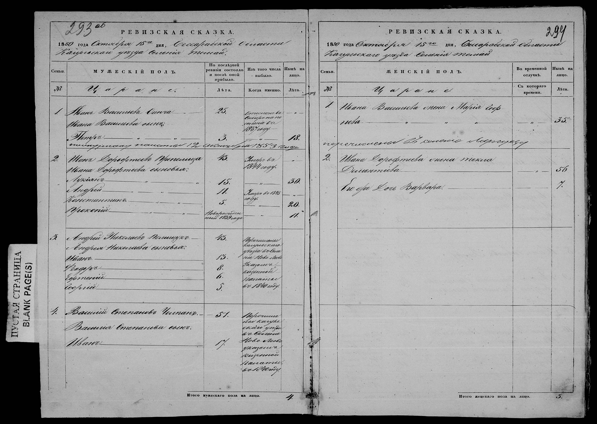

Введіть назву села
Завантаження покажчика…
Покажчик не вдалося завантажити. Оновіть сторінку.
Що таке катаграфія
Катаграфія (румунською catagrafie) це ревізька казка (російською ревизская сказка): податковий перепис Російської імперії, складений для кожного села і кожного двору. У Бессарабії 8-ма ревізія відбулася 1835 року, 9-та 1850-го, 10-та у 1858-1859 роках; додаткові списки складали у 1848-1849 та 1854 роках. Ревізькі казки Бессарабії з усієї губернії зберігаються в Національному архіві Республіки Молдова (ANRM), фонд 134, опис 2, і FamilySearch їх відзняв. Саме це охоплює покажчик: ревізію 1835, 1850 або 1858 року для кожного села, яке називає опис.
Ревізька казка це податковий документ, написаний російською. Держава перелічує платників приблизно раз на п'ятнадцять років, родина за родиною, і позначає, хто вибув від минулої ревізії. Наведіть курсор на позначку, щоб побачити її на сторінці.
Розворот

1 2 3 4 5 6 7 8- 1Шапка: Дата від руки: 15 жовтня 1850 року. Усі віки рахуються на цю дату.
- 2Стан: «крестьяне» (селяни): Окремий зошит на кожен стан. Кого тут немає, той може бути серед мазилів або рупташів.
- 3Родина: Один номер, одна родина: чоловіки ліворуч, жінки праворуч, під тим самим номером.
- 4Чоловіки: Голова родини, потім «его сыновья» (його сини), потім сини з відступом. Спорідненість передано порядком рядків; графи спорідненості немає.
- 5Вік у 1835 році: Вік на час минулої ревізії. Для дитини, що народилася пізніше: «новорожденный 18.. года» (новонароджений такого-то року).
- 6Вибулі: Смерть, рекрутчина, перерахування, заслання, із роком. При перерахуванні село прибуття.
- 7Вік у 1850 році: Порожньо у вибулих.
- 8Жінки: «Жена его» (його дружина), «дочь его» (його дочка). Один вік, на 1850 рік, і немає графи вибуття: жінку, що померла між 1835 і 1850 роками, не показано.
Відкрити зображення в повному розмірі
Родина № 2, чоловіки
- 1Номер родини: Написаний один раз і охоплює всю родину, включно з жінками.
- 2Ім'я: «Иван»: Завжди першим.
- 3По батькові: «Дорофтеев»: Ім'я батька із закінченням -ев або -ов: син Дорофтея.
- 4Прізвище: «Препелица»: Останнім. Іноді його немає.
- 5«умер» (помер) 1844: Рік, а не вік на момент смерті. Клітинку 1850 року прокреслено.
- 6«его сыновья» (його сини): Усе, що нижче з відступом, його сини.
- 7«новорожденный» (новонароджений) 1839: Народився після 1835 року.
Родини 1 і 2, жінки
- 1Номер родини: Той самий, що на лівій сторінці: родина № 1.
- 2Чоловік: «Ивана Васильева»: Ім'я та по батькові чоловіка в родовому відмінку. Без прізвища.
- 3«жена» (дружина): Зв'язок із чоловіком. Для дочки: «дочь».
- 4Ім'я: «Марія»: Її власне.
- 5По батькові: «Георгіева»: Ім'я її батька, з переносом на наступний рядок: дочка Георгія. Часто єдиний слід її рідної родини.
- 6«перечислена в село…» (перерахована до села…): Написано впоперек під родиною, бо в жінок немає графи вибуття.
- 7«дочь» (дочка): Для дівчаток позначки «новонароджена» немає; лише вік.
Пастки
- На сторінці від 1850 року стоять 1853 і 1857: книгу дописували пізніше.
- Жіноча колонка порожня навпроти родини, перерахованої повністю: позначка про вибуття стоїть у чоловіків.
- Наступна сторінка починається з «транспорт» і підсумку попередньої. Це не родина.
- У документі немає ні місця народження, ні імені матері, окрім по батькові, ні жінок, що померли між 1835 і 1850 роками.
Як знайти село на FamilySearch
- Потрібен обліковий запис FamilySearch, він безкоштовний. Знімки цього фонду можна переглядати з дому.
- Введіть назву села. Можна писати кирилицею.
- Виберіть рік кнопками (1834-1836, 1848-1851, 1854-1857, 1858-1859). Сіра кнопка з позначкою «(0)» означає, що в описі немає справи цього села за ті роки.
- Прочитайте рядок опису. Кожну справу показано так, як її записує опис: префікс (col. колонія, s. село, or. місто), назва, повіт, якщо рядок його подає, і аркуші (арк. 1-64v).
- Натисніть «Відкрити на FamilySearch». Справа відкриється на першому знімку. Показана кількість знімків говорить, скільки вона займає; села йдуть у порядку списку.
- Орієнтуйтеся за номером аркуша, написаним олівцем у кутку кожної сторінки: перескакуйте по десять знімків, доки не дійдете до аркушів свого села.
Для 5 справ, чий онлайн-том не розпізнано, кнопка «Відкрити плівку DGS N» відкриває знімки цієї плівки на FamilySearch напряму, а справа починається зі знімка, вказаного тут.
Справа часто займає дві або три плівки.
Шукаєте єврейську родину? У фонді 134 близько ста справ із ревізькими казками євреїв, і JewishGen їх проіндексував: там пошук іде за прізвищем, чого цей покажчик не вміє, і кожен запис веде до свого зображення. Почніть звідти.
Автоматична транскрипція. Нишпорка це інструмент, який створив Sergiy Dalishchinskiy для генеалогів, що шукають в архівах Східної Європи; він під'єднується до ШІ-асистента, яким ви вже користуєтеся. Встановлюється на ваш комп'ютер. Вона машинно читає рукописні книги кирилицею (і польською) XVIII та XIX століть, знаходить прізвище, навіть якщо його записано інакше, а ви спілкуєтеся з нею своєю мовою: справжня допомога, якщо ви не читаєте російською. Її прочитання допомагає знайти запис, але це не надійна транскрипція: завжди звіряйте із зображенням. Сама Нишпорка безкоштовна, але працює через ШІ-асистента (Claude, Codex або іншого), тому потрібна підписка на одного з них.
Аркуш це ваш компас
Я працюю над тим, щоб указати номер знімка для кожного села, але це довго: робитиметься поступово. А поки що вас веде аркуш.
Аркуш (filă, російською лист) це аркуш оригінальної книги, пронумерований архівом; номер написано в кутку сторінки, і саме його наводить опис. Знімок це один кадр мікрофільму. Вони не збігаються: кадр зазвичай охоплює розворот, іноді одну сторінку, а сторінки перезнімають, часом двічі або тричі, якщо перший кадр не вдався.
Тому здебільшого вас веде аркуш, а не знімок. Відкрийте справу, прочитайте номер аркуша на сторінці, куди потрапили, порівняйте його з аркушами свого села у списку і перескакуйте вперед або назад. Сусідні рядки теж допомагають: якщо ви на аркуші 120, у Гайдарі, а Томай записано на аркушах 1-64, поверніться назад.
Назви сіл
Назви подано так, як їх пише опис, а це часто не так, як написали б ви: Beşghioz (Cupcui), Cazaclia (Cazaiaclia), Ataci (Otaci, Atachi). Турецькі, болгарські, гагаузькі та російські назви півдня зазвичай подано в румунському написанні 1990-х років, зі старою формою в дужках. Кириличні назви в дужках подано російською, як у документах того часу.
Тому набирайте коротко («Бешг», а не «Бешгиоз»), дивіться на підказки і пишіть кирилицею, якщо так зручніше. Пошук не розрізняє діакритики і вважає однаковими ş/s, ţ/t, k/c, gh/g, v/w та подвоєні літери; коли опис знає назву у двох написаннях, друге пропонується як «також пишеться».
Повний опис: 815 справ, 9734 рядків
Увесь опис звичайним текстом, щоб його можна було прочитати, роздрукувати, процитувати і знайти через пошукові системи. Поле пошуку вище робить те саме в один клік; кожен номер справи нижче відкриває свій результат.
Дані в машиночитному вигляді: index.jsonl, lignes.csv, dossiers.csv, зі словником полів та інструкцією для ШІ-асистентів. Суспільне надбання, ключ не потрібен.
- 1 · 1834 · Ревізькі казки селян сіл Аккерманського повіту за 1834-1836 роки.Села: Рошу · Ханкышла (Ганкышла, Ханул-Кышлей) · Паланка · Тудора · Крокмаз (Коркмаз) · Оланешты · Чобурчи · Талмаза · Александровка · Веденск · Вознесенск · Ермоклия · Ивановка (Оланештская волость) · Копчак · Карахасаны (Оланештская волость) · Каплань · Молдовка (Вэдень) · Николаевка · Поповка, волость Оланешты · Петропавловка · Петровка · Рэйленка, пласа Олэнешти · Семёновка · Слобозия-Хэнешть · Успенское · Фештелица · Фрумушица · Цариченка, волость Оланешты
- 2 · 1835 · Ревізькі казки вільних селян, колоністів, купців, мазилів, рупташів і боерношів сіл Оргіївського повіту і Ясського повіту за 1835 рік.Села: Тузара · Трифешты · Тэтэрешты · Телешеу · Тарасова · Требужены · Табэра · Тырзиень · Теленешть · Теленештий Векь · Тыршицей
- 3 · 1835-1836 · Додаткові ревізькі казки колоністів казенних сіл Аккерманського повіту, за 1835, 1836 роки.Села: Борисовка · Вознесенск · Жеврьены · Кебабча · Карахасаны · Оланешты · Слобозия-Хэнешть · Татарбунары · Успенское · Цариченка · Чичима · Шагани
- 4 · 1835 · Ревізькі казки жителів і селян громад циган, молдован і малоросів передмість міста Аккермана, за 1835 рік.Села: Крывда · Попушой · Каменный Мост · Шабо
- 5 · 1835 · Ревізькі казки зі списками державних колоністів, дворян, мазилів і рупташів сіл Аккерманського повіту за 1835 рік.Села: Баччалия · Борисовка · Васильевка · Гэлилешть · Гура-Челигидер (Сатул-Ноу) · Дивизия · Дракуля · Дмитровка · Жеврены · Золокани · Кебабча · Карамахмет · Кариачика (Кариачики, Каракичов) · Китай · Нерушай · Павловка · Плахтеевка · Покровка · Сергеевка · Спасское · Татарбунары · местечко Татарбунары · Ташлык · Фурманка · Чичима · Шагани · Ярославка · Ясиновка · Константиновка · Николаевка · Михайловка · Новотроицк
- 6 · 1835 · Ревізькі казки духовенства церков міста Аккермана і сіл Аккерманського повіту, а також міста Килии Ізмаїльського повіту за 1835 рік.Села: Аккерман · Крывда · Пэпушой · Рошу · Дивизия · Татарбунары · Шабо · Карахасаны · Оланешты · Волонтировка · Тэлмаза · Рэйленка · Ермоклия · Александровка Новая · Веденск · Нерушай · Чичима · Дракуля · Карамахмет · Хан-Кышла · Паланка · Тудора · Коркмаз (Крокмаз) · Пуркары · Раскаец · Слобозия-Хэнешть · Каплань · Молдовка (Водень) · Чобручи · Поповка · Фештелица · Копчак · Фрумушица · Цариченка · Шагани · Золокары · Акманхит · Михайловка · Гура-Челигидер (Сатул-Ноу) · Гэлилешть · Ташлык · Фурманка · Китай · Килия
- 7 · 1835 · Ревізькі казки міщан і дворян товариств великоросіян, шляхтичів і малоросіян міста Аккермана за 1835 рік.Села: Аккерман
- 8 · 1835 · Ревізькі казки дворян, мазилів, рупташів і шляхтичів сіл Аккерманського повіту за 1835 рік.Села: Аккерман · Гура-Челигидер (Сатул-Ноу) · Гэлилешть · Копчак · Кебабча · Молдовка (Водень) · Нерушай · Паланка · Тэлмаза · Ташлык
- 9 · 1835 · Ревізькі казки колоністів німецьких колоній Аккерманського повіту за 1835 рік.Села: Бородино · Березина · Бриены · Гнаденталь · Красна · Кляштицы · Лейпциг · Кулм · Кацбах · Малоярославец I · Малоярославец II · Арцизул Ноу · Париж · Сарата · Арцизул Векь · Тарутино · Теплиц · Фершампенуаз I · Фершампенуаз II · № 13, Фриденсталь · Шабо
- 10 · 1835 · Ревізькі казки жителів сіл Аккерманського та Ясського повітів за 1835 рік.Села: Пенико · Бэхринешть · Надежда · Пуркары · Раскаец
- 11 · 1835 · Ревізькі казки дворових слуг міста Аккермана і дворових слуг маєтку Кэдэешть Аккерманського повіту за 1835 рік.Села: Аккерман · Кэдэешты
- 12 · 1859 · Ревізькі казки жителів і державних колоністів сіл державного домену Аккерманського повіту. Список членів молдавської та шляхетської громад міста Аккермана, за 1859 рік.Села: Петропавловка · Паланка · Аккерман · Нерушай
- 13 · 1835 · Ревізькі казки зі списками членів малоросійських товариств, великоросійського духовного стану, молдавських і єврейських громад, великоросійського товариства годинникарів та привілейованого стану міста Бендер за 1835 рік.Села: Бендеры
- 14 · 1835 · Ревізькі казки членів великоросійської духовної громади, малоросійської, молдавської та єврейської громад, християнської купецької громади 3-ї гільдії, єврейської купецької громади 3-ї гільдії, великоросійської громади годинникарів та привілейованого стану міста Бендер за 1835 рік.Села: Бендеры
- 15 · 1835-1836 · Ревізькі казки про купців 3-ї гільдії християнської та єврейської громад міста Бендеры, про дворових слуг, про селян міст Бендеры та Измаил і сіл Бендерського повіту, за 1835-1836 роки.Села: Бендеры · Измаил · Гура-Галбенэ · Кицканы · Спея · Гура-Быкулуй · Каушаны
- 16 · 1835-1836 · Ревізькі казки, що доповнюють пропущені відомості зі списків селян і міщан, великоросійського духовного стану, великоросійського товариства годинникарів, а також членів малоросійських, молдавських і єврейських громад міст Кишинёва та Бендер, за 1835-1836 роки.Села: Кишинёв · Бендеры
- 17 · 1835 · Ревізькі казки дворових слуг і селян міст Аккермана, Бендер, Измаила, Леово і Кишинёва, а також сіл Аккерманського, Бендерського, Хотинського, Леовського, Оргіївського повітів і всіх фортець Бессарабської області за 1835 рік.Села: Аккерман · Бендеры · Гура-Галбенэ · Кицканы · Каушаны · Спея · Гура-Быкулуй · Измаил · Тучиков · Кишинёв · Килия · Болград · Леово · Гаджи-Абдул · Слобозия Кэличень · Перень · Мэркэуць · Бабин · Хотин · Бэлкэуць · Сенехеу · Атаки Могилёв · Секурены · Единцы (Единца) · Руды · Недэбэуць · Новоселица
- 18 · 1835 · Ревізькі казки осіб привілейованих станів сіл Бендерського повіту за 1835 рік.Села: Тодирешты · Тараклия · Тэнэтарь · Флорешты · Фырлэдень · Цынцэрень · Чимишлия · Чоара-Мурза · Абаклия
- 19 · 1835 · Ревізькі казки, що доповнюють відомості про служителів культу церков сіл Бендерського повіту, а також про служителів культу (новоприбулих і вибулих) церков міста Бендеры та сіл Бендерського повіту, за 1835 рік.Села: Бендеры · Хырбовэц · Булбоака · Гура-Быкулуй · Фырлэдень · Сэлкуца · Гаджимус · Кыркэешты · Тэнэтарь · Кэрбуна · Кошкалия · Заим · Луцень (Цынцэрень) · Каинары · Жамэна · Пугой · Гангура · Дубоссары Старые · Коржова · Баччалия · Кобуска Веке · Кобуска Ноуэ · Рошкани · Телица · Шерпены · Спея · Пугэчены · Делакэу (Билачев) · Тараклия · Садаклия · Чимишлия · Батыр · Абаклия (Абаклыджаба) · Селемет · Чоара-Мурза (Черамуза) · Каушаны · Токуз · Кырнэцень · Опач · Манзырь · Кицканы · Копанка · Варница · Каушаны Старые · Гура-Галбенэ · Молешть · Грэдешть · Сагадаик (Сагайдак)
- 20 · Списки жителів, помилково внесених під час народного перепису № 8, міста Тучкова та його передмість (із зазначенням віку, місцевості прибуття і року, в якому ця подія була записана)Села: Тучиков · Кугурлуй (Кухурлуй) · Броаска · Софиана (Софтиань)
- 21 · 1835 · Ревізькі казки представників привілейованого стану, з боернашами (boernaşi), мазилами (mazili), рэзешами (răzeşi), рупташами (ruptaşi), жителями і селянами сіл Бендерського повіту за 1835 рік.Села: Баччалия · Богдановка · Гура-Галбеней · Грэдешть (Грэдиште) · Гангура · Гура-Быкулуй · Жамана · Делакэу (Билачев) · Дубоссары Старые · Ивановка · Коржова · Каинары · Кэрбуна · Кобуска Микэ · Кобуска Веке · Кошкалия · Цынцэрень (Луцень) · Молешть · Пугой · Пугэчены · Рошкана · Спея · Сагайдак · Тодирешты · Телица · Флорешты · Шерпены
- 22 · 1835-1836 · Ревізькі казки представників привілейованого стану та державних колоністів, із представниками єврейських, молдавських і великоросійських громад, сіл Бендерського повіту та містечок Кэушень і Чимишлия, Бендерський повіт, за 1835, 1836 роки.Села: Абаклия (Абаклыджаба) · Опач · Булбоака · Батыр · Баймаклия · Варница · Хырбовэц · Гаджимус · Заим · Каушаны · Кыркэешты · Копанка · Каушаны Старые · Кырнэцень · Кицканы · Калфа · Михайловка · Селемет · Сэиць · Сэлкуца · Садаклия · Токуз · Троица · Тараклия · Танэтарь · Фырлэдень · Чимишлия · Чоара-Мурза (Черамуза)
- 23 · 1835 · Ревізькі казки зі списками колоністів колоній Леовського повіту, Ізмаїльського колоніального округу, за 1835 рік.Села: Бабеле · Болград · Вайсал · Дулукиой · Дермендере · Каиракли́я · Кубей · Каракурт · Новотраян · Ташбунар · Татар-Копчак · Тараклия · Табак · Кишмяуа-Вэруитэ · Чиишия · Ердек-Бурну
- 24 · 1835-1836 · Ревізькі казки зі списками колоністів колоній Леовського повіту, Нижньобуджацького округу, за 1835, 1836 роки.Села: Бургуй · Банова (Бановка) · Главана · Хасан-Батар · Дермендере · Девлет-Агач · Дмитрова · Еникиой · Задунаевка · Изерлия · Иванова · Кулевча · Камчик · Купорань · Код-Китай · Новокарагач · Покроука-Ноуэ (Новопокров) · Пандаклия · Селиогло · Саталык-Хаджи · Траянул Векь (Старотраян) · Фынтына Зынелор · Чумлекиой · Шикирличитай
- 25 · 1836 · Ревізькі казки членів некрасівського та малоросійського товариств, міщан, що рахуються в измаильському міському управлінні, у передмістях міста Тучкова, Ізмаїльського повіту, за 1836 рік.Села: Кугурлуй (Кухурлуй) · Некрасовка · Броаска · Софьяна
- 26 · 1835-1836 · Ревізькі казки купців міста Килия міського управління Измаила, Бессарабська область, за 1835, 1836 роки.Села: Килия
- 27 · 1836 · Ревізькі казки міщан товариств великоросів, малоросів, молдован і євреїв міста Килии, а також колоністів товариств великоросів і малоросів села Вилково міського управління Измаила за 1836 рік.Села: Килия · Вильков (Вылков)
- 28 · 1836-1850 · Ревізькі казки міщан товариств великоросів, малоросів, молдован і євреїв міського управління Килии, а також міщан, колоністів і державних селян, зарахованих до товариств великоросів, малоросів і євреїв міста Килии та містечка Вилково за 1836, 1840, 1842, 1845, 1849, 1850 роки.Села: Килия · Вильков (Вылков)
- 29 · 1835-1836 · Ревізькі казки жителів, дворових слуг, іноземних громадян, купців, селян і міщан міст Бельцы, Бендеры і Кишинёв та сіл Оргіївського, Хотинського і Сороцького повітів за 1835, 1836 роки.Села: Бендеры · Садаклия · Бельцы · Кишинёв · Дрэсличены · Телешеу · Дэнженьий-де-Жос · Маркауцы · Петрушены · Слобозия-Ширеуць
- 30 · 1835 · Ревізькі казки зі списками членів молдавського товариства міста Кишинёва за 1835 рік.Села: Кишинёв
- 31 · 1835 · Ревізькі казки міщан єврейського товариства міста Кишинёва за 1835 рік.Села: Кишинёв
- 32 · 1835 · Ревізькі казки коронних циган із розрядів лэешь (lăieşi), лингурарь (lingurari) і урсарь (ursari), які кочують і переміщуються з місця на місце по території Бессарабії, за 1835 рік.Села: Бессарабия · Оргеев
- 33 · 1835 · Ревізькі казки купців 3-ї гільдії міста Кишинёва та колишніх купців 3-ї гільдії міста Кишинёва за 1835 рік.Села: Кишинёв
- 34 · 1835 · Ревізькі казки купців 1-ї, 2-ї та 3-ї гільдії міста Кишинёва за 1835 рік.Села: Кишинёв
- 35 · 1835 · Ревізькі казки жителів 1-ї та 2-ї частини міста Кишинёва, з молдавського товариства, за 1835 рік.Села: Кишинёв
- 36 · 1835 · Ревізькі казки жителів 3-ї частини та нової частини міста Кишинёва, з молдавського товариства, за 1835 рік.Села: Кишинёв
- 37 · 1835 · Ревізькі казки членів товариства іноземних підданих міста Кишинёва, дворових слуг, вільних колоністів, селян і циган-кріпаків міст Бельцы, Кишинёв і Хотин та сіл Ясського і Хотинського повітів за 1835 рік.Села: Бельцы · Кишинёв · Хотин · Атаки (Могилёв) · Нагорены · Новоселица · Стэлинешть · Хэдэрэуць · Чепелеуць · Шендрены · Драганешты · Миклеушень · Скуляны · Петрешты · Прутечичи-Александрены · Чулуканы
- 38 · 1835 · Ревізькі казки купців 1-ї, 2-ї та 3-ї гільдії міста Кишинёва за 1835 рік.Села: Кишинёв
- 39 · 1835 · Ревізькі казки про купців 2-ї та 3-ї гільдії міста Леово, за 1835 рік.Села: Леово
- 40 · 1835 · Ревізькі казки боєрнашів (boiernaşi) і мазилів (mazili) села Хэнэшень, Леовський повіт, за 1835 рік.Села: Хэнэшений-Ной
- 41 · 1835 · Ревізькі казки боєрнашів (boiernaşi) і мазилів (mazili) села Хэнэшений Ной, Леовський повіт, за 1835 рік.Села: Леово · Бороганы · Казангик · Каракуй · Кувурлуй · Ларгуца · Сэрата · Сэрэцика · Тигечи · Чинак · Баурчи-Молдовень · Борчаг (Бурчак) · Вадул луй Исак · Ветрешой · Хэнэшений-Векь · Хэнэшений-Ной · Готешть · Еникиой · Жавгур · Кания · Капаклия · Кырканы · Купкуй (Копкуй) · Кочулия (Кочалия) · Коштангалия · Киоселия Микэ (Кисельи Мичь) · Ларга · Лека · Мэкрешть · Манта · Мингир · Мусайту · Орак · Пелиней Молдовень · Погэнешты · Тартаул · Томай · Точены · Фрумоаса · Гаджикиой · Чадыр · Чучур-Мингир · Ялпужены
- 42 · 1835 · Ревізькі казки жителів громад великоросів і молдован, з представниками секції вільних матросів, з рупташами, з членами болгарського, грецького, вірменського та єврейського товариств міста Аккермана, за 1835 рік.Села: Аккерман
- 43 · 1835 · Ревізькі казки задунайських переселенців-колоністів колоністського округу Bugeacul de Sus, за 1835 рікСела: Авдарма · Бешкиоз · Баурчи · Бешалма · Башкалия · Валя-Пержей · Дезгинжа · Жолтай · Казаклия (Казаяклия) · Конгаз · Кириет-Лунга · Кирсова · Комрат · Томай · Ферапонтьевка · Чадыр-Лунга
- 44 · 1835 · Ревізькі казки задунайських переселенців-колоністів колоністського округу Cahul-Prut, Леовський повіт, за 1835 рікСела: Брынза · Барта · Булбоака · Волканешты · Джурджулешть · Этулия · Импуцита · Кышлица (Кишлица) · Колибашь · Карагач · Курчь · Слобозия · Сатул Маре (Сатунова) · Фрецэцей · Гаджи-Абдул · Кишмикиой
- 45 · 1835-1850 · Ревізькі казки задунайських переселенців-колоністів і духовенства колоністського округу Bugeacul de Sus, Леовський повіт, за 1835 рікСела: Комрат · Кирсова · Кириет-Лунга · Конгаз · Казаклия (Казаяклия) · Кириутня · Твардица · Томай · Ферапонтьевка · Чок-Майдан · Чадыр-Лунга
- 46 · 1835 · Ревізькі казки колоністів і задунайських переселенців, з духовенством, колоністського округу Bugeacul de Sus, Леовський повіт, за 1835 рікСела: Банова · Бургуй · Хасан-Батыр · Главан · Голица · Девлет-Агач · Дюльмень · Дмитриева · Дельгилер · Еникиой · Задунаевка · Иванова
- 47 · 1835 · Ревізькі казки задунайських переселенців, рупташів і служителів культу (духовенства) Нижньобуджацького колоніального округу Леовського повіту за 1835 рік.Села: Иванова · Изерлия · Код-Китай · Покровка Ноуэ · Купорань · Камчик · Новый Карагач · Кулевка · Пандаклия · Саталык Хаджи · Селиогло · Траянул Ноу · Трополо · Фынтына Зынелор · Чумлекиой · Шикирличитай
- 48 · 1835 · Ревізькі казки вільних селян-орачів, мазилів, рупташів, іноземних підданих і колоністів сіл Леовського повіту, за 1835 рік.Села: Ларга · Лека · Ларгуца · Манта · Мингир · Мокрешть (Мэкрешть) · Мокрештий-Векь (Мэкрештий-Векь) · Мусайту · Орак · Пелиней Молдовень · Пелиней Булгарь · Плешены · Порумбешты
- 49 · 1835 · Ревізькі казки про іноземних підданих, шляхтичів, мазилів, рупташів, боеринашів, резешів, іноземних підданих, колоністів і дворян міста Леово і сіл Леовського повіту, за 1835 рік.Села: Кочулия (Кочалия) · Кания · Леово · Ларга · Ларгуца · Лека · Мокрештий Вехь · Мокрешть (Мэкрешть) · Манта · Орак · Порумбешты · Пелиней Молдовень · Сэрата Рэзешь · Сэрэцика · Тигечи · Татар Баурчи · Фрумоаса (Формоза) · Чадыр-Лунга · Чобалакчия · Чадыр · Чинак · Шамалия
- 50 · 1835-1836 · Додаткові ревізькі казки задунайських переселенців-колоністів колоній колоністських округів Измаил, Кагул-Прут, Верхний Буджак і Нижний Буджак, Леовського повіту, за 1835, 1836 роки.Села: Болград · Татар-Копчак · Табак · Бабеле · Волканешты · Анадол (Анадолка) · Этулия · Слобозия · Дезгинжа · Комрат · Конгаз · Кирсова · Троянул Векь · Еникиой
- 51 · 1835 · Ревізькі казки вільних селян-орачів, рупташів і мазилів сіл повіту [назва відсутня]Села: Жавгур · Чучур-Мингир · Чинак
- 52 · 1835 · Ревізькі казки задунайських переселенців-колоністів і духовенства колоністського округу Ismail, Леовський повіт, за 1835 рікСела: Каиракли́я · Троянул Ноу · Табак · Тараклия · Татар-Копчак · Ташбунар · Чиишия · Кишмяуа-Вэруитэ · Ердек-Бурну
- 53 · 1835 · Ревізькі казки задунайських переселенців-колоністів і духовенства колоній колоністського округу Ismail, Леовський повіт, за 1835 рікСела: Болград · Бабеле · Вайсал · Дермендере · Дулукиой · Каракурт · Кубей
- 54 · 1835 · Ревізькі казки задунайських переселенців-колоністів і духовенства колоній колоністського округу Cahul-Prut, Леовський повіт, за 1835 рікСела: Анадол (Анадолка) · Булбоака · Барта · Брынза · Вэлень · Волканешты · Джурджулешть · Этулия · Импуцита · Курки
- 55 · 1835 · Ревізькі казки вільних селян-землеробів, мазилів, рупташів, боернашів (дрібних бояр) і іноземних підданих сіл Леовського повіту, за 1835 рік.Села: Андрушу · Альбота · Бороганы · Бурлэчень · Баурчи-Молдовень · Голубое · Пайку · Бадикул · Борчаг (Борчак) · Баймаклия Маре · Баймаклия Мика · Броскошешты · Боболица · Вадул луй Исак · Ветрушой · Вылцоц · Слобозия Кыштельница (Слобозия Онилов) · Точиле · Ганасений-Ной · Ганасений Векь · Гречень · Готешть · Гаджикиой · Еникиой · Зырнешты · Кания · Кырпешты · Кырканы · Киоселия Маре · Казаклия · Коштангалия Маре · Киоселия Микэ · Кыету · Кугурлуй (Кухурлуй) · Константиновка · Купкуй · Казангик · Каракуй · Капаклия · Кочулия (Качалия)
- 56 · 1835 · Ревізькі казки колоністів і церковнослужителів колоній колоністського округу Cahul-Prut, Леовський повіт, за 1835 рікСела: Карагач · Картал · Колибашь · Кышлица · Сатул Ноу (Сатунова) · Слобозия · Фрецэцей · Хаджи-Абдул · Кишмекиой
- 57 · 1835 · Ревізькі казки про представників церковнослужителів та їхні сім'ї, Бессарабська область, Леовський повіт, за 1835 рік.Села: Болград · Комрат · Чиишия · Код-Китай · Чадыр-Лунга · Волканешты · Казаклия · Слобозия · Ташбунар · Дулукиой · Ердек-Бурну · Шикирличитай · Еникиой · Кубей · Импуцита · Каракурт · Кишмяуа-Вэруитэ · Бабеле · Табак · Курчь · Булбоака · Барта · Сатул Ноу (Сатунова) · Картал · Карагач · Этулия · Гаджи-Абдул · Колибашь · Брынза · Вэлень · Анадол (Анадолка) · Фрецэцей · Кишмикиой · Дезгинжа · Бешалма · Томай · Авдарма · Гайдар · Валя-Пержей · Баурчи · Конгаз · Тараклия · Татар-Копчак · Ивановка · Дмитриевка · Баново · Чок-Майдан · Джурджулешть
- 58 · 1835 · Ревізькі казки дворових слуг і церковнослужителів міста Кишинёва і сіл Оргіївського повіту за 1835 рік.Села: Хынчешты · Фундул Галбеней · Кишинёв · Чинишеуць · Суслений де жос · Холеркань · Березлоги · Моловата · Маркауцы · Требужены · Бутучень · Оксентя · Кипирчены · Машкауцы · Чокылтень · Тырзиень · Дышкова · Брэвичены · Морозень · Сэрэтень · Станка (Безина) · Цынцэрень · Захайкани · Индэрэпничи · Каменка · Клишова · Жора-де-Мижлок · Жора-де-Жос · Жора-де-Сус · Выщэуць · Лопатна · Булэешты · Букуишка · Лалова · Городище · Извоаре · Стодольна · Сахарна · Екимоуцы · Жеврены · Рэкулешти · Слобозия Душка · Устия
- 59 · 1835 · Ревізькі казки церковнослужителів міста Кишинёва і сіл Оргіївського повіту за 1835 рік.Села: Кишинёв · Ниспоренй-де-Сус · Ниспоренй-де-Жос · Чучулень · Грозешть · Бэлэурешть · Зберойя · Шишканы · Хлопешть (Немцень) · Богичень · Бужор · Маринич · Котул Морий · Вэрзэрешты · Валя-Трэйстени · Костулены · Брэтулены · Милешть · Гэурень · Бэрбоень · Мэкэрешть · Бэлэнешть · Чутешты · Селиште · Исэйкань · Болдурешть · Перень · Дахновичи
- 60 · 1835 · Ревізькі казки боєрнашів (boiernaşi), мазилів (mazili) і рупташів (ruptaşi) сіл Оргіївського повіту за 1835 рік.Села: Корнова · Крэснэшены · Кэприана · Коропчень (Сухулучень) · Круглик · Кипирчены · Каменка · Крузешты · Киштельница · Котул Морий · Кукурузены · Крикова · Леушены · Лозова · Липчень · Лалова · Мэкэрешть · Мунчешть · Морозень · Милешть · Мелешень · Маринич · Микэуць · Матеуцы · Миклешть · Моловата · Малкоч · Михулени · Малотохатин · Мэноилешть · Миклеушень · Машкауцы · Мырзешть · Мерень
- 61 · 1835 · Ревізькі казки кріпосних циган, іноземних підданих і шляхтичів сіл Оргіївського і Хотинського повітів за 1835 рік.Села: Городище · Слобозия Душка (Кэличень) · Слобозия Душка (Кэличень) Добруша · Добруша · Екимоуцы · Стецкань · Мэркэуць · Пэскэуць · Хэдэрэуць · Мерень
- 62 · 1835 · Ревізькі казки церковнослужителів сіл Оргіївського повіту за 1835 рік.Села: Бряново · Ворничены · Голешть · Гожинешть · Шипотены · Стольничень · Тэтэрешты
- 63 · 1835 · Ревізькі казки церковнослужителів сіл Оргіївського повіту за 1835 рік.Села: Бошкана · Брэнешты · Хыртопул-Мик · Желобок · Избиште · Круглик · Рышкова · Фурчень
- 64 · 1835 · Ревізькі казки церковнослужителів сіл Оргіївського повіту за 1835 рік.Села: Алчедар · Биешты · Воротец · Гидулень · Гординешть · Игнэцей · Кипешка · Киштельница · Курлень · Мешень · Михулени · Минчень · Ольшканы · Пещера · Перень · Погребены · Пэпэуць · Распопены · Сэмэшкань · Сыркова · Сирота · Скорцены · Слобозия Ходорогя · Трифешты · Фузэука · Царёвка · Чихорень · Цахнэуци · Шеркани
- 65 · 1835 · Ревізька казка мазилів, рупташів (дрібний привілейований стан) і селян села Оницканы, Оргіївського повіту, за 1835 рік.Села: Оницканы
- 66 · 1835 · Ревізька казка селян села Холеркани, Оргіївський повіт, за 1835 рік.Села: Холеркань
- 67 · 1858-1859 · Ревізька казка представників молдавського та однодворського товариств і купців третьої гільдії міста Аккермана за 1858, 1859 роки.Села: Аккерман
- 68 · 1835 · Ревізькі казки резешів, боернашів, мазилів, дворян, рупташів і шляхтичів сіл Оргіївського повіту за 1835 рік.Села: Оксентя · Алчедар · Богзешть · Бэлчана · Болдурешть · Бравича · Бэчой · Буцень · Бучушка · Бардар · Будэй · Биешты · Брэвичены · Березлоги · Брэила · Бэлэурешть · Бряново · Брэнешты · Бутучень · Богичень · Бэрбоень · Будешты · Бэлэнешть · Бэлэшешть · Выпрова · Ворничены · Вистерничены · Вадул луй Водэ · Вэсиень · Вэрзэрешты · Вынэторы · Ватичь · Выщэуць · Воротец · Волчинец · Слобозия Ходорогя · Глинджень · Хынчешты · Хоргинешты · Гетлова · Дрэсличены · Зубрешты · Гермэнешть · Хыртопул-Маре · Гидигич (Хидигич) · Городище · Гэурень · Гординешть · Горешть · Гэлешть · Хиирова · Гырла · Дэренеу · Дурлешты · Дольна · Дэнчень · Дулежены · Дишкова · Драгушений Векь · Екимоуцы · Жеврены
- 69 · 1835 · Ревізькі казки вільних селян-землеробів, мазилів і рупташів сіл Оргіївського повіту, за 1835 рік.Села: Чинишеуць · Кишмя · Чихорень · Чокылтень · Шолданешты · Шеркани · Шипка · Чутешты · Чучулень · Шендрены · Шишканы · Юрчены · Яловень
- 70 · 1835 · Ревізькі казки осіб, звернених у християнську релігію, сіл Оргіївського повіту за 1835 рік.Села: Вэрзэрешты · Индэрэпничи · Исакова · Киштельница · Леушены · Машкауцы · Хиришень
- 71 · 1835 · Ревізькі казки мазилів і рупташів сіл Оргіївського повіту, за 1835 рік.Села: Распопены · Рэкулешти · Резены · Резина · Стольничень · Садова · Слобозия Душка · Срэшень · Шипотены · Селиште · Суручень · Сирець · Сэсень · Слобозия-Ходорожа · Сыркова · Сэмэшкань де Сус · Сирота · Сэрэтень · Стецкань · Секэрены · Суслень · Сочитень · Скорцены · Спэриець · Телешеу · Тэтэрешты · Трифешты · Требужены · Тузара · Трушены · Тенгелешты (Тэлэешты) · Улму · Устия · Фундул Галбеней · Фрэсинешть · Фурчень · Хоргинешты · Холеркань · Хыртопул-Мик · Хирова · Хулбоака · Хиришень · Царёвка · Цынцэрень · Цыпала · Цибирика · Чорна · Чоплень · Чорешть · Чокылтень
- 72 · 1835 · Ревізькі казки кріпосних циган і придворних служителів міста Кишинёв і сіл Оргіївського повіту за 1835 рік.Села: Кишинёв · Бэлэшешть · Бэкшень · Билиешты · Богичень · Болдурешть · Брэтулены · Бужор · Будешты · Буцень · Валя-Трэйстени · Вистерничены · Воротец · Выщэуць · Ханска · Гетлова · Хыртопул-Маре · Гэлешть · Булбоака · Городище · Греблешть · Хрушова · Дышкова · Драмбашаны · Дулежены · Захайкани · Замчоги · Зберойя · Новаки · Екимоуцы · Ишноваць · Пьетросу · Кетросу · Кэприана · Кукурузены · Кошерница · Куйзэука · Морозень · Курки · Курлучень · Крэснэшены · Логэнешть · Лапушница · Маркауцы · Машкауцы · Микэуць · Милешть · Мешень · Мунчешть · Негрешть · Милешты · Пэулешть · Пожарены · Пуцинтей · Рэдень · Рошкани · Селиште · Сынджера · Сэсень · Шипотены · Слобозия Добруша · Слобозия Кэлимэнешть · Слобозия Кэличень · Стынка (Безина) · Стрэшень · Суручень · Суслений де Жос ши де Сус · Тэтэрешты · Темелеуць · Тузара · Фрэсинешть · Фундул Галбений · Фурчень · Гидигич (Хидигич) · Холеркань · Цыганешты · Чинишеуць · Шишканы · Шолданешты
- 73 · 1835 · Ревізькі казки вільних землеробів-орачів, мазилів (mazili) і рупташів (ruptaşi) сіл Оргіївського повіту за 1835 рік.Села: Буда · Бэчой · Бэлчана · Бозиень · Будэй · Бардар · Богичень · Буцень · Билиешты · Бужор · Бэлэурешть · Бэрбоень · Будешты · Бубуешты (Бубуечи) · Бэлэбэнешть · Бэкшень · Брэила · Бэлэнешть · Бэлцун · Брэтулены · Болдурешть · Ворничены · Вистерничены · Вэлчинец · Винини · Вадул луй Водэ · Вэсиень · Вынэторы · Вэрзэрешты · Валя-Трэйстени · Хынчешты · Городище · Хорешты · Гэурень · Гырла · Грозешть · Булбоака · Гоян · Слобозия Городка · Городка
- 74 · 1835 · Ревізькі казки осіб, звернених у християнську релігію, сіл Оргіївського повіту за 1835 рік.Села: Вистерничены · Лозова · Миклеушень · Сирец · Чучулень · Чорешть
- 75 · 1835 · Ревізькі казки вільних землеробів, мазилів (mazili) і рупташів (ruptaşi) сіл Оргіївського повіту за 1835 рік.Села: Буда · Бэчой · Бэлчана · Бозиень · Будэй · Бардар · Богичень · Буцень · Билиешты · Бужор · Бэлэурешть · Бэрбоень · Будешты · Бубуешты (Бубуечи) · Бэлэбэнешть · Бэкшень · Брэила · Бэлэнешть · Бэлцун · Брэтулены · Болдурешть
- 76 · 1835 · Ревізькі казки церковнослужителів сіл Оргіївського повіту за 1835 рік.Села: Мана · Шапова · Богзешть · Крэснэшены · Гермэнешть · Коропчень · Леушены · Вэсиень · Будэй · Сухулучень · Выпрова · Гетлова · Хулбоака · Пуцинтей · Сэсень · Мелешень · Бравича · Слобозия Хожинешть · Цибирика · Хиришень · Хирова · Дэренеу · Рэдень · Онишканы · Напэдены · Корнова · Нишканы · Кэлэраши · Слобозия-Тузара · Тузара · Пэулешть · Темелеуць · Дольна · Миклеушень · Лозова · Садова · Буда · Чорешть · Хордиште · Пыржолтень · Вэлчинец · Негрешть · Вэрзэрешты · Сирец · Рошкани · Вистерничены · Хидигишь (Гидигичь) · Стрэшень · Скорены · Малкоч · Дурлешты · Петриканы · Кэприана · Трушены · Котул Морий · Рэчула · Табэра · Тыргул Орхей · Орхей · Слобозия Доамней · Селиште · Пересечина · Замчоги
- 77 · 1835 · Ревізькі казки церковнослужителів міста Кишинёва і сіл Оргіївського повіту за 1835 рік.Села: Чимишень · Вадул луй Водэ · Малотохатин · Мерень · Бубуечи · Покшешты · Зубрешты · Войнова · Цыганешты · Микэуць · Онешты · Кобыля · Билиешты · Греблешть · Речя · Рэдень · Буюканы · Кишинёв · Милешть · Яловень · Телешеу · Сочитень · Нимоурень · Цыпала · Негрешть · Сынджера · Дэнчень · Мэноилешть · Резены · Бэчой · Суручень · Будэй · Костешть · Чигырлень · Улму · Ханска · Гырла · Пожарены · Вэсиень · Русештий Векь · Русештий Ной · Бардар · Зымбрены · Хорешты · Орхей · Хынчешты
- 78 · 1835 · Ревізькі казки селян, мазилів (дрібної знаті, звільненої від податків) і рупташів сіл Оргіївського повіту, за 1835 рік.Села: Темелеуць · Трушены · Топор · Тенгелешты (Тэлэешты) · Улму · Фырлэдень · Фрумушица · Фрэсинешть · Фундул Галбеней · Ханска · Цыпала · Чорешть · Чигырлень · Чучулень · Чоплень · Чутешты · Шишканы · Шендрены · Юрчены · Яловень
- 79 · 1835 · Ревізькі казки вільних селян-землеробів і мазилів (дрібної знаті, звільненої від податків) сіл Оргіївського повіту, за 1835 рік.Села: Чучулень · Чоплень · Чутешты · Шишканы
- 80 · 1835 · Ревізькі казки церковнослужителів сіл Оргіївського повіту за 1835 рік.Села: Стецкань · Пашканы · Логэнешть · Крикова · Ишноваць · Миклешть
- 81 · 1835 · Ревізькі казки селян, мазилів (дрібної знаті, звільненої від податків), рупташів і жителів єврейської громади сіл Оргіївського повіту, а також вільних селян села Инешти, Ясський повіт, за 1835 рік.Села: Игнэцей · Ишноваць · Екимоуцы · Исакова · Иванча · Избиште · Извоаре · Индерепничи · Кипешка · Криулены · Когильничены · Куйзэука · Курлень · Кукурузены · Кэлэраши · Инешты
- 82 · 1835-1836 · Ревізькі казки вільних землеробів, мазилів (mazili), рупташів (ruptaşi), міщан, євреїв і вірмен сіл Оргіївського повіту (з січня 1836 року деякі села перейшли з Оргіївського повіту до Кишинівського повіту), за 1835-1836 роки.Села: Буда · Слобозия-Бэлчана · Бардар · Буцень · Бужор · Будешты · Бэлцун · Брэтулены · Бэрбоень · Валя-Трэйстени · Ворничены · Вистерничены · Вэлчинец · Вынэторы · Вэсиень · Хынчешты · Гэузень · Хорешты · Чорешть · Городище · Дольна · Зымбрены · Картиша · Кожушна · Кичера · Кишинёвская Почта (Старая Почта) · Кэрпинень · Кэлимэнешты · Кэприана · Костешть · Логэнешть · Лапушна · Леушены · Мунчешть · Малкоч · Милешть · Ниспорены · Нимореий · Пулберены · Пятра · Русешти · Русештий Ной · Резены · Рошкани · Сирець · Селиште · Скорены · Садова · Фундул Галбеней · Ханска · Цыпала · Чимишень · Чучулень · Яловень
- 83 · 1835 · Ревізькі казки селян, мазилів (дрібної знаті, звільненої від податків) і рупташів сіл Оргіївського повіту, за 1835 рік.Села: Алчедар · Оксентя · Бушэука · Бравича · Бошерница · Бэлэшешть · Бутучень · Брэнешты · Бэлчана · Бошкана · Булэешты · Березлоги · Биешты · Бучушка · Бурларга (Буларда) · Бряново · Будэй · Бэнешть · Брэвичены · Богзешть
- 84 · 1835 · Ревізькі казки вільних землеробів і мазилів (mazili) сіл Оргіївського повіту за 1835 рік.Села: Лозова · Логэнешть · Лапушна · Леушены · Мунчешть · Малкоч · Миклеушень · Милешть · Модвал (Гэурень) · Мэноилешть · Мерешень · Микэуць · Мэкэрешть · Маринич · Мерень · Малотохатин · Мирешть · Негрешть · Нимореий · Негря · Новаки · Немцень · Ниспорены
- 85 · 1835 · Ревізькі казки селян, мазилів (дрібної знаті, звільненої від податків) і рупташів сіл Оргіївського повіту, за 1835 рік.Села: Резены · Русештий Векь · Русешти · Рошкани · Речя · Рэдень · Стрэшень · Скорены · Садова · Сынджера · Суручень · Сочитень · Сирець · Шипотены · Стольничень · Секэрены · Спэриець · Селиште (Тузара) · Солтэнешть · Темелеуць · Трушены · Топор · Тенжелешты (Тэлэешты) · Улму · Фырлэдень · Фрумушица · Фрэсинешть · Фундул Галбеней · Ханска · Цыпала · Чорешть · Чигырлень · Чучулень
- 86 · 1835 · Ревізькі казки мазилів, рупташів, боєрнашів, постельничен і шляхти сіл Оргіївського повіту та містечка Оргеев, Оргіївського повіту, за 1835 рік.Села: Нишканы · Нимореий · Ниспорены · Орхей · Онишканы · Ольшканы · Оницканы · Охринча · Онешты · Пэхэрничень · Пересечина
- 87 · 1835 · Ревізькі казки представників вірменських громад, представників привілейованого стану, селян і жителів великоросійського товариства містечка Орхей, Оргіївський повіт, за 1835 рік.Села: Орхей
- 88 · 1835 · Ревізькі казки мазилів, рупташів і селян сіл Оргіївського та Ясського повітів, за 1835 рік.Села: Юрчены · Яловень · Богзешть · Вэрзэрешты · Войнова · Выщэуць · Воротец · Выпрова · Ватичь · Валя-Попий · Вэлчинец · Вэсиень · Брынзены · Вережень · Вадул Лека
- 89 · 1835-1836 · Ревізькі казки селян, мазилів (дрібної знаті, звільненої від податків) і рупташів сіл Оргіївського, Ясського і Кишинівського повітів, за 1835-1836 роки.Села: включено в дело № 89 · Бэнешть · Бушэука · Бошерница · Бэлэшешть · Бучушка · Булярга (Буларда) · Бравича · Брэвичены · Войнова · Выщэуць · Выпрова · Вэрзэрешты · Хыртопул-Маре · Хыртоп · Гидулень · Хоргинешты · Городище · Хулбоака · Гординешть · Гетлова · Гермэнешть · Хыржаука · Слобозия Душка · Дэренеу · Зубрешты · Захайкани · Игнэцей · Инешты · Екимоуцы · Исакова · Извоаре · Криулены · Кипешка · Куйзэука · Курлень · Кукурузены · Кэлэраши · Каменча · Киштельница · Коропчень · Корнова · Кобылка (Кобыля) · Липчень · Леушены · Мындра · Моловата · Мелешень · Мэлэешть · Морозень · Машкауцы · Минчень · Миклешть · Онешты · Ордэшей · Ольшканы · Онишканы · Оницканы · Охринча · Пещера · Припичены · Поляна · Пуцинтей · Пэхэрничень · Пересечина · Перень · Пивничены · Распопены · Рэдень · Солончены · Стодольна (Кобыляна) · Сэрэтень · Селиште · Станка (Безина) · Тузара · Трифешты · Тырзиень · Хиришень · Хирова · Цынцэрень · Чинишеуць · Чихорень · Чокылтень · Шипка · Шолданешты · Вадул Лека · Кэзэнешты · Теленешть · Тыршицей · Темелеуць
- 90 · 1835 · Ревізькі казки вільних селян, рупташів і мазилів сіл Оргіївського і Ясського повітів за 1835 рік.Села: Лалова · Липчень · Леушены · Лопатна · Минчень · Мындра · Мэртинешть · Миклешть · Матеуцы · Машкауцы · Михулени · Миток · Мана · Моловата · Мырзешть · Морозень · Мелешень · Маркауцы · Мешень · Мэлэешть · Нишканы · Онешты · Ольшканы · Охринча · Оницканы · Онишканы · Михэлаша · Негурень
- 91 · 1835 · Ревізькі казки іноземних підданих, вільних селян, мазилів (mazili) і рупташів (ruptaşi) села Гэузень, Ясський повіт, і сіл Оргіївського повіту, за 1835 рік.Села: Гэузень · Городище · Гидулень · Слобозия Ходорогя · Хулбоака · Гэлешть · Греблешть · Хыждень · Глинджень · Гординешть · Слобозия Хогинешть · Холеркань · Хоргинешты · Гетлова · Хрушова · Хырбовэц · Гермэнешть · Хыржаука · Слобозия Добруша · Слобозия Душка · Слобозия Душка ши Кэличень · Дышкова · Дэренеу · Слобозия Доамней · Жеврены · Желобок · Жора-де-Жос · Жора-де-Мижлок · Жора-де-Сус · Загорены · Зубрешты · Захайкани
- 92 · 1835 · Ревізькі казки жителів вірменського та малоросійського товариств, вільних селян і представників єврейської громади міста Хотина за 1835 рік.Села: Хотин
- 93 · 1835 · Ревізькі казки боєрнашів (boiernaşi) і мазилів (mazili) села Русены та містечка Липканы, Хотинський повіт, за 1835 рік.Села: Липканы · Русени
- 94 · 1835 · Ревізькі казки мазилів, рупташів, боєрнашів і вільних селян сіл Хотинського повіту, за 1835 рік.Села: Липканы · Ленкэуць · Ломачинцы · Ларова (Тэтэрэука Ноуэ и Слобозия) · Липник · Мэкэреука · Малинцы · Маршеница · Мерешеука · Мамалыга · Новосулица · Непоротово · Нелипэуць · Несфоя · Плопь · Порчуленка · Пэскэуць · Петрушены · Перкауцы · Почумбены · Прихородок · Перерыта · Рудий-де-Сус (дин Дял) · Высока · Вережень
- 95 · 1835 · Ревізькі казки кріпосних циган міста Хотин і сіл Хотинського повіту за 1835 рік.Села: Атаки (Могилёв) · Балинцы · Билэуць · Бэлкэуць · Брайкэу · Бурлэнешты · Блешинэуць (Блещенэуць) · Брэтушены · Вэлчинец · Вэсилеуць · Ванчикэуць · Вэратик · Вэскэуць · Белявинцы (Хиловэц) · Хинкэуць · Гординешть · Городище · Хинэуць (Хинкэуць) · Грушовица · Дэнкэуць · Дрепкэуць · Единцы · Корпач · Мындыкэуць · Мэркэуць · Новосулица · Негринць · Паладя · Перерыта · Баламутовка (Поль-Онут) · Перебыковцы · Пэшкэуць · Русени · Рудь-де-Жос · Ржавынць · Роминкэуци · Редиул Маре · Росошени · Табань · Тырново · Фетешты · Халахорень · Хотин · Чернолевка · Чепэноаса · Чепелеуць · Ярова
- 96 · 1835 · Ревізькі казки вільних селян, мазилів, рупташів, боерношів, іноземних підданих і представників єврейського товариства сіл Хотинського і Ясського повітів за 1835 рік.Села: Атаки (Могилёв) · Арионешты · Бырнова-де-Жос · Боросень · Балинцы · Бричаны · Брайкэу · Бодешть · Бобулешть · Бэхринешть · Бэксань · Бэдичень · Безены · Боросений Ной · Бородничень (Ченуша) · Бужерянка · Бэлэшешть · Булбочь
- 97 · 1834 · Ревізькі казки вільних селян сіл Хотинського повіту та державних селян Чернігівської губернії, Суразького повіту, за 1834 рік.Села: Дарабань · Атаки · Арестовка (Рэдэуць) · Буздугень · Бузовица · Бричаны · Берестя (Берестие) · Бэдраджь · Бочикэуць · Бординг (Талмач) · Бэлкэуць · Ванчикэуць · Вэлчинец · Грицени (Фетешть) · Гвэздэуць · Гринэуць · Хыждэу · Глинная-де-Жос · Грушовица · Дэнкэуць · Дынэуць · Дрепкэуць · Должок · Единцы · Крестинешты · Клишкэуцы · Кельминец · Каплеука · Коржеуць · Кошулены · Кулишэука · Комарова · Котяла · Кышла Салий · Кышла Негима · Кышла Замжий · Котюжены · Липканы · Ларга · Ломачинцы · Мэлинешть · Мэркэуць · Михалково · Новосулица · Нагорены · Прихородок · Перебыковцы · Пэшкэуць · Распопинцы · Рукшин · Ритево · Росошани · Ротунда · Ритево и Отачь (Атачь) · Рэкитна · Секурены · Сынджера · Толбурень · Тэрэсэуць · Табань · Форостина · Черлина Маре · Чепелеуць · Шебутинцы · Шилоуцы · Ширэуций-де-Жос
- 98 · 1835 · Ревізькі казки вільних селян, мазилів, рупташів і боерношів сіл Хотинського повіту за 1835 рік.Села: Гвэздэуць · Ветрянка · Василиуць · Ворничены · Вэлчинец · Волошкова · Вэнчикэуць · Вартикэуць · Виишоара · Хиловэц (Белявинць) · Гординешть · Гринэуций де Сус · Гринэуций де Жос · Хинкэуць · Глинная · Хлина · Глинная-де-Сус · Вэскэуць · Вороновица · Гордэуць (Гординц) · Грозинць (Грозница)
- 99 · 1835-1836 · Ревізькі казки вільних селян, рупташів, міщан і євреїв сіл Ясського і Хотинського повітів за 1835,1836 роки.Села: Бахмут · Богень · Врэнешты · Вулпешты · Хырчешты · Хециул-Ноу · Глинджень · Глодень · Герман · Душмань · Думбравица · Дружинены · Дану · Езэрены · Захайкани · Зазулены · Извоаре · Кирилены · Кырпицы · Кишкарены · Койчены · Козешты · Корнешть · Кошкодены · Кукуецы и хутор Стурзены · Кубань · Кондрэтешть · Корпач · Кэлинешты · Лимбень · Миклеушень · Мэноилешть · Мирчешть · Мэнзэтешть · Мэгура · Навырнец · Напэдены · Обря · Пырлица (Пырлиць) · Путинешты · Речя · Рэдоая · Рэдень · Слобозия Бэлцилор · Скумпия · Скуляны · Стынджинень · Синешты · Сэрата · Сынджерей · Томешты · Томештий Вехь · Тодирешты · Унцешты · Устия · Флорешты · Флорицоая · Фалешты · Фриджень · Флэмынзень · Чоропкань · Чучулея · Шолтоая · Блещенэуць (Блешинэуць) · Слобозия Блещенэуць (Блешинэуць) · Вэратик · Забричени · Порчуленка · Парково · Почумбены · Почимбэуць · Стынгэчень (Друца) · Теребна
- 100 · 1835 · Ревізькі казки церковнослужителів міста Хотина і сіл Хотинського повіту за 1835 рік.Села: Хотин · Новосулица · Липканы · Атаки · Прихородок · Рашков (Рышков) · Чепэноаса · Рукшин · Каплеука · Перкауцы · Вартикэуць · Кельминец · Ленкэуць · Вороновица · Мошинець · Бырнова · Ширэуцы · Недибэуць · Долинены · Пэскэуць · Дэнкэуць · Хыждэу · Билэуц (Белеуцы) · Сынджера (Баскань) · Круглик · Стэучень · Поляна · Грозница (Грозинць) · Колинкэуць · Ржавинць · Баламутовка · Перебыковцы · Рухотин · Бочикэуць · Шилоуцы · Малинцы · Клишкэуцы · Зарожаны · Крестинешты · Должок · Берестя · Дынэуць · Сэнкэуць · Рэкитна · Ревкэуць · Строешть · Маршеница · Тэрэсэуць · Вэнчикэуць · Костичень · Шендрены · Шербинцы · Форостина · Черлина · Котеля · Мэлинешть · Шишкэуци · Рынгачь · Кышла Салий · Дрепкэуць · Чебрук · Крива · Мамалыга · Негринць · Стэлинешть · Несфоая · Бэлкэуць · Толбурень · Котяла (Котелеу) · Хиловэц (Белявинць) · Бэлэсинешть · Перерыта · Хлина · Ларга · Кышла Замжий · Грушовица · Бабин · Ирстов (Рестев) · Комаров · Бузовица · Бурдюг · Вэлчинец · Нелипэуць · Макареука · Нагорены · Бричаны · Котюжены · Каракушень · Коржеуць · Тринка · Фетешты · Бурлэнешты · Виишоара · Бэдраджь · Брынзены · Гординешть · Тырново · Балкауцы · Колыкэуць · Табань · Мэркэуць · Ротунда · Хинкэуць · Чепелеуць · Корестэуць · Хэдэрэуць · Клокушна · Гвэздэуць · Мындыкэуць · Булбоака · Требисэуць · Янэуцы · Селиште · Молодова · Кормань · Шебутинцы · Кулисэука · Витрянка · Сербичены · Роминкэуци · Вэскэуць · Гриманкэуць · Росошени · Кобылчены · Секурены · Наславча · Волошкова · Василеуць · Ожева · Ломачинць · Непоротова · Михалковка · Белоусовка · Окница · Липник · Михэлэшень · Гринэуць · Бырлэдень · Паладя · Русени · Единцы · Купчинь · Парково · Фынтына Албэ · Редиул Маре · Дондюшаны · Корбу · Дынжень · Городище · Высока · Новая Татарауца · Старая Татарауца · Ярова · Рудий-де-Жос · Рудий-де-Сус · Арионешты · Каларашовка · Унгуры · Сударка · Гырбова · Вережень · Чернолевка · Городичи (Цаул) · Климэуцы · Трестиень · Брайкэу · Саука · Кодрены · Корпач · Блещенэуць (Блешинэуць) · Порчуленка · Теребна · Почумбэуць · Почумбены · Стынгэчень · Вэратик · Костешть · Куконешты
- 101 · 1835 · Списки осіб, внесених згідно з переписом № 8 1835 року в місті Хотине і в селах Хотинського повіту (особи, що прибули з інших місцевостей Бессарабської області Росії та з-за її меж), за 1846 рікСела: Хотин · Тэрэсэуць · Котелеу · Колинкэуць · Ларга · Медвежа · Котюжены · Хиловэц (Белявинць) · Бричаны · Гриманкэуць · Табань · Колыкэуць · Мэркэуць · Булбоака · Корестэуць · Росошани · Новосулица · Чепелеуць · Хинкэуць · Рэтунда · Паладя · Кельминец · Бузовица · Бабин · Коржеуць · Гординешть · Тринка · Единцы · Тырново · Бэдраджь · Бурлэнешты · Секурены · Кобыльчены · Василеуць · Белоусовка · Хэдэрэуць · Гринэуць · Михэлэшень · Ломачинць · Янэуцы · Рестев · Бордюг (Толмачия) · Бырлэдень · Волошкова · Окница · Богдэнешть · Гримэнкэуць · Каракушень · Требискэуць · Вэлчинец · Маршинцы · Молдова · Грушовица · Непоротово · Комарова · Холохорень · Ржавинць · Слобозия Холохорень · Бэдэраж · Билэуць (Белеуцы) · Каплеука · Косэуць · Ленкэуць · Роминкэуци · Вэскэуць · Кормань · Шебутинцы · Дарабань · Требисэуць · Нагорены · Мошинец · Рестев (Ирцов) · Клокушна · Вартикэуць · Непоротова · Пенкэуць · Рынгачь · Вэнчикэуць · Ревкэуць · Рэкитна · Берестя · Мэлинешть · Черлина Маре · Дынэуць · Грозинць · Перебыковцы · Баламутовка · Шилоуцы · Бочикэуць · Малинцы · Должок · Клишкэуцы · Крестинешты · Недибэуць · Зарожены · Чепэноаса · Рашков (Раску) · Ширэуцы · Рукшин · Круглик · Стэучень · Сынджер (Баскань) · Форостна · Шербинцы · Билэуц (Белеуцы) · Несфоая · Бэлкэуць · Анадол · Ширэуций-де-Жос · Залучея · Дрепкэуць · Чебрук · Крива · Кышла Салий · Котяла · Гримешть · Виишоара · Халахорень · Глинная · Гвэздэуць · Перкауцы · Берлинцы · Бордюг · Трестиень · Кышла Негима · Гордэуць (Гординц) · Слобозия Трестень · Паладия · Липканы
- 102 · 1835 · Ревізькі казки селян, рупташів, мазилів (дрібної знаті, звільненої від податків) і резешів (вільних селян-землевласників) сіл Ясського і Хотинського повітів, за 1835 рік.Села: Лимбень · Мынзэтешть · Меделень · Мэноилешть · Миклеушень · Мустяца · Мэлэешть · Мэгуреле · Мирчешть · Мэгура · Мындрешть · Навырнец · Напэдены · Обря · Одая-Правила-де-Жос · Петрешты · Пырлица · Петрушены · Дэмэшкань · Пынзэрень · Пьетросу · Пыржота · Попорница · Александрений де пе Прут · Пелиния · Почумбены · Почумбэуць · Парково · Порчуленка
- 103 · 1835 · Ревізькі казки молдавських дворян, вільних землеробів, мазилів і рупташів сіл Ясського та Хотинського повітів за 1835 рік.Села: Герман · Глодень · Гэлэшень · Хециул-Ноу · Хециул-Векь · Хэснашений-де-Жос · Хынчешты · Глинджень · Горешты · Гросень · Гилиčень · Харбуцкань · Дэнуцень · Дружинены · Душмань · Друитоаря · Думбравица · Дану (Данул) · Городиштя-де-Жос (Городище) · Думень
- 104 · 1835-1836 · Ревізькі казки дворян, мазилів, рупташів і вільних землеробів сіл Ясського повіту за 1835, 1836 роки.Села: Аврэмень · Бумбэра · Бутештий-луй-Ставер · Бутешты Величико · Бешены · Биличены · Балатина (Болотино) · Бучумены · Боблетичь · Бургеля · Бургеля Сочь · Бахмут · Вадул Цэрий де Сус (Вадул Цырий) де Сус · Вадул Цэрий де Жос (Вадул Цырий) де Жос
- 105 · 1835 · Ревізькі казки дворян, мазилів, рупташів, шляхтичів, австрійських підданих і вільних землеробів сіл Ясського повіту за 1835 рік.Села: Хыждень · Думбравень (Радоая) · Думбравица · Друитоаря · Дэркэуць · Дэнуцень · Драганешты · Домулужены · Дубна · Дрокия · Одая-Шурель · Дану (Данул) · Жапка · Залучени · Загорна · Застынка · Захайкани · Згардешты · Инешты · Извоаре · Кременчуг · Косэуцы
- 106 · 1835 · Ревізькі казки дворян, боєрнашів, мазилів, рупташів і вільних землеробів сіл Ясського та Хотинського повітів за 1835 рік.Села: Голиешть (Гэлилешть) (Одая Пэгубень) · Холошница (Голошница, Воловчинец) · Гиндешть · Гырбова · Гринэуций де Жос · Цауль (Городичи)
- 107 · 1835 · Ревізькі казки дворян, боєрнашів, рупташів, мазилів, шляхтичів, австрійських підданих, селян, вільних землеробів і колоністів сіл Ясського та Хотинського повітів за 1835 рік.Села: Гиндешть · Хыртоп · Гура-Каменчий · Гура-Кэинарулуй (Гура-Кэинарь) · Гиздица · Хэснэшений-де-Сус (Одая-Хэснэшень) · Аснэшень (Хэснэшень) · Драганешты · Дэркэуць · Домулужены · Дубна · Дрокия · Дрокия и хутор Шуриле · Городище · Городиштя-де-Жос · Дынжений-де-Сус · Дондюшаны · Дынжений-де-Жос
- 108 · 1835 · Ревізькі казки церковнослужителів сіл Ясського повіту за 1835 рік.Села: Скуляны · Герман · Дэнуцень · Блиндешть · Таксобень · Врэнешты · Унтень · Мирчень (Хэрешть) · Юганы (Алексэндрень) · Валя-Русулуй · Коюческы (Койчены) · Четиряны · Унцешты · Флорицоая · Мэноилешть · Вулпешты · Рэдень · Бахмут · Кондрэтешть · Хырчешты · Мынзэтешть · Синешты · Богень · Мирчешть · Бумбэта · Корнешть · Тешкурень · Мэгура · Мэгуреле · Сочь · Фалешты · Ойшены (Мустяца) · Рисипень · Извоаре · Скумпия · Сэрата · Шолтоая · Стынджинень · Стольничень · Флорешты · Бучумены · Тодирешты · Пырлица (Пырлиць) · Езэрены · Кошкодены · Думбравица · Боблетичь · Бурсучень · Козешты · Згардешты · Гилиčень · Кучоая · Бешены · Чулуканы · Мындрешть · Михэлаша · Теленешть · Негурень · Вережений-де-Жос · Вережений-де-Сус · Кицканы · Кэзэнешты · Брынзены · Вадул-Лека · Ордэшей · Домулужены · Чутулешты · Бэнешть · Теленештий Векь · Инешты · Рогожень · Драганешты · Стынджерей · Пепень · Рэзэлэй · Бэлэшешть · Копэчень · Котюжений Ной · Хециул-Ноу · Хециул-Векь · Циплешты · Правила (Пражила) · Стырчень · Ченуша (Бородничень) · Препелица · Альбинец · Пынзэрень · Обря · Лимбень · Устия · Чучулея · Кухнешты · Бисериканий-де-Кымп · Бисериканий-де-Лункэ · Килия (Жулешты) · Кетриш (Петриш) · Кэлинешты · Хынчешты · Дружинены · Навырнец · Гэлэшень · Глодень · Каменка · Кукуецы · Захайкани · Хилюць · Мэлэешть · Петрушены · Друитоаря · Брэнешты · Василеуць · Балатина (Болотино) · Кобаны · Бутешты · Душмань · Кэпрешты · Петрешты
- 109 · 1835 · Ревізькі казки дворян, мазилів, рупташів, іноземних громадян, іноземних дворян, міщан, міщан-євреїв і вільних землеробів містечка Сорока за 1835 рік.Села: Сорока
- 110 · 1835 · Ревізькі казки іноземних підданих, вільних селян, мазилів (mazili), рупташів (ruptaşi), резешів (răzeşi), боєрнашів (boiernaşi), міщан, податних людей і євреїв сіл Ясського та Хотинського повітів за 1835 рік.Села: Тодирешты · Таксобень · Тешкурень · Томештий Вехь · Томешты · Томешты Резешь · Унгень · Унцешты · Устия · Унтень · Флорицоая · Фрэсинень · Фалешты · Флэмынзень · Флорешты · Хынчешты · Хилюць · Циплетешты (Цыплецешты) · Флочень · Кошено-Флочены · Четиряны · Чоропкань · Чучулея · Одая-Чучуень · Чулуканы · Шолтоая · Тюрта · Теребна · Фынтына Албэ
- 111 · 1835 · Ревізькі казки дворян, мазилів, рупташів, шляхтичів, боєрнашів і землеробів сіл Ясського та Хотинського повітів за 1835 рік.Села: Хырчешты · Голиешть (Одая Пэгубень) · Хециул-Ноу · Чирипкэу · Шестачи · Шолканы · Шептеличи · Шалвиры · Иоржница · Ярова
- 112 · 1835 · Ревізькі казки дворян, боєрнашів, мазилів, рупташів, шляхтичів і вільних землеробів сіл Ясського та Хотинського повітів за 1835 рік.Села: Цепилова · Циплешты · Чутулешты · Чорница · Черлина · Черешновэц · Чернолевка
- 113 · 1835 · Ревізькі казки мазилів, рупташів, іноземних підданих, дворян, вільних колоністів, молдавських бояр, шляхти, євреїв і вільних селян сіл Ясського та Хотинського повітів, за 1835 рік.Села: Рисипень · Речя · Рэдень · Рэдоая (Думбрэвень) · Одая-Думбрэвень · Скуляны · Скулений Векь · Стынджинень · Скумпия · Стольничень · Стынкэуць · Слобозия Копэчень Рэкэрия · Сэрата · Синешты · Сынжерей · Стурзень · Сингурений Векь · Слобозия Галаца (Кэлугэр) · Слобозия Бэлць · Семены · Стынгэчень (Друцэ)
- 114 · 1835 · Ревізька казка церковнослужителів жіночого скиту села Кошелеука, Ясського повіту, за 1835 рік.Села: Кошелеука
- 115 · 1835 · Ревізькі казки рупташів, мазилів, дворян, боернашів і вільних селян сіл Ясського і Хотинського повітів за 1835 рік.Села: Вэнчикэуць · Вертюджень · Вэскэуць · Воронкэул Векь · Воронкэу · Василкэу · Волоаве · Воловица · Водены · Гвоздова
- 116 · 1859 · Ревізькі казки селян сіл Кишинівського повіту за 1859, 1859 роки.Села: Бостанча · Бозиень · Бэкшень (Бакшань) · Бэлчана · Болдурешть · Брэтулены · Брэила · Бубуечи · Буцень · Буда · Бужор · Бобейка · Будэй · Будешты
- 117 · 1835-1837 · Ревізькі казки дворян, мазилів і рупташів сіл Ясського повіту за 1835-1837 роки.Села: Думбравица · Дэнуцень · Дану (Данул) · Душмань · Думулдженъ · Езэрены · Загорна · Згардешты · Извоаре · Кукуецы · Кучоая · Кондрэтешть · Куничя · Кухнешты · Кирилены · Кэинарий Векь · Кэинарий Ной · Каменка · Гура-Каменчий · Кобыля Веке · Кобаны · Климэуцы · Корнешть · Курешница · Кицканы · Кошкодены · Лимбень · Мэгуреле · Мындык · Мирчешть · Михэлаша
- 118 · 1835 · Ревізькі казки вільних селян, мазилів, рупташів, іноземних підданих, боерношів і дворян сіл Ясського і Хотинського повітів за 1835 рік.Села: Езэрены · Загаранча · Захайкани · Згардешты · Зазулены · Койчены (Коюческы) · Извоаре · Кетриш · Кэлинешты · Кухнешты · Кубань (Кобань) · Каменка (Хыждиень) · Каменка · Кукуецы · Копычанка · Копэчень · Кирница · Корлэтень (Стрымба) · Кучоая · Кишкарены · Кошкодены · Кондрэтешть · Корнешть · Козешты · Кузмень · Кирилены · Купчинь · Забричени · Кетрошица · Костешть
- 119 · 1835 · Ревізькі казки дворян, мазилів, рупташів, шляхтичів, боєрнашів, іноземних громадян, осіб, охрещених з євреїв і навернених до християнської віри, землеробів і вільних колоністів сіл Ясського та Хотинського повітів за 1835 рік.Села: Жапка · Загорна · Застынка · Залучени · Извоаре (имение Скэень) · Климэуцы · Копэчень · Кэпрешты · Кухурештий-де-Сус · Кухурештий-де-Жос · Куничя · Кушмирка-де-Сус · Кушмирка-де-Жос · Кушмирка · Кобылня Ноуэ · Кобылня Веке · Кошерница · Косэуцы · Курешница · Кременчуг · Кэинарий Векь · Кэинарий Ной · Кетросу ши Одая Кетросу (Петросу) · Слобозия-Кетросу · Куболта · Котюжений Мичь · Котюжений Марь · Котова · Каларашовка · Корбу · Кодрены
- 120 · 1835 · Ревізькі казки церковнослужителів міста Бэлць і сіл Ясського повіту за 1835 рік.Села: Бельцы · Слобозия Бэлцилор · Пелиния · Боросень · Речя · Чучуиень · Сингурений Векь · Флэмынзень · Кишкарены · Глинджень · Пырлица (Пырлиць) · Стрымба · Копычанка · Биличены · Курешница · Извоаре · Стынень (Скинень) · Дэнуцень · Христичи · Бэксань · Косэуцы · Булбочь · Околина · Воловчинец · Кременчуг · Мэлкэуць · Мэкэреука · Кэинарий Векь · Дэркэуць · Шолканы · Рубленица · Бэдичень · Сенатовка · Рашков Нижний · Рашков Верхний · Бурсук (Намалова) · Кобыля де Сус · Кобыля де Жос · Жапка · Климэуцы · Шестачий-де-Сус · Шестачий-де-Жос · Кушмирка-де-Жос · Кушмирка-де-Сус · Рэдулень · Бобулешть · Гэузень · Унчитешты · Сальча · Кухурештий-де-Жос · Кухуршетий-де-Сус · Соколовка · Чорница · Кошерница · Наподова · Поляна Куничя · Бодешть · Сахарна · Цыра · Хыртоп · Речешть · Тыршицей · Котюжений де Жос · Котюжений де Сус · Гвоздова · Севирова · Гура-Каменчий · Вэдены · Воронкэул Векь · Воронкэул Ноу · Василкэу · Трифэуць · Сорока · Бужеровка · Застынка · Волова · Парканы · Реди-Черешноваць · Раковэц · Стойкань · Дубна · Солонец · Чирипкэу · Вэскэуць · Темелеуць · Вертюжень · Залучени · Черлина · Нимереука · Фрумушица · Скэены · Александрены · Путинешты · Тырново · Гура-Кэинарулуй · Лунга · Гиздица · Бэхринешть · Мындыкул Ноу · Мындыкул-Векь · Мэркулешть · Пьетросу (Кетросу) · Флорешты · Хэснэшень · Куболта
- 121 · 1835 · Ревізькі казки міщан, купців, осіб, охрещених з іудеїв і навернених до християнської віри, і вільних селян міста Бельцы Ясського повіту за 1835 рік.Села: Бельцы
- 122 · 1835 · Ревізька казка приватної духовної особи без священницького сану села Дэнуцень, Ясського повіту, за 1835 рік.Села: Дэнуцень
- 123 · 1835 · Ревізькі казки вільних селян, іноземних підданих, мазилів, рупташів, боерношів і колоністів сіл Ясського і Хотинського повітів за 1835 рік.Села: Александрены · Аврэмень · Алуниш · Бисериканы · Бокша · Балатина (Болотино) · Бутешты Величико · Бутешты Ставро · Слобозия Бутешть Ставро (Брэнешть) · Слобозия Бутешть (Рытень) · Бахмут · Бешены · Богень · Бумбэта · Богдэнешть · Блиндешть · Бучумены · Боросений Векь · Бургеля Сочь · Боблетичь · Бурсучень · Биличены · Врэнешты · Вулпешты · Василиуць · Валя-Русулуй · Бикир · Брэтушены · Блещенауцы · Брынзены · Вэратик · Володены
- 124 · 1835 · Ревізькі казки мазилів, рупташів, іноземних підданих, вільних селян, боярнашів і дворян сіл Ясського та Хотинського повітів за 1835 рік.Села: Липник · Ленкэуць · Лунга (Дрождешть) · Мерешеука · Мошана · Наславча · Паустово · Тырново · Плопь (Триешты) · Дрождиешты (Лунга) · Мэкэреука · Мэлкэуць · Мэркулешть · Мындык · Бурсук · Наподова · Нимереука · Одая-Ванцина · Одая-Препелица · Околина · Окланда · Препелица · Пепень · Погоарна Сергие · Погоарна Рэзешты · Поляна Куничий (Поляна) · Парканы · Пражила (Правила) · Путинешты
- 125 · 1835 · Ревізькі казки мазилів, рупташів, іноземних підданих і вільних землеробів сіл Хотинського повіту, за 1835 рік. Хотинський повіт.Села: Паладя · Рукшин · Ржавинець · Рухотин · Пол-Рутохин · Рашков (Раску) · Ревкэуць · Рэкитна · Рынгачь · Росошани · Ротунда · Распопинцы · Роминкэуци · Рестев (Рестео) · Рестев-Атачи (Отачь) (Вырстова) · Стэучень · Строенць (Строешть) · Стэнкэуць · Стэлинешть · Сынджера (Баскань) · Секурены · Сербичены · Селиште
- 126 · 1835 · Ревізькі казки мазилів, рупташів, міщан і вільних селян сіл Ясського та Хотинського повітів за 1835 рік. Хотинський повітСела: Русени · Ружница · Рудий-дин-Дял, де Сус · Рудий-дин-Вале, де Жос · Редиул Маре · Слобозия-Вэлчинец · Самойлеука · Саука · Сударка · Вадул Рашков (Вадул луй Рашку) · Рэзэлэй · Речешть · Раковэц · Рэдулень · Рубленица · Рогожень · Рошиетичь · Слобозия Кошелеука · Стырчень · Соколовка · Сальча · Сэнэтэука · Слобозия-Воронкэу · Стойкань · Скинены · Солонец · Севирова · Штефэнешты · Скэены · Слобозия-Цыпордей
- 127 · 1835-1836 · Ревізькі казки державних колоністів сіл Бендерського повіту за 1835, 1836 роки.Села: Абаклия · Опач · Варница · Гаджимус · Кыркэешты · Каушаны Старые · Каушаны · Калфа · Кырнэцень · Копанка · Сэлкуца · Сэиць · Тэнэтарь · Тараклия · Фырлэдень
- 128 · 1835-1836 · Ревізькі казки купців міста Тучиков, що перебуває в підпорядкуванні Ізмаїльського міського управління, за 1835, 1836 роки.Села: Тучиков
- 129 · 1836 · Ревізькі казки міщан товариств великоросів, малоросів, молдован, греків, вірмен, некрасівців, євреїв і вільних матросів міста Тучков міського управління Измаила за 1836 рік.Села: Тучиков
- 130 · 1836 · Ревізькі казки колоністів сіл, підвідомчих міському управлінню Измаила, за 1836 рікСела: Гаджи-Курда · Кышлица · Хасан-Аспага · Чамашир · Муравьевка
- 131 · 1836 · Ревізькі казки колоністів сіл, підвідомчих міському управлінню Измаила (Tucicov), за 1836 рікСела: Тучиков (лица, переселённые из г. Брацлав в г. Тучиков) · Измаил (православные старообрядцы, переселённые из местечка Бершадь Подольской губернии)
- 132 · 1835-1846 · Ревізькі казки жителів великоросійської, молдавської, іноземних громадян і болгарської громад, міщан, іноземних дворян, осіб, охрещених з євреїв і навернених до християнської віри, міст Бельцы, Бендеры, Кишинёв та сіл Бендерського, Кишинівського, Ясського, Оргіївського і Аккерманського повітів, а також осіб, звільнених від кріпосної праці у фортеці Измаил, за 1835-1846 роки.Села: Измаил за годы · Кишинёв · Бельцы · Бендеры · Измаил · Вистерничены · Перень · Старая Почта · Русештий Ной · Сынджера · Билиешты · Яловень · Замчоги · Гидулень · Воротец · Бучушка · Теленешть · Флэмынзень · Гангура · Рошкани · Баймаклия · Баччалия
- 133 · 1835-1836 · Ревізькі казки селян, колоністів, резешів (вільних селян-землевласників) і мазилів (дрібної знаті, звільненої від податків) сіл Леовського повіту, за 1835-1836 роки.Села: Бороганы · Хэнэшений-Векь · Еникиой · Казангик · Киоселия Микэ · Каракуй · Ковурлуй · Ларгуца · Погэнешты · Пелиней Молдовень · Сэрата Гэлбенэ · Сэрата · Сэрэцика · Татар Баурчи · Фрумоаса · Чобалакчия
- 134 · 1835-1842 · Ревізькі казки колоністів Аккерманського повіту та колоністів, переселених з інших колоній Херсонської губернії, Одеського і Тираспольського повітів, за 1835, 1842, 1844, 1846, 1847, 1850 рокиСела: Арциз · Березина · Бергдорф · Бородино · Бриены · Виртемберг · Гофнунгсталь · Гелленсталь · Гильдендорф · Гисталь · Гросслибенталь · Касел · Кляштицы · Красна · Кулм · Лейпциг · Лихтенталь · Малоярославец I · Малоярославец II · Нейдорф · Париж · Петерсталь · Плоц · Рарбах · Тарутино · Теплиц · Францфельд · Фриденсталь · Новый Фриденсталь · Фершампенуаз
- 135 · 1835 · Ревізькі казки селян, євреїв, іноземних підданих, мазилів (дрібної знаті, звільненої від податків), рупташів і боернашів (дрібних бояр) сіл Хотинського повіту, за 1835 рік.Села: Сулица Ноуэ · Небидэуць · Несфоя · Непоротова · Нагорены · Негринць · Онут · Пол-Онута-де-Сус · Окница · Ожево · Прихородок · Пэшкэуць · Перебыковцы · Перерыта · Поляна · Перкауцы
- 136 · 1848 · Ревізькі казки купців і міщан єврейської громади міста Бендеры та сіл Бендерського повіту за 1848 рік.Села: Бендеры · Молешть
- 137 · 1848-1850 · Ревізькі казки вільних землеробів і купців єврейської громади міста Бендеры та сіл Бендерського повіту, а також сіл Гайсинського повіту Подільської губернії, за 1848, 1850, 1851, 1853-1856 роки.Села: Бендеры · Каушаны · Чимишлия · Молешть · Гринов · Ладыжин · Теплина
- 138 · 1848 · Ревізькі казки купців і міщан старої та нової єврейських громад міста Измаила за 1848 рік.Села: Измаил · Одесса · Херсон · Кантакузовка и Мостовой
- 139 · 1848 · Ревізькі казки купців і міщан єврейської громади міста Кишинёва за 1848 рік.Села: Кишинёв
- 140 · 1848 · Ревізькі казки кріпосних циган села Бэрбоень, Кишинівський повіт, за 1848 рік.Села: Бэрбоень · Замчоги
- 141 · 1848 · Ревізькі казки єврейських міщан містечка Хынчешть, Кишинівського повіту, за 1848 рік.Села: Хынчешты
- 142 · 1848-1858 · Ревізькі казки членів купецького та міщанського товариств єврейського походження міст Бендеры, Килия і Кишинёв, містечка Каушаны Бендерського повіту, містечок Красное, Ладыжин, Гринова-Теплина Гайсинського повіту Подільської губернії за 1848-1853,1858 роки.Села: Килия · Бендеры · Кишинёв · Каушаны · Красна · Ладыжина · Гринова · Теплина
- 143 · 1848 · Ревізькі казки купців єврейського походження міста Орхей за 1848 рік.Села: Орхей
- 144 · 1848-1849 · Ревізькі казки кріпосних циган сіл Оргіївського повіту за 1848, 1849 роки.Села: генеалогия цыган Оргеевского уезда · Пещера · Желобок · Брэвичены · Исакова · Гермэнешть · Сэсень · Ишноваць · Брэнешты
- 145 · 1848 · Ревізькі казки міщан єврейського походження містечка Теленешты, Оргіївського повіту, за 1848 рік.Села: Теленешть
- 146 · 1848 · Ревізька казка селян села Инешть, Оргіївського повіту, за 1848 рік.Села: Инешты
- 147 · 1848 · Ревізька казка міщан-євреїв містечка Тузара, Оргіївського повіту, за 1848 рік.Села: Тузара
- 148 · 1849-1851 · Ревізькі казки кріпосних циган сіл Кишинівського, Ясського, Хотинського, Оргіївського і Сороцького повітів за 1849, 1851 роки.Села: Мунчешть · Темелеуць · Лапушница · Стрэшень · Дулугены · Шипотены · Фрэсинешть · Курлучень · Бужор · Бэрбоень · Замчоги · Шишканы · Кэприана · Картиша · Погребены · Гетлова · Цыганешты · Вадул-Лека · Пэулешть · Воротец · Брэвичены · Добруша · Крэснэшены · Распопены · Брэтушены · Полу-Брынзень · Скумпия · Бучумены · Гэлэшень · Сулица Ноуэ · Мындыкэуць · Мэркэуць · Перебыковцы · Дрепкэуць · Перерыта · Дэнкэуць · Вэнчикэуць · Роминкэуци · Мерешеука · Препелица · Копэчень · Пепень
- 149 · 1848 · Ревізькі казки єврейських міщан сіл Сороцького повіту за 1848 рік.Села: Рашков (Рышку) · Атаки (Могилёв)
- 150 · 1848-1854 · Ревізькі казки єврейських міщан міст Аккермана, Килии і Хотина, містечка Бричаны Хотинського повіту та містечка Кранск Гродненської губернії за 1848-1854 роки.Села: Аккерман · Килия · Хотин · Бричаны · Кранск
- 151 · 1848 · Ревізькі казки єврейських міщан і колоністів єврейського походження містечок Хотинського повіту та колонії Вишнева (Ломачинец), Хотинського повіту, за 1848 рік.Села: Бричаны · Сулица Ноуэ · Липканы · Ломанчинць (Вишинева)
- 152 · 1848 · Ревізька казка міщан єврейського купецького стану міста Хотина за 1848 рік.Села: Хотин
- 153 · 1848 · Ревізька казка купців єврейської громади міста Бельцы за 1848 рік.Села: Бельцы
- 154 · 1848 · Ревізька казка міщан містечка Скулень, Ясського повіту, за 1848 рік.Села: Скуляны
- 155 · 1839-1849 · Ревізькі казки про селян із циган, про циган-кріпосних і про циган-дворових слуг міста Кишинёва і сіл Кишинівського повіту, і про циган, куплених за рішеннями повітового суду міста Хотина, за 1839, 1849 роки.Села: Кишинёв
- 156 · 1839-1848 · Ревізькі казки селян із циган, циган-кріпосних і циган-дворових слуг міста Кишинёва і сіл Кишинівського повіту за 1839,1848,1849 роки.Села: Кишинёв · Кетросу · Картиша · Замчоги · Селиште · Шишканы
- 157 · 1849 · Ревізькі казки селян із циган сіл Кишинівського повіту за 1849 рік.Села: Бэлцун · Бужор
- 158 · 1849 · Ревізька казка циган-кріпаків (ромів) села Шишкань, Кишинівського повіту, за 1849 рік.Села: Шишканы
- 159 · 1835 · Ревізька казка селян села Охринча, Оргіївський повіт, за 1835 рік.Села: Охринча
- 160 · 1849 · Ревізькі казки кріпосних циган сіл Оргіївського повіту за 1849 рік.Села: Исакова · Онишканы · Сэмэшкань · Мана · Чинишеуць
- 161 · 1849 · Ревізькі казки кріпосних циган сіл Оргіївського повіту за 1849 рік.Села: Крэснэшены · Хрушова · Чинишеуць · Машкауцы · Дышкова · Корнова · Вэсиень · Сэсень · Распопены · Гетлова · Теленешть · Тэтэрешты · Екимоуцы · Гэлешть · Минчень · Цыганешты
- 162 · 1849 · Ревізькі казки кріпосних циган сіл Ясського, Оргіївського і Сороцького повітів за 1849 рік.Села: Погребены · Онишканы · Шолданешты · Атаки · Яблоана · Выщэуць
- 163 · 1849-1855 · Ревізькі казки кріпосних циган міста Сорока і сіл Сороцького повіту за 1849, 1855 роки.Села: Кэинарий Ной · Котюжений Ной · Слобозия-Скэень · Сорока
- 164 · 1849 · Ревізькі казки кріпосних циган і колоністів сіл Сороцького повіту за 1849 рік.Села: Слобозия-Згура · Сорока · Вэсиень · Рудий-де-Жос · Никорены · Атаки (Могилёв) · Мерешеука
- 165 · 1848-1853 · Ревізькі казки єврейських міщан, колоністів і циган міста Оргеева, сіл Кишинівського, Оргіївського і Сороцького повітів, а також Київської та Подільської губерній за 1848-1853 роки.Села: Орхей · Теленешть · Иванос (Николаевка) · Атаки (Могилёв) · Рашков (Рышку) · Мерешеука · Мэркулешть · Вертюжень · Думбрэвены · Люблин · Хынчешты · Константиновка · Константиновка Кэприана · Кэприана · Роминкэуци · Копела · Бахту
- 166 · 1849 · Ревізькі казки кріпосних циган – придворних служителів – міста Сорока і сіл Сороцького повіту за 1849 рік.Села: Сорока · Гура-Кэинарулуй · Наподова · Бужеровка · Кукуецы · Мерешеука · Ярова · Бырнова · Бэлэшешть
- 167 · 1849 · Ревізькі казки кріпосних циган сіл Сороцького повіту за 1849 рік.Села: Хыртоп · Унчитешты · Фрэтештий де Сус
- 168 · 1849 · Ревізькі казки кріпосних циган – придворних служителів – сіл Сороцького повіту за 1849 рік.Села: Редиул Маре · Бырнова-де-Жос · Тырново · Правила (Пражила) · Вертюжень и Кэпрешть · Загорна
- 169 · 1849-1850 · Ревізька казка євреїв-колоністів колонії Ломачинец (Вишнёва), Хотинського повіту, за 1849, 1850, 1854 роки.Села: Ломачинец (Вишинева)
- 170 · 1849 · Ревізькі казки кріпосних циган – придворних служителів – міста Хотин і сіл Хотинського повіту за 1849 рік.Села: Хотин · Корестэуць · Бурлэнешты · Кошулены · Негринць · Рестев-Атачи (Вырстова) · Берестя · Росошани · Грушовица · Секурены · Липканы · Бырлэдень · Вэлчинец · Ветрянка · Волошкова · Ворничены · Гординешть · Яноуцы · Чепэноаса · Стэлинешть · Комарова · Ржавинць · Ожево · Круглик · Единцы · Вэскэуць · Хиловэц (Белавинць) · Табань · Дэнкэуць · Билэуць · Шебутинцы
- 171 · 1849 · Ревізькі казки кріпосних циган – придворних служителів – міста Бэлць і сіл Ясського повіту за 1849 рік.Села: Бельцы · Гросень · Стынкэуць · Мэгурень · Александрений де Прут · Бучумены · Хырчешты · Бурсучень · Костешть · Кухнешты · Чучуиень · Вулпешты ши Мэнойлешты · Сынджерей · Блешинэуць (Блещенэуць) · Мэгура · Лимбень · Почумбены · Дружинены · Бешены · Пырлица (Пырлиць) · Пынзэрень · Чучулея · Кетросу · Пыржота, Бахмут и Искэлэу · Корнешть · Кишкарены · Фундурень и Пол-Лимбень
- 172 · 1849 · Ревізькі казки кріпосних циган – придворних служителів – міста Бэлць і села Алексэндрень за 1849 рік.Села: Бельцы · Александрений де Прут · Бессарабия
- 173 · 1835-1849 · Ревізькі казки кріпосних циган – придворних служителів – міста Бэлць і сіл Ясського повіту за 1835, 1849 роки.Села: Бешены · Врэнешты · Лимбень · Почумбены · Кирилены · Бельцы
- 174 · 1849 · Ревізькі казки кріпосних циган – придворних служителів – міста Кишинёв і сіл Кишинівського повіту за 1849 рік.Села: Мэкэрешть · Вэсиень · Кишинёв · Милешть · Болдурешть · Драмбашены
- 175 · 1849 · Ревізька казка циган-кріпаків (ромів), дворових слуг, міста Кишинёва за 1849 рік.Села: Кишинёв
- 176 · 1849 · Ревізька казка циган-кріпаків (ромів), дворових слуг, села Ганска, Кишинівського повіту, за 1849 рік.Села: Ханска
- 177 · 1849 · Ревізькі казки кріпосних циган – придворних служителів – сіл Кишинівського повіту за 1849 рік.Села: Яловень · Кэлимэнешты · Сирець
- 178 · 1849 · Ревізькі казки єврейських міщан міста Кишинёва та кріпосних циган - дворових слуг села Лэпушница, Кишинівського повіту, і маєтку Фрэсинешть, Кишинівського повіту, за 1849 рік.Села: Кишинёв · Лапушница · Фрэсинешть
- 179 · 1849 · Ревізькі казки кріпосних циган сіл Кэприана і Шипотень, Кишинівський повіт, за 1849 рік.Села: Кэприана · Шипотены
- 180 · 1850 · Ревізькі казки державних колоністів сіл Аккерманського повіту за 1850 рік.Села: Оланешты · Петропавловка · Поповка · Павловка · Паланка · Покровка · Плахтеевка · Рэйленка · Семёновка · Спасское · Сергеевка
- 181 · 1850-1851 · Ревізька казка міщан товариства молдован містечка Попушой, Аккерманського повіту, за 1850, 1851 роки.Села: Пэпушой
- 182 · 1850 · Ревізькі казки селян сіл Аккерманського повіту за 1850 рік.Села: Раскаец · Фрумушица Веке · Марьяновка · Стефановка · Негрова · Надежда (Молдова) · Штейнгольд · Пуркары
- 183 · 1850 · Ревізькі казки колоністів колоній колоністського округу Cleastiţi, Аккерманський повіт, за 1850 рікСела: Кляштицы · Гофнунгсталь (Карадай) · Бородино (Сака) · Лейпциг · Березина (Рэтунда) · Париж · Брейни · Арцизул Векь · Арцизул Ноу · Фриденсталь · Молокний
- 184 · 1850-1854 · Ревізькі казки колоністів колоній Клястицького колоніального округу Аккерманського повіту та колонії Гликсталь Тираспольського повіту Херсонської губернії за 1850, 1854, 1860 роки.Села: Кляштицы · Гофнунгсталь (Карадай) · Бородино (Сака) · Лейпциг · Березина (Рэтунда) · Париж · Брейни · Арцизул Векь · Арцизул Ноу · Фриденсталь · Гликсталь
- 185 · 1850 · Ревізькі казки державних колоністів сіл державного маєтку Аккерманського повіту та села Чамашир, Кагульський повіт, за 1850 рік.Села: Татарбунары (Татар-Бунар) · Ташлык · Тэлмаза · Тудора · Успенское · Фрумушица · Фештелица · Фурманка · Цэриченка · Чобручи · Чичима · Шагани · Ярославка · Чамашир
- 186 · 1850 · Ревізькі казки державних колоністів сіл державного маєтку Аккерманського повіту за 1850 рік.Села: Золокары · Ивановка · Коркмаз (Крокмаз) · Карахасаны · Каплань · Копчак · Кырнэцень · Кариачика · Кышлица · Китай · Карамахмет · Кебабча · Муравьевка · Молдовка (Водень) · Николаевка · Нерушай
- 187 · 1850-1851 · Ревізькі казки міщан товариств міщан, однодворців, великоросів, молдован, шляхтичів, греків, вірмен і болгар міста Аккермана за 1850, 1851 роки.Села: Аккерман
- 188 · 1850-1851 · Ревізькі казки міщан і колоністів товариств малоросіян і молдован містечок і колоній Şabo, Tuzla, Turlachi і Păpuşoi Аккерманського повіту за 1850, 1851 роки.Села: Шабо · Тузла · Турлачи · Пэпушой
- 189 · 1850 · Ревізькі казки колоністів колоній округів Sărata і Maloiaroslaveţi, Аккерманський повіт, за 1850 рікСела: Сэрата · Гнадеталь · Лихтенталь · Фершампенуаз I · Фершампенуаз II · Красна · Тарутино (Анчикрак) · Кулм · Кацбах · Малоярославец I · Малоярославец II · Деневиц · Теплиц · Плоц
- 190 · 1850 · Ревізька казка колоністів колонії Фершампенуаз I, Малоярославецького округу, Аккерманського повіту, за 1850 рік.Села: Фершампенуаз I
- 191 · 1850 · Ревізька казка колоністів колонії Теплиц, Малоярославецького округу, Аккерманського повіту, за 1850 рік.Села: Теплиц
- 192 · 1850 · Ревізька казка про колоністів колонії Красна, Малоярославецький округ, Аккерманський повіт, за 1850 рік.Села: Красна
- 193 · 1850 · Ревізька казка колоністів колонії Деневиц, Малоярославецького округу, Аккерманського повіту, за 1850 рік.Села: Деневиц
- 194 · 1850 · Ревізькі казки міщан товариств купців, шляхтичів, великоросів, молокан, годинникарів великоросійського духовного стану міста Бендеры за 1850 рік.Села: Бендеры
- 195 · 1849-1851 · Ревізькі казки колоністів сіл державного домену Бендерського повіту, за 1849-1851 рокиСела: Абаклия · Баймаклия · Батыр · Булбоака · Варница · Хырбовэц · Заим · Калфа · Каушаны Старые · Тэлмаза · Каушаны · Кыркэешты · Кырнэцень · Кицканы · Копанка · Михайловка · Опач · Садаклия · Сэиць · Сэлкуца · Селемет · Тэнэтарь · Тараклия · Токуз · Троицкое · Фырлэдень · Гаджимус · Чимишлия · Чоара-Мурза
- 196 · 1849-1851 · Ревізькі казки державних колоністів сіл Бендерського повіту за 1849, 1851 роки.Села: Кырнэцень · Копанка · Гаджимус · Фырлэдень · Варница · Токуз · Опач · Сэиць · Каушаны Старые · Заим · Каушаны · Кыркэешты · Тэнэтарь · Кицканы · Садаклия · Абаклия · Чоара-Мурза · Тараклия · Баймаклия · Троицкое · Михайловка · Калфа · Булбоака · Батыр · Хырбовэц · Селемет · Чимишлия · Сэлкуца
- 197 · 1849-1850 · Ревізькі казки селян сіл Бендерського повіту за 1849-1850 роки.Села: Богдановка · Гангура · Гура-Галбеней · Гура-Быкулуй · Градиште · Делакэу · Дубоссары Старые · Жамэна · Ивановка · Иордановка · Каинары · Кэрбуна · Карабетовка · Кобуска Ноуэ · Кобуска Веке · Колбэрашь · Коржова · Кошкалия · Куруджика (Фонтонаука) · Манзырь · Молешть · Пугэчены · Пугой · Сагайдак · Траян Сатул Ноу · Спея · Телица · Тодирешты · Фонтоновка (Куруджика) · Флорешты · Цынцэрень (Луцень) · Чуфлешты
- 198 · 1858 · Ревізька казка селян хутора Фонтоноука (Куруджика), Бендерський повіт, за 1858 рік.Села: Фонтоновка (Куруджика)
- 199 · 1850 · Ревізька казка міщан товариства великоросійських годинникарів міста Бендеры за 1850 рік.Села: Бендеры
- 200 · 1850 · Ревізька казка селян села Баккялия, Бендерський повіт, за 1850 рік.Села: Баччалия
- 201 · 1850 · Ревізька казка селян села Шерпены, Бендерський повіт, за 1850 рік.Села: Шерпены
- 202 · 1849-1853 · Ревізькі казки селян сіл Богдановка і Баккялия, Бендерського повіту, за 1849-1853 роки.Села: Богдановка · Баччалия
- 203 · 1850 · Ревізька казка міщан великоросійської церковної громади міста Бендеры за 1850 рік.Села: Бендеры
- 204 · 1850 · Ревізька казка міщан міста Бендеры за 1850 рік.Села: Бендеры
- 205 · 1850 · Ревізькі казки міщан міста Бендер і боярнашів, привілейованих осіб та жителів сіл Бендерського повіту за 1850 рік.Села: Опач · Тэнэтарь · Кобуска Веке · Кобуска Ноуэ · Бендеры
- 206 · 1858 · Ревізькі казки державних колоністів сіл Бендерського повіту за 1854-1858 роки.Села: Троицкое · Каушаны · Каушаны Старые · Кыркэешты · Опач · Кицканы · Копанка · Токуз · Чимишлия · Сэиць · Чинак · Тараклия · Заим · Садаклия
- 207 · 1850 · Ревізькі казки селян, що належать поміщикам, сіл Бендерського повіту за 1850 рік.Села: Флорешты · Кобуска Микэ · Пугой · Траян Сатул Ноу · Чуфлешты · Колбэрашь · Кэрбуна · Жамэна · Цынцэрень (Луцень) · Фонтоновка (Куруджика) · Куруджика (Фонтонаука) · Сагайдак · Кошкалия · Баччалия · Каинары · Манзырь · Телица · Гура-Быкулуй · Спея · Кобуска Веке · Градиште · Гура-Галбеней · Ивановка · Иордановка · Карабетовка · Тодирешты · Шерпены · Делакэу · Пугэчены · Коржова · Дубоссары Старые · Гангура · Молешть · Богдановка · Рошканий Векь · Кобуска Ноуэ
- 208 · 1850 · Ревізька казка міщан товариства некрасівців села Кугурлуй, передмістя міста Измаила, за 1850 рік.Села: Кухурлуй
- 209 · 1850 · Ревізька казка міщан товариства задунайських колоністів міста Измаила за 1850 рік.Села: Измаил
- 210 · 1850-1851 · Ревізька казка міщан, ремісників, купців третьої гільдії та представників молдавської і малоросійської громад міста Килии за 1850, 1851 роки.Села: Килия
- 211 · 1850-1851 · Ревізькі казки міщан цеху вільних матросів, міщан-членів болгарського, малоросійського, молдавсько-ларгинського, вірменського, грецького товариств, вихідців із-за Дунаю, нащадків почесних громадян, великоросійського товариства, старообіжців і некрасівців, та купців міста Измаила і передмість міста Измаила: Броска, Кагурлуй, Новонекрасовка і Софьяна за 1850,1851 роки.Села: Измаил · Кухурлуй · Броаска · Некрасовка · Софьяна
- 212 · 1850 · Ревізька казка членів товариства новонекрасівців міста Измаила за 1850 рік.Села: Измаил
- 213 · 1850 · Ревізькі казки міщан болгарського товариства міста Измаила за 1850 рік.Села: Измаил
- 214 · 1850 · Ревізька казка міщан грецького товариства міста Измаила за 1850 рік.Села: Измаил
- 215 · 1850 · Ревізька казка членів купецького товариства міста Измаила за 1850 рік.Села: Измаил
- 216 · 1850 · Ревізька казка міщан товариства малоросів міста Измаила за 1850 рік.Села: Измаил
- 217 · 1850 · Ревізька казка міщан села Софьяна, передмістя міста Измаила, за 1850 рік.Села: Софьяна
- 218 · 1850 · Ревізька казка міщан товариства малоросів містечка Вилково, Ізмаїльського міського управління, за 1850 рік.Села: Вильков
- 219 · 1850 · Ревізька казка міщан товариства великоросів містечка Вилково, Ізмаїльського міського управління, за 1850 рік.Села: Вильков
- 220 · 1850 · Ревізька казка міщан села Броаска, передмістя міста Измаила, за 1850 рік.Села: Броаска
- 221 · 1850 · Ревізька казка міщан Некрасовки Старой (Старо-Некрасовка), передмістя міста Измаила, за 1850 рік.Села: Некрасовка Ветхая
- 222 · 1850 · Ревізькі казки однодворців, міщан із купецьких, болгарських, молдавських, грецьких, малоросійських і великоросійських товариств портового міста Рени міського управління Измаила за 1850 рік.Села: Рени
- 223 · 1849-1859 · Ревізькі казки вільних селян, міщан, однодворців, шляхтичів, іноземних підданих, купців і державних колоністів міст Бендеры і Сороки та сіл Аккерманського, Бендерського, Кагульського, Кишинівського, Ясського, Сороцького, Тираспольського і Хотинського повітів за 1849-1859 роки.Села: Котул Морий · Кэлмэцуй · Леушены · Топор · Бендеры · Чобручи · Манзырь · Чимишлия · Опач · Садаклия · Каушаны Старые · Каушаны · Сагайдак · Гура-Галбеней · Токуз · Копанка · Кыркэешты · Кицканы · Спея · Чучур-Мингир · Баччалия · Сэиць · Стурзень (Кэрбуна) · Заим · Тараклия · Колбэрашь · Чинак · Березина (Рэтунда) · Лихтенталь · Гофнунгсталь (Карадай) · Иордановка · Валя-Пержей · Абаклия · Гура-Быкулуй · Жамэна · Жавгур · Каинары · Кошкалия · Дубоссары Старые · Троицкое · Сорока · Арионешты · Бырнова-де-Жос · Булбочь · Бричаны · Василкэу · Вережень · Высока · Гиндешть · Драганешты · Жапка · Извоаре · Климэуцы · Копэчень · Кошерница · Крикикэуцы (Крищэуцы) · Попешты · Поляна Куничий · Рашков (Рышку) · Редиул Маре · Сэнэтэука · Слобозия-Вэлчинец · Телешеу · Цепилова · Шестачи · Глискталь · Тирасполь · Малоярославец II · Касовка · Корбу · Скэены · Хэдэрэуць · Трифэнешты · Бэксань · Кременчуг · Бэдичень · Рошиетичь · Атаки · Цауль (Бородичи) · Валя-Цариградулуй · Анфисофка (София) · Кухурештий-де-Сус · Трифэуць · Унчитешты · Темелеуць · Кодрены · Пепень · Телешеука · Чернолевка · Секэрены · Пражила · Гырбова (Ом-Морт) · Лунга · Самойлеука · Наславча · Наподова · Ярова · Городище · Речешть · Загорна · Курешница · Дрокия · Ружница · Мындык · Бодешть · Гринэуць · Плопь (Трифешты) · Кошелеука · Погоарна Рэзешь · Бырнова · Шурь · Куболта · Гиздица · Кобылня Ноуэ · Домулжены · Слобозия Кодрень · Паустово · Околина · Солонец (Пол-Черепкэу) · Рэдулень · Мерешеука (Ленкауцы) · Куничя · Реди-Черешноваць · Унгуры · Цыра-де-Жос · Гура-Кэинарулуй · Могилёв
- 224 · 1850 · Ревізькі казки селян сіл Кишинівського повіту, літера V, за 1850 рік.Села: Вэрзэрешты · Вынэторы · Валя-Трэйстени · Ворничены · Вадул луй Водэ · Вэлчинец · Вишня · Вэсиень · Вулканешты · Вистерничены
- 225 · 1850-1851 · Ревізькі казки селян сіл Кишинівського повіту, літера L, за 1850, 1851 роки.Села: Лапушна · Леушены · Лозова · Логэнешть
- 226 · 1850 · Ревізькі казки селян і однодворців сіл Кишинівського повіту, літери Т, У, Ф, Ц, за 1850 рік.Села: Тынжелешты · Топор · Темелеуць · Трушены · Улму · Фундул Галбеней · Фурмузаки · Фрэсинешть · Фырлэдень · Цыпала
- 227 · 1850 · Ревізькі казки селян і однодворців сіл Кишинівського повіту, літера С, за 1850 рік.Села: Спэриець · Стольничень · Сочитень · Суручень · Сынджера · Селиште · Селиште Тузара · Солтэнешть · Стрэшень · Скорены · Шипотены · Садова · Сэкэрень · Сирець
- 228 · 1850 · Ревізькі казки селян і однодворців сіл Кишинівського повіту, літера Г, за 1850 рік.Села: Хынчешты · Гэурень · Грозешть · Хорешты · Ханска · Гырла · Городище · Гидигич · Гоян
- 229 · 1850 · Ревізькі казки селян і однодворців сіл Кишинівського повіту, літера Б, за 1850 рік.Села: Бэлэбэнешть · Буда · Бэчой · Бэлчана · Бозиень · Будэй · Бардар · Брэила (Негрешты) · Болдурешть · Бэкшень · Бэлэурешть · Бэрбоень · Буцень · Бэлцаць · Бубуечи · Будешты · Бужор · Бэлцун · Богичень · Билиешты · Бостанча
- 230 · 1850 · Ревізькі казки селян і однодворців сіл Кишинівського повіту, літери Н, О, П, за 1850 рік.Села: Нимореий · Ниспорены · Негря · Немцень · Новаки · Негрешть · Пожарены · Пэнэшешть · Петичены · Пыржолтень · Пашканы · Перень · Петриканы · Пулберены (Логэнешты)
- 231 · 1850 · Ревізькі казки селян і однодворців сіл Кишинівського повіту, літера Ч (К), за 1850 рік.Села: Картиша · Кэрпинень · Костулены · Котул Морий · Кэлимэнешты · Кышла Деларайулуй (Одая Деларюлуй) · Костешть · Кондрица · Кэприана · Курлучень · Кетросу · Крузешты · Кирка · Крикова (Крикэу) · Кристешты · Кэцелень · Кэлмэцуй · Кожушна · Кичера · Кишинёвская Почта
- 233 · 1850 · Ревізькі казки селян і однодворців сіл Кишинівського повіту, літера Р, за 1850 рік.Села: Ревака · Резены · Речя · Русештий Векь · Русештий Ной · Рошкани · Рэдень
- 234 · 1850 · Ревізькі казки селян і однодворців сіл Кишинівського повіту, літери Ч, Ш, Ю, Я, за 1850 рік.Села: Чорешть · Чигырлень · Чоплень · Чимишень · Чутешты · Чучулень · Шишканы · Шендрены · Юрчены · Яловены (Кэйла)
- 235 · 1850-1851 · Ревізькі казки міщан молдавського товариства рупташів міста Кишинёва за 1850, 1851 роки.Села: Кишинёв
- 236 · 1850-1851 · Ревізькі казки міщан молдавського товариства та нового молдавського товариства міста Кишинёва за 1850, 1851 роки.Села: Кишинёв
- 237 · 1850-1851 · Ревізькі казки міщан купецького стану міст Кишинёва та Измаила за 1850, 1851 роки.Села: Кишинёв · Измаил
- 238 · 1850-1851 · Ревізькі казки дворових слуг міст Аккермана, Бендер, Кагула, Килии, Кишинёва, Хотина і сіл Аккерманського, Хотинського, Ясського та Оргіївського повітів за 1850, 1851 роки.Села: Кишинёв · Бостанча · Аккерман · Галкалия · Кэдэйешты · Бендеры · Измаил · Кагул · Килия · Орхей · Хотин · Шендрены · Новосулица · Единцы · Скуляны · Таксобень · Врэнешты
- 239 · 1850-1851 · Ревізькі казки міщан товариств простих болгар, болгар-рупташів, греків, катафальників, а також міщан шкіряного та чобітарського цехів міста Кишинёва за 1850, 1851 роки.Села: Кишинёв
- 240 · 1850-1851 · Ревізькі казки міщан молдавської громади 1-го ступеня та старого молдавського товариства міста Кишинёва за 1850,1851 роки.Села: Кишинёв
- 241 · 1850-1851 · Ревізькі казки міщан старообрядницького православного товариства, шкіряного, кушнірського, свічкового й мильного, столярного, кравецького та пічного цехів, громад великоросів, малоросів і молдован міста Кишинёва за 1850, 1851 роки.Села: Кишинёв · Буюканы
- 242 · 1848-1859 · Ревізькі казки міщан старого молдавського товариства та іноземних підданих, з особами, охрещеними з інших віросповідань і навернених до християнства, старообрядницьких православних товариств, болгар, рупташів, вірмен, а також селян і циган, звільнених від кріпосної залежності, міста Кишинёва та сіл Бендерського, Кишинівського, Оргіївського і Сороцького повітів за 1848-1859 роки.Села: Кишинёв · Петичены · Котул Морий · Селиште · Богдановка · Бендеры · Бырнова · Чинишеуць
- 243 · 1850 · Ревізькі казки колоністів колоній округу Bugeacul de Jos, Кагульський повіт, за 1850 рікСела: Еникиой · Код-Китай · Задунаевка · Траянул Векь · Покроука Ноуэ · Шикирличитай · Фынтына Зынелор · Голица · Банова
- 244 · 1850-1851 · Ревізькі казки селян сіл Кагульського повіту, літери Ц, Ч, Ш і Я, за 1850, 1851 роки.Села: Цыганка · Чобалакчия де Салче · Чобалакчия · Чучур-Миш · Чадыр · Шамалия · Ялпужены
- 245 · 1850 · Ревізькі казки колоністів колоній округу Ismail, Кагульський повіт, за 1850 рікСела: Каракурт · Вайсал · Дермендере · Кишмяуа-Вэруитэ · Ташбунар · Бабеле · Каиракли́я
- 246 · 1850 · Ревізькі казки селян сіл Кагульського повіту, літери А, Б, В, Г, за 1850 рік.Села: Альбота · Бороганы · Бурлэчень · Баурчи-Молдовень · Бадику · Броскошешты · Бутучешть (Мэкрештий-Векь) · Баймаклия · Бештемак · Ветрушой · Гиолтосу (Петровка Новая) · Хэнэшений-Ной · Хэнэшений-де-Пэдуре · Хэнэшений-Векь · Гибану · Готешть
- 247 · 1850 · Ревізькі казки колоністів сіл округу Bugeacul de Sus, Кагульський повіт, за 1850 рікСела: Томай · Гайдар · Валя-Пержей · Чадыр-Лунга · Твардица · Бешгиоз (Купкуй) · Жолтай · Авдарма · Кириет-Лунга · Ферапонтовка · Башкалия · Чок-Майдан (Карлык) · Дезгинжа
- 248 · 1850-1851 · Ревізькі казки колоністів і однодворців сіл Кагульського повіту, за 1850, 1851 рокиСела: Кучиур-Мингир · Чинак · Жавгур
- 249 · 1850-1851 · Ревізькі казки селян, однодворців, колоністів і купецтва сіл Кагульського повіту та містечка Леова, Кагульський повіт, за 1850, 1851 роки.Села: Ларга · Леово · Лека · Ларгуца · Рэдукань · Мингир · Мэкрешть · Мусайту · Орак · Погэнешты · Порумбешты · Плешены
- 250 · 1850 · Ревізькі казки колоністів колоній округу Prut, Кагульський повіт, за 1850 рікСела: Брынза · Колибашь · Этулия · Картал · Барта · Карагач · Булбоака · Импуцита · Курчь
- 251 · 1850 · Ревізькі казки міщан, селян, купців 3-ї гільдії, колоністів і однодворців, членів нового молдавського товариства та товариства малоросіян міста Кагул за 1850 рік.Села: Кагул
- 252 · 1850-1851 · Ревізькі казки селян і однодворців сіл Оргіївського повіту, літери D-K, за 1850, 1851 роки.Села: Дэренеу · Слобозия Добруша · Дышкова · Дума · Слобозия Доамней · Слобозия Душка · Слобозия Душка ши Кэличень · Екимоуцы · Жеврены · Желобок · Жора-де-Мижлок · Жора-де-Сус · Жора-де-Жос · Зубрешты · Захайкани · Загорены · Игнэцей · Ишноваць · Избиште · Иванча · Инешты · Извоаре · Исакова · Индерепничи · Криулены · Кэлэраши · Крэснэшены · Корнова · Куратура · Кошерница · Кобылень · Кипешка · Каменка · Кирианка · Кобылка · Круглик · Котельница · Кэзэнешты · Кицканы · Кипирчены · Когильничены · Курлень · Куйзэука · Клишова · Коропчень · Киштельница · Кукурузены
- 253 · 1850-1851 · Ревізькі казки селян і однодворців сіл Оргіївського повіту, літери U-Ş, за 1850, 1851 роки.Села: Устия · Фрумушица · Фузэука · Фурчень · Фэурешть · Хирова · Царёвка · Цахнэуци · Цыганешты · Цибирика · Цынцэрень · Чорна · Чихорень · Чокылтень · Кишмя · Чинишеуць · Шипка (Глэвэнешты) · Шолданешты · Шеркани
- 254 · 1850-1851 · Ревізькі казки селян і однодворців сіл Оргіївського повіту, літери P-R, за 1850, 1851 роки.Села: Питушка · Пэулешть · Паланка · Пэпэуць · Поляна · Парканы · Пещера · Припичены-Рэзешь · Припичены · Пересечина · Покшешты · Пэхэрничень · Пятра · Пашканы · Пивница · Пиструены · Перень · Погребены · Пуцинтей · Резина · Слобозия Рэчула · Скит Рэчула · Рэдень · Рэкулешти · Распопены · Рышкова
- 255 · 1850-1858 · Ревізькі казки селян і однодворців міст Хотина і Оргеева і сіл Хотинського і Оргіївського повітів за 1850-1858 роки.Села: Хыртопул-Мик · Слобозия-Валя-Попий · Жеврены · Хирова · Хыртопул-Маре · Хиришень · Оницканы · Ватичь · Выщэуць · Брынзены · Сыркова · Телешеу · Киштельница · Хыржаука · Скорцены · Крэснэшены · Питушка · Орхей · Исакова · Клишова · Кэзэнешты · Машкауцы · Рэдень · Курлень · Тузара · Дышкова · Мындра · Сэрэтень · Индерепничи · Слобозия Рышка · Булэешты · Морозень · Хожинешты · Богзешть · Скит Сахарна · Куйзэука · Пуцинтей · Погребены · Биешты · Селиште · Загорены · Ходорогя · Билэуць · Хотин · Глинная-де-Жос · Зарожены · Ломачинець · Мындык · Яноуцы · Гримешть · Бордюг (Толмачия) · Бузовица · Бурлэнешты · Гвэздэуць · Могилёв
- 256 · 1850 · Ревізькі казки селян, рупташів, однодворців, ремісників, вірмен, великоросів і молдаван сіл Оргіївського повіту, за 1850 рік.Села: Станка (Безина) · Суслень · Стецкань · Сирота · Сэсень · Селиште · Скорцены · Сухулучень · Сэрэтень · Теленешть · Тузара · Тэтэрешты · Тарасова · Требужены · Трифешты · Телешеу · Тыршицей · Табэра · Тырзиень · Теленештий Векь
- 257 · 1850 · Ревізькі казки селян, однодворців, осіб, перехрещених з інших віросповідань і звернених у християнство, і нащадків почесних громадян сіл Оргіївського повіту, літери L-O, за 1850 рік.Села: Леушены · Липчень · Лалова · Лупа-Рече (Лопатна) · Лопатна · Лукашеука · Мындра · Михэлаша · Михулени · Матеуцы · Машкауцы · Минчений-де-Сус · Минчений-де-Жос · Мешень · Мэртинешть · Мана · Миклешть · Мырзешть · Морозень · Мелешень · Миток · Мэлэешть · Моловата · Маркауцы · Нишканы · Негурень · Онишканы · Охринча · Оницканы · Ольшканы · Онешты · Оксентя · Ордэшей · Окница
- 258 · 1850 · Ревізькі казки селян і однодворців сіл Оргіївського повіту, літери А-Г, за 1850 рік.Села: Алчедар · Будэй · Богзешть · Буларда · Бошерница · Бэлэшешть · Бутучень · Бутучень и Мороваия · Бучушка · Березлоги · Бошкань · Брэнешты · Бэнешть · Биешты · Булэешты · Бэлчана · Бушэука · Бряново · Бравича · Брэвичены · Брынзены · Вэрзэрешты · Вэсиень · Ватичь · Войнова · Вережень · Вадул-Лека · Воротец · Выпрова · Выщэуць · Хырбовэц · Хыржаука · Гэлешть · Хиришень · Скит Городиште · Хоргинешты · Хлигень · Слобозия-Ходорожа · Холеркань · Гординешть · Городище · Слобозия-Городиште · Греблешть · Хожинешты · Хыртопул-Мик · Хыртопул-Маре · Хрушова · Гэузень · Гидулень · Гетлова · Хулбоака · Гермэнешть · Слобозия-Хоӂинешть
- 259 · 1850-1851 · Додаткові ревізькі казки селян і однодворців міста Оргеева і сіл Оргіївського повіту за 1850, 1851 рокиСела: Кобыля · Бэнешть · Орхей · Холеркань · Пуцинтей · Ватичь · Суслень · местечко Тузара (Кэлэраш) · Пересечина · Круглик · Слобозия Рышка · Цыганешты
- 260 · 1850-1851 · Ревізькі казки міщан, однодворців, візників-катафальників (dricari) і купців товариств великоросіян, вірмен і молдован міста Орхей за 1850, 1851 роки.Села: Орхей
- 261 · 1850 · Ревізька казка селян села Холеркани, Оргіївський повіт, за 1850 рік.Села: Холеркань
- 262 · 1850 · Ревізькі казки селян сіл Бутучень і Моровая, Оргіївського повіту, за 1850 рік.Села: Бутучень и Мороваия
- 263 · 1850 · Ревізькі казки болгарських колоністів і задунайських колоністів, поселених у колоніях Кагул-Прутського колоністського округу, Кагульський повіт, за 1850 рік.Села: Гаджи-Абдула · Сатул Ноу · Иванова · Дмитреука · Дюльмень · Чумлекиой · Купорань · Девлет-Агач · Главан · Селиогло
- 264 · 1850 · Ревізькі казки колоністів колоній округу Bugeacul de Sus, Кагульський повіт, за 1850 рікСела: Конгаз · Бешалма · Кирсова · Баурчи · Казаклия · Кириутня
- 265 · 1850-1851 · Ревізькі казки селян і однодворців сіл Кагульського повіту, літери Д-Н, за 1850,1851 роки.Села: Гигэлбоая · Еникиой · Кания · Кырпешты · Кырканы · Гречень · Киоселия Микэ · Казаклия · Коштангалия Маре · Константиновка · Кухурлуй · Купкуй (Бешгиоз) · Казангик · Каракуй · Капаклия · Кочулия · Койкова · Леово Ноуэ
- 266 · 1850 · Ревізькі казки задунайських і болгарських колоністів, що оселилися в округах Bugeacul de Jos і Bugeacul de Sus Кагульського повіту, за 1850 рікСела: Хасан-Батыр · Пандаклия · Саталык-Хаджи · Изерлия · Комрат
- 267 · 1848 · Ревізькі казки купців 3-ї гільдії та членів єврейської громади міста Кагул і містечка Леова Кагульського повіту за 1848 рік.Села: Кагул · Леово
- 268 · 1850-1851 · Ревізькі казки колоністів колоній округу Cahul-Prut, Кагульський повіт, за 1850, 1851 рокиСела: Анадол · Кишмикиой · Вулканешты · Джурджулешть · Кышлица · Слобозия · Вэлень
- 269 · 1850 · Ревізькі казки селян сіл Сороцького повіту, літери L-O, за 1850 рік.Села: Липник · Мерешеука (Ленкауцы) · Мошана · Мэкэреука · Мэлкэуць · Мэркулешть · Мындык · Бурсук · Наподова · Нимереука · Наславча · Никорены · Окланда · Околина
- 270 · 1850-1851 · Ревізькі казки селян, однодворців, боернашів (дрібних бояр) і рупташів сіл Сороцького повіту, літера S, за 1850, 1851 роки.Села: Слобозия-Вэлчинец · Слобозия-Кошелеука · Слобозия-Цыпордей · Слобозия-Вэрэнкэу · Самолеука · Саука · Скэены · Стырчень · Соколовка · Сальча · Сударка · Сэнэтэука · Стойкань · Солонец · Скинены · Штефэнешты · Штефэнеука · Севирова
- 271 · 1850 · Ревізькі казки селян і однодворців сіл Сороцького повіту, літера Ch (K), за 1850 рік.Села: Каларашовка · Климэуцы · Корбу · Слобозия Кетросу · Кодрены · Кэпрешты · Кухурештий-де-Сус · Кухурештий-де-Жос · Cuhureştii de Jos (absente des inventaires) · Куничя · Кушмирка-де-Сус · Кушмирка-де-Жос · Кушмирка · Кобыля Ноуэ · Кобыля Веке · Кошерница · Копэчень · Курешница · Косэуцы · Кременчуг · Кэинарий Векь · Кэинарий Ной · Куболта · Котюжений Мичь · Котюжений Марь · Котова · Крищэуцы · Касовка
- 272 · 1850-1851 · Ревізькі казки міщан міста Сорока за 1850, 1851 роки.Села: Сорока
- 273 · 1850-1851 · Ревізькі казки селян і однодворців сіл Сороцького повіту, літери P-R, за 1850, 1851 роки.Села: Паустово · Плопь (Триешты) · Препелица · Пепень · Погоарна-Сергие · Погоарна-Рэзешь · Попештий-де-Сус · Маркауцы · Бэдичень · Солонец · Кэинарий Ной · Кременчуг · Чернышевка · Стойкань · Трифэнешты · Рэдулень · Севирова · Болдурешть · Куболта · Дрождиешты (Лунга) · Фрумушица · Згура · Кетросу · Мэркулешть · Чирипкэу · Климэуцы · Драганешты · Дынженьий-де-Жос · Вэдены · Поляна Куничий · Парканы · Прэгила · Путинешты · Проданешты · Ванцина · Вадул Рашков · Ружница · Русени · Рудий-дин-Дял · Редиул Маре · Рэзэлэй · Речешть · Раковэц · Рошиетичь · Рубленица · Рогожень · Рудий-дин-Вале
- 274 · 1850-1851 · Ревізькі казки селян, однодворців, рупташів, дворян і боернашів (дрібних бояр) сіл Сороцького повіту, літери Х-Я, за 1850, 1851 роки.Села: Христичи · Хыртоп · Цепилова · Циплешты · Чернолевка · Чутулешты · Черлина · Чирипкэу · Черешновэц · Чорница · Шестачи · Шолканы · Шептеличи · Шалвиры · Ярова
- 275 · 1850 · Ревізькі казки селян і однодворців сіл Сороцького повіту, літери T-F, за 1850 рік.Села: Старая Татарауца · Телешеука · Новая Татарауца (Ларова, Кристеуцы) · Трифэуць · Трифэнешты · Тэрнова · Темелеуць · Унгуры · Унчитешты · Флорешты · Фрасин · Фрэтештий де Сус · Фрэтештий де Жос · Фрумушица
- 276 · 1850 · Ревізькі казки селян, однодворців, мазилів (дрібної знаті, звільненої від податків) і рупташів сіл Сороцького повіту, літери A-B, за 1850 рік.Села: Атаки · Атаки Могилёв · Арионешты · Хэснэшений-Марь · Бырнова-де-Жос · Боросень · Балинцы · Бричаны · Брайкэу · Бодешть · Бобулешть · Бэхринешть · Бэдичень · Бэксань · Безены · Бородничень (Ченуша) · Бэлэшешть · Булбочь · Бужерянка
- 277 · 1850-1853 · Ревізькі казки міщан міста Сорока за 1850, 1853 роки.Села: Сорока
- 278 · 1850 · Ревізькі казки купців і міщан християнських і старообрядницьких товариств, вірмен, теслярів, шевців і ковалів міста Хотина за 1850 рік.Села: Хотин
- 279 · 1850 · Ревізькі казки селян, однодворців і колоністів сіл Хотинського повіту, за 1850 рік.Села: Гордэуць (Гординц) · Грозница · Гриманкэуць · Глинная-де-Сус · Глинная-де-Жос · Хиловэц (Белявинць) · Гординешть · Гринэуць · Хинкэуць · Гвэздэуць · Хыждэу · Грушовица · Грумэзень · Гримешть · Гримештий де Сус · Гримештий де Жос
- 280 · 1850 · Ревізькі казки селян і однодворців сіл Хотинського повіту, літера Н, за 1850 рік.Села: Новосулица · Недибэуць · Несфоая · Непоротова · Нагорены · Негринць
- 281 · 1850 · Ревізькі казки селян і однодворців сіл Хотинського повіту, літери С-Х, за 1850 рік.Села: Стэучень · Строень · Сэнкэуць · Стэлинешть · Сынджера (Баскалия) · Секурены · Сербичены · Селиште · Тэрэсэуць · Тринка · Табань · Тырново · Трестиень (Трестиань) · Требисэуць · Толбурень · Форостина · Халахора · Хэдэрэуць
- 282 · 1850 · Ревізькі казки селян і однодворців сіл Хотинського повіту, літера К, за 1850 рік.Села: Кышла Негима · Кышла Салий · Кышла Замжий · Кышла Зелена · Колинкэуць · Каплеука · Котелеу · Костичень · Круглик · Котюжены · Клишкэуцы · Котеля · Коржеуць · Каракушень · Корестэуць · Колыкэуць · Кобылчены · Кулишэука · Кельминец · Клокушна · Комарово · Кормань · Кошулены · Крива · Косэуць · Крестинешты
- 283 · 1850 · Ревізькі казки селян сіл Хотинського повіту, літери D-Z, за 1850 рік.Села: Дарабань · Долинены · Должок · Дынэуць · Дрепкэуць · Дэнкэуць · Думень · Единцы · Зарожаны · Залучея
- 284 · 1850-1851 · Ревізькі казки селян і однодворців сіл Хотинського повіту, літери Л-М, за 1850,1851 роки.Села: Липканы · Ларга · Лукэчень · Ломачинцы · Ленкэуць · Михэлэшень · Мэркэуць · Михалкова · Мындыкэуць · Медвежа · Мошинец · Мэлинешть · Маршеница · Малинцы · Молдова
- 285 · 1850-1851 · Ревізькі казки селян і однодворців сіл Хотинського повіту, літери А-Б, за 1850,1851 роки.Села: Арестовка (Рэдэуць) · Анадол · Баламутовка · Бочикэуць · Берестя · Билэуць (Белеуцы) · Бэлкэуций-де-Жос · Бэлкэуций-де-Сус · Берлинцы · Бэлэсинешть · Бричаны · Белоусовка · Бордюг (Толмачия) · Бабина · Бэдраджь · Булбоака · Бузовица · Богдэнешть · Бырнова · Бырлэдень · Бурлэнешты
- 286 · 1850-1851 · Ревізькі казки селян і однодворців сіл Хотинського повіту, літери Ч-Я, за 1850,1851 роки.Села: Чепэноаса · Черлина Маре · Чебрук · Чепелеуць · Ширэуций-де-Сус · Слобозия-Ширэуць · Ширэуций-де-Жос · Шилоуцы · Шишикэуци · Шендрены · Шербинцы · Шебутинцы · Янэуцы
- 287 · 1850-1851 · Ревізькі казки селян, колоністів і однодворців сіл Хотинського повіту, за 1850, 1851 роки.Села: Атаки · Белоусовка · Костичень · Коновка · Мамалыга · Медвежа · Мэкэреука · Тецканы · Фетешты · Холохорень · Рухотин · Хыждэу
- 288 · 1850-1851 · Ревізькі казки селян, міщан і колоністів міста Хотин і сіл Хотинського повіту, за 1850, 1851 роки.Села: Хотин · Костичень · Мамалыга · Рукшин · Слобозия-Ширэуць · Тэрэсэуць · Толбурень · Черлина Маре · Шербинцы
- 289 · 1850 · Ревізька казка поміщиків села Маршинцы, Хотинського повіту, за 1850 рік.Села: Маршинцы
- 290 · 1850 · Ревізька казка селян і однодворців сіл Хотинського повіту, літери О-Р, за 1850 рік.Села: Пол-Онут · Окница · Онут · Ожево · Прихородок · Пэскэуць · Перебыковцы · Перерыта · Поляна · Перкауцы · Паладя · Пол-Рухотин · Рукшин · Ржавинць · Раску · Рэкитна · Рынгачь · Росошани · Рэтунда · Распопенцы · Роминкэуци · Ревкэуць · Рестев-Атачи (Вырстова)
- 291 · 1850-1857 · Ревізькі казки єврейських міщан міста Хотина за 1850, 1857 роки.Села: Хотин
- 292 · 1850 · Ревізькі казки селян і однодворців сіл Ясського повіту за 1850 рік.Села: Навырнец · Напэдены · Негурень · Никорений-де-Жос · Обря · Окюл-Алб
- 293 · 1850 · Ревізькі казки селян і однодворців сіл Ясського повіту, літери Д-З, за 1850 рік.Села: Думень · Дэнуцень · Дружинены · Душмань · Друитоаря · Думбравица · Дану · Езэрены · Загаранча · Захайкани · Згардешты · Зазулены · Извоаре · Забричени
- 294 · 1850-1851 · Ревізькі казки селян, рупташів і однодворців сіл Ясського повіту, літери L-M, за 1850, 1851 роки.Села: Лукэчень (Алексэндрень) · Лимбень · Лимбений де Ной · Мустяца · Меделень · Мэноилешть · Миклеушень · Мэлэешть · Мэгуреле · Мирчешть · Мынзэтешть · Мынзэтештий Векь · Мэгура · Мындрешть · Михэйлень
- 295 · 1850 · Ревізькі казки купців, міщан, селян і однодворців міста Бельцы за 1850 рік.Села: Бельцы
- 296 · 1850 · Ревізькі казки селян, однодворців і рупташів сіл Ясського повіту, літери V-G, за 1850 рік.Села: Володены · Вэратик · Врэнешты · Вулпешты · Василеуць Митрополие · Василеуць Спиридон · Валя-Русулуй · Городище · Гилиčень · Герман · Глодень · Гэлэшень · Хециул-Ноу · Хециул-Векь · Хырчешты · Глинджень · Хэрешты · Грэсень · Хынчешты
- 297 · 1850 · Ревізькі казки селян, однодворців, рупташів, селян-резешів і міщан сіл Ясського повіту, літери T-F, за 1850 рік.Села: Теребна · Тодирешты · Таксобень · Томешты-Рэзешь · Томешты · Тешкурень · Тюрт · Унгень · Унцешты · Устия · Унтень · Фалешты · Флорицоая · Флэмынзень · Флорешты · Фынтына Албэ · Фундурь · Флочены и Кошены · Кошено-Флочены
- 298 · 1850 · Ревізькі казки селян і однодворців сіл Ясського повіту, літери П-Р, за 1850 рік.Села: Пырлица · Петрешты · Петрушены · Пынзэрень · Пьетросу · Попорница · Пелиния · Порчуленка · Проскурены · Почумбены · Парково · Почумбэуць · Пражила-де-Жос · Пыржота · Рисипень · Речя · Рэдень · Рэдоая
- 300 · 1850 · Ревізькі казки селян, однодворців і рупташів сіл Ясського повіту, літери A-B, за 1850 рік.Села: Альбинец · Александрены (Гециул Ноу) · Аврэмень · Алуниш · Аснашений де Жос · Александрений Ной · Бисериканы · Бошка · Балатина · Бутешти-Величико · Бутешты Ставро · Бахмут · Бешены · Бумбэта · Богень · Богдэнешть (Брана) · Блинешть · Бургеля Сочь · Бучумены · Боросений Ной · Боблетичь · Бурсучень · Биличены · Брынзены · Блешинэуць (Блещенэуць) · Брэтушены · Бикир · Боросений Векь
- 301 · 1851-1857 · Ревізькі казки міщан, селян, малоросіян, шляхтичів, молдован, болгар, греків і моряків міста Аккермана та передмість Попушой, Турлак і Шабо, міст Измаила і Килии, містечка Вилково, сіл Аккерманського, Бендерського, Кагульського, Ясського і Сороцького повітів та Рязанської і Херсонської губерній за 1851-1857 роки.Села: Бендеры, Кагул, Яссы, Сорока и из губерний Рязанской и Херсонской за годы · Аккерман · Пэпушой · Турлак · Шабо · Стынка (Безина) · Рышкова · Кобылка · Байрамча (Николаевка Новороссийская) · Веденск · Ханкышла (Ханул-Кышлей) · Гаджи-Курда · Хасан-Аспага · Гэлилешть · Гура-Рошие · Гура-Челигидер (Сатул-Ноу) · Дивизия · Дмитриевка · Жебриены (Хаджи-Ибрагим) · Ивановка · Кацбах · Кара-Махмет · Кариачика · Кебабча · Кышлица · Копчак · Молдовка (Водень) · Негрова · Арцизул Ноу · Арцизул Векь · Новый Каррагач · Оланешты · Павловка · Петропавловка · Плахтеевка (Курудере) · Поповка · Пуркары · Сэрата · Татарбунары · Селиогло · Сергеевка · Тарутино (Анчикрак) · Тэлмаза · Ташлык · Тудорова · Тузла · Фриденсталь · Чобручи · Ярославка · Паланка · Цэриченка · Измаил · Вильков · Килия · Романенко · Троицкое · Чимишлия · Хасан-Батыр · Думбрэвены · Люблин · Кэпрешты · Александрены · Буянтекул Маре · Донковский · Одесса, колония Буянтекул Маре · Ольвиополь · Одесса · Тирасполь
- 302 · 1850-1855 · Ревізькі казки міщан товариств молдован, шляхтичів, великоросів, малоросів, з представниками привілейованого стану, з членами громади великоросійських годинникарів міста Бендеры, і державних селян села Чобурчиу, Бендерського повіту, за 1850-1855 роки.Села: Бендеры · Чобручи · Тирасполь · Тирасполь, колония Чобручу (Чобурчу)
- 303 · 1851-1857 · Ревізькі казки міщан товариств великоросів, молдован, греків, болгар, задунайських колоністів і вірмен старої громади біженців міста Измаила та його передмість Броска, Кугурлуй (Кухурлуй), Софьяна і Некрасовка Старая (Старо-Некрасовка) за 1851-1857 роки.Села: Измаил · Могилёв, Подольская губерния · Броаска · Кугурлуй · Софьяна · Некрасовка Ветхая · Хотин
- 304 · 1850-1857 · Додаткові ревізькі казки селян, колоністів і міщан міста Кагула, сіл і колоній Кагульського повіту, містечка Леова і міст Измаила та Рени за 1850-1857 рокиСела: Кагул · Авдарма · Баурчи · Бешалма · Бешгиоз · Болград · Вадул луй Исак · Вулканешты · Колибаш · Хасан-Батыр · Комрат · Голица (Карамарин) · Кириет-Лунга · Дезгинжа · Дельгилер · Буджак · Дмитриевка · Дулукиой · Дюльмень · Импуцита · Каиракли́я · Картал · Кириутня · Покроука Ноуэ · Главан · Чумлекиой · Код-Китай · Купкуй · Купорань · Леово · Мэкрешть · Трополо · Траянул Ноу · Новый Каррагач · Кубанка · Орак · Пандаклия · Плешены · Селиогло · Сэрата Гэлбенэ · Слобозия · Траянул Векь · Тараклия · Ташбунар · Татар-Копчак · Твардица · Томай · Точены · Чадыр · Чадыр-Лунга · Чучур-Миш · Ферапонтеевка · Шикирличитай · Валя-Пержей · Ескиполь · Этулия · Тэтэрэшень · Борчаг · Комарова · Гвэздэуць · Сулин · Караурман · Кутурлечь · Литкова · Юслены · Прикнава · Горгова · Бороганы · Рэдукань · Мерешень · Бэлчана · Думень · Барганы · Копэчень · Гиндешть · Хециул-Векь · Вэсиень · Хынчешты · Бэдичень · Рошиетичь · Петриканы · Хожинешты · Наподова · Трифешты · Гигэлбоая · Измаил · Рени
- 305 · 1850 · Ревізькі казки міщан та іноземних громадян товариств іноземних громадян, однодворців, вірмен, шляхтичів, греків, румелійців, християн та осіб, навернених до православної християнської віри, міста Кишинёва за 1850 рік.Села: Кишинёв
- 306 · 1851-1854 · Додаткові ревізькі казки міщан міста Кишинёва, за 1851-1854 роки.Села: Кишинёв
- 307 · 1851-1856 · Додаткові ревізькі казки селян і вільних колоністів, однодворців із сіл Ясського повіту за 1851-1856 рокиСела: Дану · Напэдены · Фынтына Албэ · Скуляны · Пынзэрень · Гилиčень · Стынкэуць (Шаптебань) · Сынджерей · Козешты · Дэнуцень · Костешть · Езэрены · Забричени · Брэтушены · Пыржота · Яблоана · Хециул-Ноу
- 308 · 1854 · Ревізька казка про євреїв-землеробів колонії Александрень, Ясський повіт, за 1854 рік.Села: Александрены
- 309 · 1853 · Ревізька казка колоністів єврейської громади містечка Чимишлия, Бендерського повіту, за 1853 рік.Села: Чимишлия
- 310 · 1854 · Ревізькі казки купців і міщан єврейського походження міста Аккермана за 1854 рік.Села: Аккерман
- 311 · 1854 · Ревізькі казки міщан малоросійського товариства міста Аккермана за 1854 рік.Села: Аккерман
- 312 · 1854 · Ревізькі казки купців і міщан єврейського походження міста Аккермана за 1854 рік.Села: Аккерман
- 313 · 1854 · Ревізькі казки купців єврейської громади міста Бендеры за 1854 рік.Села: Бендеры
- 314 · 1854 · Ревізькі казки міщан єврейської громади міста Бендер за 1854 рік.Села: Бендеры
- 315 · 1854 · Ревізькі казки міщан єврейської громади міста Бендер за 1854 рік.Села: Бендеры
- 316 · 1850-1867 · Додаткові ревізькі казки міщан міст Аккермана, Бельц, Бендер, Кагула, Кишинёва, Хотина, Измаила, Оргеева і Сорок і сіл Аккерманського, Бендерського, Кагульського, Кишинівського, Хотинського, Ясського, Оргіївського і Сороцького повітів, за 1850-1867 роки.Села: Аккерман · Чиишия (Грэдина) · Пэпушой · Шабо · Цэриченка · Успенское · Бельцы · Бендеры · Измаил · Одесса · Мостовой и Кантакузовка · Херсон · Рени · Кагул · Леово · Килия · Кишинёв · Бердичев · Ананьев · Хынчешты · Орхей · Криулены · Теленешть · Сорока · Хотин · Рашков (Раску) · Атаки · Думбрэвены · Згурица · Вертюжень · Люблин · Кэпрешты · Бричаны · Липканы · Новосулица · Скуляны · Фалешты · Александрены · Валя-луй-Влад
- 317 · 1854-1856 · Ревізькі казки жителів колонії Романовка Бендерського повіту та міста Бендер за 1854-1856 роки.Села: Романенко · Бендеры
- 318 · 1854 · Ревізькі казки жителів містечка Кэушень, Бендерського повіту, за 1854 рік.Села: Каушаны
- 319 · 1854-1858 · Ревізькі казки жителів міста Бендеры за 1854-1858 роки.Села: Бендеры
- 320 · 1854 · Ревізькі казки єврейських міщан міста Бельцы за 1854 рік.Села: Бельцы
- 321 · 1854-1856 · Ревізькі казки міщан нової та старої єврейських громад міста Измаила за 1854-1856 роки.Села: Измаил · Одесса · Херсон · Килия · Мостовой и Кантакузино
- 322 · 1854 · Ревізькі казки купців III гільдії міста Кагул за 1854 рік.Села: Кагул
- 323 · 1854 · Ревізькі казки купців єврейської громади міста Кишинёва за 1854 рік.Села: Кишинёв
- 324 · 1854 · Ревізькі казки купців єврейського товариства міста Кишинёва за 1854 рік.Села: Кишинёв
- 325 · 1854 · Ревізькі казки державних колоністів містечка Каушаны, Бендерський повіт, за 1854 рік.Села: Каушаны
- 326 · 1854 · Ревізькі казки єврейських міщан містечка Криулень, Оргіївського повіту, за 1854 рік.Села: Криулены
- 327 · 1854 · Ревізькі казки єврейських міщан містечка Теленешть, Оргіївського повіту, за 1854 рік.Села: Теленешть
- 328 · 1854-1855 · Ревізькі казки єврейських купців міста Орхей за 1854, 1855 роки.Села: Орхей
- 329 · 1854 · Ревізькі казки єврейських жителів міста Орхей за 1854 рік.Села: Орхей
- 330 · 1853-1854 · Ревізькі казки жителів і єврейських колоністів сіл Бендерського, Сороцького, Кишинівського, Оргіївського та Ясського повітів, за 1853-1854 роки.Села: Константиновка · Николаевка · Шипка · Романенко · Люблин · Думбрэвены · Валя-луй-Влад · Ломачинец · Бендеры
- 331 · 1854 · Ревізькі казки колоністів колонії Vertiujeni, Сороцький повіт, за 1854 рікСела: Вертюжень
- 332 · 1854 · Ревізькі казки купців міста Сорока за 1854 рік.Села: Сорока
- 333 · 1854 · Ревізькі казки жителів колонії Люблино Сороцького повіту за 1854 рік.Села: Люблин
- 334 · 1854 · Ревізькі казки єврейських міщан села Новоселица (Ноуэ-Сулица), Хотинського повіту, за 1854 рік.Села: Новоселица
- 335 · 1854 · Ревізькі казки єврейських міщан містечка Бричаны, Хотинського повіту, за 1854 рік.Села: Бричаны
- 336 · 1854 · Ревізькі казки єврейських жителів містечка Фэлешть, Ясського повіту, за 1854 рік.Села: Фалешты
- 337 · 1854 · Ревізькі казки євреїв-землеробів колонії Александрены Ясського повіту за 1854 рік.Села: Александрены
- 338 · 1855-1857 · Ревізькі казки євреїв міст Аккерман і Килия за 1855-1857 роки.Села: Килия · Аккерман
- 339 · 1855 · Ревізькі казки ремісників містечка Резина, Оргіївського повіту, за 1855 рік.Села: Резина
- 340 · 1855 · Ревізькі казки євреїв містечка Скулены Ясського повіту за 1855 рік.Села: Скуляны
- 341 · 1851-1857 · Ревізькі казки селян сіл Ясського повіту і міста Бельцы за 1851-1857 роки.Села: Кондрэтешть · Вулпешты · Згардешты · Напэдены · Брэтушены · Кучоая · Кишкарены · Захайкани · Пелиния · Корпач · Михэйлень · Валя-Маре · Фынтына Албэ · Попорница · Кырпицы · Бельцы
- 342 · 1858-1859 · Ревізькі казки селян сіл Аккерманського повіту, літери А-Ф, за 1858-1859 роки.Села: Антоновка · Джалаир-Арчиз II · Марьяновка · Надежда · Негрова · Павловка · Пуркары · Раскаец · Стефановка · Фрумушица Веке
- 343 · 1858-1860 · Ревізькі казки про колоністів колоній Аккерманського повіту, за 1858-1860 роки.Села: Бричаны · Фриденсталь · Кляштицы · Арцизул Векь · Кириутня · Фершампенуаз II · Париж · Гнаденталь · Кулм · Лейпциг
- 344 · 1858-1859 · Ревізькі казки молдавських міщан міста Аккермана за 1858-1859 роки.Села: Аккерман
- 345 · 1858 · Ревізькі казки селян сіл Бендерського повіту, Кишлійська пласа, за 1858 рік.Села: Тараклия · Баймаклия · Батыр · Троицкое · Сэлкуца
- 346 · 1858-1859 · Ревізькі казки селян сіл Бендерського і Кагульського повітів, за 1858-1859 роки.Села: Делакэу · Богдановка · Баччалия · Бороганы · Бештемак · Гура-Быкулуй · Гура-Галбеней · Гангура · Градиште · Дубоссары Старые · Жамэна · Ивановка · Иордановка · Каинары · Кошкалия · Коржова · Колбэрашь · Кэрбуна · Кобуска Веке · Кобуска Ноуэ · Кобуска Микэ
- 347 · 1858-1859 · Ревізькі казки селян казенних сіл Бендерського повіту, літери С-Ч (російський алфавіт), за 1858-1859 роки.Села: Сэиць · Садаклия · Сэлкуца · Селемет · Тэнэтарь · Тараклия · Токуз · Троицкое · Фырлэдень · Гаджимус · Чимишлия · Чучур-Мингир · Чоара-Мурза · Чинак
- 348 · 1858 · Ревізькі казки державних жителів сіл державного домену Бендерського повіту, за 1858 рік.Села: Абаклия · Садаклия · Чоара-Мурза
- 349 · 1858-1859 · Ревізькі казки жителів сіл Бендерського повіту та містечка Кэушень, Бендерського повіту, за 1858-1859 роки.Села: Абаклия · Батыр · Булбуоака · Баймаклия · Варница · Хырбовэц · Жавгур · Заим · Кыркэешты · Калфа · Каушаны Старые · Каушаны · Кырнэцень · Кицканы · Копанка · Михайловка · Опач
- 350 · 1858-1859 · Ревізькі казки селян сіл Бендерського і Кагульського повітів, за 1858-1859 роки.Села: Манзырь (Графиня) · Молешть · Пугой · Пугэчены · Сагайдак (Слобозия Сагайдак) · Рошканий Векь (Галешти) · Спея · Стурзень (Кэрбуна) · Сатул Ноу Троян · Сэрата Гэлбенэ де Сус · Сэрата Гэлбенэ де Жос · Сэрата Гэлбенэ · Сэрэцика · Телица · Тодирешты · Топала · Флорешты · Фонтоновка · Цынцэрень (Луцень) · Чуфлешты · Шерпены · Ялпужены
- 351 · 1858-1864 · Ревізькі казки молдавських міщан міста Бендеры за 1858-1864 роки.Села: Бендеры
- 352 · 1858-1864 · Ревізькі казки міщан польського походження сіл Бендерського повіту за 1858-1864 роки.Села: Бендеры · Дружелюбовка · Измаил · Александровка · Фердинандовка · Слобозия Душка · Одесса · Велизаровка · Перплеткова
- 353 · 1858 · Ревізькі казки жителів комуни Кыркэешть, Бендерського повіту, за 1858 рік.Села: Кыркэешты
- 354 · 1858 · Ревізькі казки купців-міщан міста Бендеры за 1858 рік.Села: Бендеры
- 355 · 1858 · Ревізькі казки жителів села Заим, Бендерського повіту, за 1858 рік.Села: Заим
- 356 · 1858 · Ревізькі казки селян села Богдановка, Бендерського повіту, за 1858 рік.Села: Богдановка
- 357 · 1858 · Ревізькі казки жителів села Токуз, Бендерського повіту, за 1858 рік.Села: Токуз
- 358 · 1858 · Ревізькі казки жителів села Копанка, Бендерського повіту, за 1858 рік.Села: Копанка
- 359 · 1858 · Ревізькі казки жителів села Троицка (Троицкое), Бендерського повіту, за 1858 рік.Села: Троицкое (Троица)
- 360 · 1858 · Ревізькі казки жителів села Чуфлешть, Бендерського повіту, за 1858 рік.Села: Чуфлешты
- 361 · 1858 · Ревізькі казки селян села Баккялия, Бендерського повіту, за 1858 рік.Села: Баччалия · Колбэрашь
- 362 · 1858 · Ревізькі казки селян села Рошканий-Векь, Бендерського повіту, за 1858 рік.Села: Рошканий Векь (Галилешти)
- 363 · 1858 · Ревізькі казки селян-резешів (вільних землевласників) села Пухой, Бендерського повіту, за 1858 рік.Села: Пугой
- 364 · 1858 · Ревізькі казки селян села Телица, Бендерського повіту, за 1858 рік.Села: Телица
- 365 · 1858 · Ревізькі казки жителів села Садаклия, Бендерського повіту, за 1858 рік.Села: Садаклия
- 366 · 1858 · Ревізькі казки селян села Манзырь, Бендерського повіту, за 1858 рік.Села: Манзырь (Графиня)
- 367 · 1858 · Ревізькі казки селян села Ивановка, Бендерського повіту, за 1858 рік.Села: Ивановка
- 368 · 1858 · Ревізькі казки селян села Гура-Быкулуй, Бендерського повіту, за 1858 рік.Села: Гура-Быкулуй
- 369 · 1858 · Ревізькі казки жителів села Михайловка, Бендерського повіту, за 1858 рік.Села: Михайловка
- 370 · 1858 · Ревізькі казки жителів села Сэлкуца, Бендерського повіту, за 1858-1863 роки.Села: Сэлкуца
- 371 · 1858 · Catagrafie cu locuitorii satului Varniţa, judeţul Bender, pentru anul 1858Села: Варница
- 372 · 1858 · Ревізькі казки селян села Селемет, Бендерського повіту, за 1858 рік.Села: Селемет
- 373 · 1858 · Ревізькі казки селян села Цынцарень (Луцень), Бендерського повіту, за 1858 рік.Села: Цынцэрень (Луцень)
- 374 · 1858-1861 · Ревізькі казки жителів села Ченак, Бендерського повіту, за 1858, 1861-1871 роки.Села: Чинак
- 375 · 1858-1865 · Ревізькі казки жителів села Жавгур, Бендерського повіту, за 1858, 1865, 1869 роки.Села: Жавгур
- 376 · 1858-1862 · Ревізькі казки жителів села Хырбовэц, Бендерського повіту, за 1858, 1862, 1867 роки.Села: Хырбовэц
- 377 · 1858-1861 · Ревізькі казки про жителів містечка Чимишлия, Бендерський повіт, за 1858, 1861, 1864 роки.Села: Чимишлия
- 378 · 1858 · Ревізькі казки жителів сіл Кэинарь і Сатул-Ноу-Троян, Бендерського повіту, за 1858 рік.Села: Каинары · Сатул Ноу Троян
- 379 · 1858 · Ревізькі казки селян села Спея, Бендерського повіту, за 1858 рік.Села: Спея
- 380 · 1858 · Ревізькі казки жителів села Опач, Бендерського повіту, за 1858 рік.Села: Опач
- 381 · 1858 · Ревізькі казки жителів села Батыр, Бендерського повіту, за 1858 рік.Села: Батыр
- 382 · 1858 · Ревізькі казки селян села Кошкалия, Бендерського повіту, за 1858 рік.Села: Кошкалия
- 383 · 1858 · Ревізькі казки жителів села Чоара-Мурза, Бендерського повіту, за 1858 рік.Села: Чоара-Мурза
- 384 · 1858 · Ревізькі казки жителів села Булбоака, Бендерського повіту, за 1858 рік.Села: Булбоака
- 385 · 1858 · Ревізькі казки селян села Кобуска-Веке, Бендерського повіту, за 1858 рік.Села: Кобуска Веке
- 386 · 1858 · Ревізькі казки жителів села Калфа, Бендерського повіту, за 1858 рік.Села: Калфа
- 387 · 1858 · Ревізькі казки жителів села Сэиць, Бендерського повіту, за 1858 рік.Села: Сэиць
- 388 · 1858 · Ревізькі казки жителів села Абаклия, Бендерського повіту, за 1858 рік.Села: Абаклия
- 389 · 1848-1859 · Ревізькі казки селян сіл Кишинівського повіту, за 1848-1859 роки.Села: Бэлцаць · Бардар · Бэлэнешть · Бэчой · Бэрбоень · Бэлэурешть · Бэлэбэнешть · Бэлцун · Билиешты · Богичень · Негря Рэзешь · Немцень · Ниспорены · Нимореий · Новаки · Онешты · Пэнэшешть · Пашканы · Петриканы · Перень · Петричены · Пыржолтень · Пожарены · Пулберены (Логэнешты) · Резены · Рэдень · Ревака · Речя · Рошкани · Русешти · Русештий Ной · Русештий Векь
- 390 · 1858-1859 · Ревізькі казки селян сіл Кишинівського повіту, за 1858-1859 роки.Села: Кэрпинень · Картиша · Кэцелень · Кэлимэнешты · Кетросу · Кэприана · Чобанка · Кирка · Слобозия Кичера · Кэрлань · Вэсиень · Старая Почта · Чишла-делараюлуй · Кондрица · Корнешть · Костулены · Костешть · Кобэешты · Кожушна · Крикова (Крикэу) · Кристешты · Крузешты · Курлучень
- 391 · 1835 · Ревізька казка про мешканців села Хечиул-Векь, Ясський повіт, за 1835 рік.Села: Хециул-Векь
- 392 · 1858 · Ревізькі казки про селян села Лапушна, Кишинівський повіт, за 1858-1859 роки.Села: Лапушна
- 393 · 1858-1859 · Ревізькі казки селян і однодворців сіл Кишинівського повіту за 1858-1859 роки.Села: Лапушна · Логэнешть · Лозова · Малкоч · Мэноилешть · Мэкэрешть · Маринич · Мало-Тохатин · Мерешень · Миррешть · Миклеушень · Микэуць · Милешть · Мерень · Млэдинешть · Модвал (Гэурень)
- 394 · 1858-1859 · Ревізькі казки про євреїв-міщан містечка Хынчешты, Кишинівський повіт, за 1858-1859 роки.Села: Хынчешты
- 395 · 1858 · Ревізькі казки селян села Сэрата-Галбенэ, Кишинівського повіту, за 1858 рік.Села: Сэрата Гэлбенэ де Сус
- 396 · 1858 · Ревізькі казки про селян села Борогани, Кагульський повіт, за 1858 рік.Села: Бороганы
- 397 · 1858 · Ревізькі казки селян села Каракуй, Кагульського повіту, за 1858 рік.Села: Каракуй
- 398 · 1858 · Ревізькі казки про селян села Ялпужень, Кагульський повіт, за 1858 рік.Села: Ялпужены · Каракуй
- 399 · 1858 · Ревізькі казки селян села Топал, Кагульського повіту, за 1858 рік.Села: Топал
- 400 · 1858 · Ревізькі казки про селян села Бештемак, Кагульський повіт, за 1858 рік.Села: Бештемак
- 401 · 1858-1859 · Ревізькі казки селян села Сэрата-Галбенэ, Кагульського повіту, за 1858-1859 роки.Села: Сэрата Гэлбенэ де Сус · Сэрата Гэлбенэ
- 402 · 1858 · Ревізькі казки селян сіл Оргіївського повіту за 1858 рік.Села: Куратура · Котельничи · Когильничены · Кирианка · Коропчень · Кукурузены · Куйзэука · Корнова · Курлень · Кэлэраши · Круглик · Кипирчены · Кипешка · Кобылка · Киштельница · Клишова
- 403 · 1858-1859 · Ревізькі казки купців міста Орхей за 1858, 1859 роки.Села: Орхей
- 404 · 1858 · Ревізькі казки селян сіл Оргіївського повіту, за 1858, 1589 [так у тексті] роки.Села: Миклешть · Мешень · Михулени · Морозень · Мэлэешть · Матеуцы · Миток · Моловата · Мырзештий Ной · Мырзешть · Мелешень · Мындра
- 405 · 1858 · Ревізькі казки селян сіл Оргіївського повіту, за 1858-1589 [так у тексті] роки.Села: Хирова · Вэрзэрешты · Выпрова · Гавриловка · Хыждень · Грблешть · Городище · Хрушова · Гэузень · Холекань · Глинджень · Хыржаука · Скит Хогинешти · Хырбовэц · Гординешть · Слобозия Городиште · Гэлешть · Хоргинешты · Хиришень · Гидулень · Слобозия-Ходорожа · Хыртопул-Маре · Хыртопул-Мик · Хулбоака · Гетлова
- 406 · 1858 · Ревізькі казки селян сіл Оргіївського повіту, за 1858-159 [так у тексті] роки.Села: Резина · Слобозия Рышку · Рышкова · Скит Рэчула · Рэкулешти · Рэдень · Слобозия Рэчула · Распопены · Сэсень · Сэмэшкань де Сус · Сэмэшкань де Жос · Стохная · Сахарна · Сирота · Селиште · Стецкань · Солончены · Стодольна (Кобылчанка) · Сыркова · Стынка (Безина) · Сэмэнанка · Сэрэтень · Слобозия скитул Сахарна · Суслень · Сухулучень · Скорцены
- 407 · 1858 · Ревізькі казки міщан і селян сіл Оргіївського повіту за 1858-1859 роки.Села: Теленешть · Тузара · Тарасова · Тэтэрешты · Теленештий Векь · Тыршицей · Телешеу · Тырзиень · Оксентя
- 408 · 1858-1859 · Ревізькі казки селян сіл Оргіївського повіту, за 1858-1859 роки.Села: Лопатна · Лупа-Рече · Лалова · Лукашеука · Леушены · Липканы · Маркэуцень · Машкауцы · Мана · Мэртинешть · Минчений-де-Сус · Минчений-де-Жос · Михэлаша · Миклешть
- 409 · 1858-1859 · Ревізькі казки селян сіл Оргіївського повіту за 1858-1859 роки.Села: Охринча · Оницканы · Окница · Онешты · Оношканы · Ордэшей
- 410 · 1858 · Ревізькі казки селян сіл Бушаука і Кошерница Оргіївського повіту за 1858 рік.Села: Кошерница · Бушэука
- 411 · 1858 · Ревізькі казки селян села Ghermăneşti, Оргіївського повіту, за 1858 рік.Села: Гермэнешть
- 412 · 1858 · Ревізькі казки селян села Holercani, Оргіївського повіту, за 1858 рік.Села: Холеркань
- 413 · 1858 · Ревізькі казки селян містечка Криулень, Оргіївського повіту, за 1858 рік.Села: Криулены
- 414 · 1858 · Ревізькі казки селян села Oniţcani, Оргіївського повіту, за 1858 рік.Села: Оницканы
- 415 · 1858 · Ревізькі казки селян села Бутучень, Оргіївського повіту, за 1858 рік.Села: Бутучень (Мороваия)
- 416 · 1858 · Ревізькі казки селян села Требужень, Оргіївського повіту, за 1858 рік.Села: Куратура · Требужены
- 417 · 1858 · Ревізькі казки селян села Кицкань, Оргіївського повіту, за 1858 рік.Села: Кицканы
- 418 · 1858 · Ревізькі казки селян сіл Оргіївського повіту за 1858 рік.Села: Кишмя · Чегорень · Цыганешты · Цибирика · Царёвка · Цынцэрень · Шолданешты · Шипка · Чокылтень · Чинишеуць · Чорна · Тырзиень · Трифешты · Табэра · Требужены · Устия · Фурчений де Жос · Фурчний де Сус · Фэурешть · Фузэука · Фрумоаса · Хирова · Цахнэуци · Шаркань
- 419 · 1858-1859 · Ревізькі казки селян сіл Сороцького повіту за 1858, 1859 роки.Села: Дэркэуць · Дрождиешты (Лунга) · Лунга (Дрождешть) · Домулжены · Дубна · Дынжений-де-Жос · Дрокия · Егоровка · Жапка · Залучени · Загорна · Застынка · Згура · Извоаре · Иоржница
- 420 · 1858-1859 · Ревізькі казки селян сіл Сороцького повіту за 1858, 1859 роки.Села: Валя-Цариградулуй · Вэрвэреука · Вадул Цырий де Сус · Вэрэнкэу · Вадул Цырий де Жос · Драганешты · Вэскэуць · Вережень · Волоаве · Воловица · Высока · Слобозия-Вэлчинец · Вертюжень · Стойкань · Вэдены · Одая-Ванцина · Василкэу · Слобозия-Вэрэнкэу · Гырбова (Хырбова) · Гиндешть · Головчинц (Холошница) · Городище · Городище-Цаул · Цауль (Городище) · Гейнэуць · Харбуцкань · Гвоздова · Голиешть · Голень · Хыртоп · Головчинец (Холошница) · Гиздица · Гура-Каменчий · Гура-Кэинарулуй
- 421 · 1858-1859 · Ревізькі казки селян сіл Сороцького повіту за 1858-1859 роки.Села: Рышково · Погоарна-Рэзешь · Пол-Чирипкэу (Солонец) · Аутинешты · Пырлица · Кетросу · Паустово · Русени · Рубленица · Рэзэлэй · Редиул Маре · Рэдулень · Речешть · Рудий-де-Сус · Рудий-де-Жос · Рошиетичь · Рогожень · Ружница · Раковэц
- 422 · 1858-1859 · Ревізькі казки селян сіл Сороцького повіту за 1858, 1859 роки.Села: Сальча · Самолеука · Солонец · Скэены · Стефэнэука · Штефэнешты · Стырчень · Стойкань · Саука · Сударка · Скинены · Соколовка · Сэнэтэука · Севирова · Новая Татарауца (Ларова, Кристеуцы) · Трифэуць · Тырново · Трифэнешты · Телешеука · Телемеуць · Старая Татарауца · Унчитешты · Унгуры
- 423 · 1858-1859 · Ревізькі казки селян сіл Сороцького повіту за 1858, 1859 роки.Села: Липканы · Бэдичень · Мэлкэуць · Мэркулешть · Мэкэреука · Мындык · Мерешеука-Атаки · Мерешеука (Ленкауцы) · Мошана · Марамоновка · Сэрата Гэлбеняна · Наподова · Нимереука · Никорешты · Наславча · Надушица (Грибова) · Бурсук · Околина · Окланда
- 424 · 1858 · Ревізькі казки про селян сіл Дынжений-де-Сус і Дондюшаны, Сороцький повіт, за 1858 рік.Села: Дынжений-де-Сус · Дондюшаны
- 425 · 1858 · Ревізькі казки селян сіл Сороцького повіту, за 1858, 1589 [так у тексті] роки.Села: Фрэтештий де Сус · Фрэтештий де Жос · Фрасин · Фрумушица · Флорешты · Христичи · Слобозия-Цыпордей · Цепилова · Циплешты · Цыра-де-Жос · Купкуй · Корнелеука · Черешновэц · Чирипкэу · Черлина · Чутулешты · Черница · Шурь · Шалвиры · Шептеличи · Шестачи · Шолканы · Ярова
- 426 · 1858-1859 · Ревізькі казки селян сіл Сороцького повіту, за 1858-1859 роки.Села: Косэуцы · Кошерница · Кэинарий Ной · Кушмитка-де-Сус · Кэймарий Векь · Климэуцы · Кушмирка-де-Жос · Корбу · Бэдичень · Курешница · Котюжений Ной
- 427 · 1858-1859 · Catagrafie cu locuitorii oraşului Soroca pentru anii 1858, 1859Села: Сорока
- 428 · 1858-1859 · Ревізькі казки селян сіл Сороцького повіту за 1858, 1859 роки.Села: Хэснэшень · Атаки · Арионешты (Рэвэнешты) · Анфисовка (София) · Бэхринешть · Бодешть · Бэхань · Бэлэешть · Брайкэу · Боросень · Булбочь · Бэдичень · Бородничень (Ченуша) · Балинцы · Бричаны · Бобулешть · Безены · Бужеровка · Бырнова-де-Жос
- 429 · 1858-1859 · Ревізькі казки селян сіл Хотинського повіту за 1858, 1859 роки.Села: Вороновица · Вэскэуць · Виишоара · Вартикэуць · Волошкова · Василеуць · Ворничены · Ветрянка · Вэлчинец · Вэнчикэуць · Гримешть · Грумэзень · Грозинць · Гвэздэуць · Глинная-де-Сус · Глинная-де-Жос · Гординешть · Гринэуций де Сус · Хыждэу · Хинкэуць · Грушовица · Гордэуць · Халахорень
- 430 · 1858-1859 · Ревізькі казки селян сіл Хотинського повіту за 1858, 1859 роки.Села: Крива · Кышла Салий · Комарова
- 431 · 1858-1859 · Ревізькі казки селян сіл Хотинського повіту за 1858, 1859 роки.Села: Липканы · Медвежа · Молдова · Мэлинешть · Михэлэшень · Михалкова · Михэйлень · Мошинець · Мындыкэуць · Мэркэуць · Маршинцы · Малинцы
- 432 · 1859 · Ревізькі казки членів старообрядницького православного товариства та шляхетського товариства міста Хотина за 1859 рік.Села: Хотин
- 433 · 1858-1859 · Ревізькі казки селян сіл Хотинського повіту за 1858, 1859 роки.Села: Ленкэуць · Ломачинць · Ларга
- 434 · 1858-1859 · Ревізькі казки селян сіл Хотинського повіту, літера K (Ch), за 1858, 1859 роки.Села: Кормань · Котелеу · Коржеуць · Круглик · Костичень · Каракушень · Кышла Негима · Котюжены · Кошулены · Кышла Замжий · Каплеука · Крестинешты · Корестэуць · Клокушна
- 435 · 1858-1859 · Ревізькі казки селян сіл Хотинського повіту за 1858, 1859 роки.Села: Тырново · Табань · Толмачея (Бордюг) · Толбурень · Трестиень · Тринка · Требисэуць · Тэрэсэуць · Форостна · Хэдэрэуць · Гриманкэуць
- 436 · 1858-1859 · Ревізькі казки селян сіл Хотинського повіту за 1858, 1859 роки.Села: Чепелеуць · Черлина Маре · Чебрук · Чепэноаса · Ширэуций-де-Сус · Шилоуцы · Шебутинцы · Ширэуций-де-Сус (партя Влэдычина) · Владичина · Шендрены · Шишкэуци · Шербинцы · Ширэуций-де-Жос · Слобозия-Ширэуць · Янэуцы
- 437 · 1858-1859 · Ревізькі казки селян сіл Хотинського повіту за 1858, 1859 роки.Села: Рестев Атачи (Вырстова) · Бырлэдень · Берестя · Бурлэнешты · Богдэнешть · Бочикэуць · Белоусовка · Бузовица · Бырнова · Бэлкэуций-де-Жос · Бэлкэуший-де-Сус · Буздугень · Баламутовка · Булбоака · Бэлэсинешть · Бабин · Бричаны · Билэуць · Белявинцы · Берлинцы · Бэдраджь · Бэдраджий-Векь · Бэдраджий-Ной
- 438 · 1835 · Ревізькі казки селян, мазилів (дрібної знаті, звільненої від податків) і рупташів сіл Оргіївського повіту, за 1835 рік.Села: Дурлешты · Дольна · Дулугены · Дэнчень · Драгушений Векь · Драгушений Ной · Дахновичи · Дрэсличены · Зымбрены · Замчоги · Зберойя · Картиша · Кожушна · Кичера · Курлучень · Кэприана · Кондрица · Костешть · Крузешты · Старая Почта · Кэрпинень · Котул Морий · Кышла Деларулуй · Кэлмэцуй · Кэцэлень · Костулены · Кирка · Кетросу · Крикова · Слобозия Кэлимэнешть · Кристешты
- 439 · 1858-1859 · Ревізькі казки селян сіл Ясського повіту за 1858, 1859 роки.Села: Альбинец · Александрены · Аврэмень · Алуниш
- 440 · 1858-1859 · Catagrafii din satele judeţului Iaşi, literele S-T, pentru anii 1858, 1859Села: Сэрата Веке · Сэрата Ноуэ · Стынкэуць (Шапте-Бань) · Сынджерей · Стынгэчень · Стольничень · Стынджинень · Стурзень · Сингурений Векь · Семены · Скумпия · Синешты · Теребна · Томештий Вехь · Тодирешты · Тэура · Томешты-Рэзешь · Таксобень · Тюрт
- 441 · 1858-1859 · Catagrafii din satele judeţului Iaşi, literele D-I, pentru anii 1858, 1859Села: Думбравица · Друитоаря · Дану · Дружинены · Думень · Дэнуцень · Душмань · Еленовка · Езэрены · Захайкани · Загаранча · Забричени · Зазулены · Згардешты · Извоаре
- 442 · 1858-1859 · Ревізькі казки селян сіл Ясського повіту, літери A-B, за 1858, 1859 роки.Села: Хэснэшений-де-Жос · Алуниш · Слобозия Бэлцилор · Балатина · Боканы · Бутешти-Савро · Бумбэта · Брэтушены · Бисериканы · Боросений Ной
- 443 · 1858-1859 · Ревізькі казки селян сіл Ясського повіту, літери M-O, за 1858, 1859 роки.Села: Михэйлень · Мэгура · Слобозия-Мэгура · Миклеушень · Мэгуреле · Мустяца · Мынзэтешть · Навырнец · Никорены · Негурень · Напэдены · Обря · Окюл-Алб
- 444 · 1858-1859 · Ревізькі казки селян сіл Ясського повіту, літери L-M, за 1858, 1859 роки.Села: Сэрата Веке · Лимбений Векь · Лимбений Ной · Лукэчень · Мэлэешть · Мошень · Мэрэндень · Мирчешть · Мындрешть · Морень · Мынзэтештий Векь · Мэноилешть · Меделень · Михэйлень
- 445 · 1858-1859 · Ревізькі казки міщан і селян містечка Скулени та села Скулений Векь Ясського повіту за 1858, 1859 роки.Села: Скуляны · Скулений Векь · Сэрата Веке
- 446 · 1858-1859 · Ревізькі казки про селян сіл Ясського повіту, літери У-Ф, за 1858, 1859 роки.Села: Унцешты · Унтень · Устия · Унцешти-Резеши · Унгень · Фалешты
- 447 · 1858-1859 · Ревізькі казки селян сіл Ясського повіту, літера K, за 1858, 1859 роки.Села: Кухнешты · Кырпицы · Кучоая · Копэчанка · Кетрошица Ноуэ · Козешты · Кетрошица Веке · Кетриш · Кишкарены · Корлэтень (Стымба) · Кажба · Кубань · Кондрэтешть · Чучуець · Куконешты · Купчинь · Кошкодены · Кышладелница Макареска (Кэшла) · Костешть · Корпач · Корнешть · Каменка · Кэлинешты · Кузмень · Кошено-Флочены · Слобозия Кишкэрень · Койчены
- 448 · 1859 · Ревізькі казки жителів колоній Аккерманського повіту, колоністських округів Бугякул-де-Жос і Измаил, за 1859 рік.Села: Бургуй · Голица (Карамарин) · Хасан-Батыр · Главан · Гнаденталь · Дмитреука · Дельгилер · Дюльмень · Девлет-Агач · Задунаевка · Ивановка · Изерлия · Кулевча · Код-Читай (Баба) · Купорань · Кубей · Камчик
- 449 · 1859 · Ревізькі казки членів шляхетського та малоросійського товариств міста Аккермана за 1859 рік.Села: Аккерман
- 450 · 1859 · Ревізькі казки членів молдавського та малоросійського товариств передмістя Попушой міста Аккермана за 1859 рік.Села: Пэпушой
- 451 · 1859 · Ревізькі казки жителів сіл Аккерманського повіту за 1859 рік.Села: Тэлмаза · Чобручи · Поповка · Ермоклия
- 452 · 1858-1866 · Ревізькі казки міщан міст Аккермана, Кишинёва, Хотина та Измаила і передмість міста Аккермана - Попушой, Шабо і Турлак за 1858-1866 роки.Села: Аккерман · Новопавловка · Измаил · Пэпушой · Турлак · Шабо · Александровка · Березина · Болград · Бургуй · Веденск · Вознесенск · Хасан-Батыр (Гасан) · Кебабча · Главан · Голица (Карамарин) · Гура-Рошие · Девлет-Агач · Дивизия · Думитрэука · Задунаевка · Ивановка · Калчево · Камчик · Екатериновка · Коркмаз (Крокмаз) · Код-Читай (Баба) · Кубей · Кулевча · Купорань · Лихтенталь (Третия Степи) · Михайловка · Дельгилер · Траянул Ноу · Оланешты · Павловка · Плахтеевка (Курудере) · Поповка · Пуркары · Сэрата · Семёновка · Спасское · Тэлмаза · Татарбунары · Татар-Копчак · Ташлык · Теплиц · Тудоровка · Фрумушица · Фриденсталь · Чадыр-Лунга · Чиишия (Грэдина) · Чумлекиой · Ярославка · Кишинёв · Хотин
- 453 · 1859 · Ревізькі казки членів малоросійського, великоросійського, вірменського, грецького та циганського товариств міста Аккермана за 1859 рік.Села: Аккерман
- 454 · 1859-1867 · Ревізькі казки колоністів колоній колоністських округів Bugeacul de Jos і Ismail, Аккерманський і Кагульський повіти, за 1859-1867 рокиСела: Бабел · Кириутня · Новопокровка · Траянул Векь · Бургуй · Баурчи · Трополо · Малоярославец I и Малоярославец II · Кирсова · Бешгиоз
- 455 · 1859 · Ревізькі казки про колоністів колоній Аккерманського повіту, за 1859 рік.Села: Лихтенталь (Третия Степи) · Тяйнул Ноу · Пандаклия · Кубей · Саталык-Хаджи (Александровка) · Бешалма · Казаяклия · Сэрата · Селиогло · Еникиой · Тараклия · Татар-Копчак · Чумлекиой · Чиишия (Грэдина) · Покроука Ноуэ · Шабо
- 456 · 1859 · Ревізькі казки колоністів колонії Бриены, Клястицький округ, Аккерманський повіт, за 1859 рік.Села: Бриены
- 457 · 1859 · Ревізькі казки селян села Iaroslavca, Аккерманського повіту, за 1859 рік.Села: Ярославка
- 459 · 1859 · Ревізькі казки колоністів колонії Ferşampenoise II, округ Maloiaroslaveţi, Аккерманський повіт, за 1859 рікСела: Фершампенуаз II
- 460 · 1859 · Ревізькі казки колоністів колонії Maloiaroslaveţi, Аккерманський повіт, за 1859 рікСела: Малоярославец I
- 461 · 1859 · Ревізькі казки колоністів колонії Березина, Клястицький округ, Аккерманський повіт, за 1859 рік.Села: Березина (Рэтунда)
- 462 · 1859 · Ревізькі казки колоністів колонії Клястицы, Аккерманський повіт, за 1859 рік.Села: Кляштицы
- 463 · 1859 · Ревізькі казки жителів села Веденск, Аккерманського повіту, за 1859 рік.Села: Веденск
- 464 · 1859 · Ревізькі казки жителів села Сергеевка, Аккерманського повіту, за 1859 рік.Села: Сергеевка
- 465 · 1859 · Ревізькі казки колоністів колонії Кульм, Малоярославецький округ, Аккерманський повіт, за 1859 рік.Села: Кулм
- 466 · 1859 · Ревізькі казки про колоністів колонії Тарутино, Малоярославецький округ, Аккерманський повіт, за 1859 рік.Села: Тарутино (Анчикрак)
- 467 · 1859 · Ревізькі казки селян села Ташлык, Аккерманського повіту, за 1859 рік.Села: Ташлык
- 468 · 1859 · Catagrafie cu locuitorii satului Voznesensc, judeţul Akkerman, pentru anul 1859Села: Вознесенск
- 469 · 1859 · Ревізькі казки колоністів колонії Hofnungstal, округ Cleastiţi, Аккерманський повіт, за 1859 рікСела: Гофнунгсталь (Карадай)
- 470 · 1859 · Ревізькі казки колоністів колонії Бородино, Клястицький округ, Аккерманський повіт, за 1859 рік.Села: Бородино (Сака) · Фриденсталь
- 471 · 1859 · Catagrafie cu coloniştii din colonia Friedenstal, judeţul Akkerman, pentru anul 1859Села: Фриденсталь · Фершампенуаз I
- 472 · 1859 · Ревізькі казки колоністів колонії Арциз Новый (Arcizul Nou), Аккерманський повіт, за 1859 рік.Села: Арцизул Ноу
- 473 · 1859 · Ревізькі казки купців і міщан єврейської громади міста Аккермана за 1859 рік.Села: Аккерман
- 474 · 1859 · Ревізькі казки купців і міщан єврейської громади міста Бендеры за 1859 рік.Села: Бендеры
- 475 · 1859 · Ревізькі казки селян села Corjova, Бендерського повіту, за 1859 рік.Села: Коржова
- 476 · 1859 · Ревізькі казки колоністів колоній округу Bugeacul de Sus, Бендерський повіт, за 1859 рікСела: Комрат
- 477 · 1859 · Ревізькі казки однодворців села Кобуска Ноуэ, Бендерський повіт, за 1859 рік.Села: Кобуска Ноуэ
- 478 · 1859 · Ревізькі казки жителів села Сагайдак, Бендерського повіту, за 1859 рік.Села: Сагайдак
- 479 · 1859 · Додаткові ревізькі казки жителів села Фырлэдень, Бендерського повіту, за 1859 рік.Села: Фырлэдень · Кыркэешты
- 480 · 1859 · Ревізькі казки селян села Delacău (Bilachev), Бендерського повіту, за 1859 рік.Села: Билачев (Делакэу)
- 481 · 1859 · Ревізькі казки селян села Curugica, Бендерського повіту, за 1859 рік.Села: Куруджика (Фонтонаука)
- 482 · 1859-1865 · Ревізькі казки міщан містечка Каушаны, Бендерського повіту, за 1859, 1860, 1865 роки.Села: Каушаны
- 483 · 1859 · Ревізькі казки жителів села Кицканы Бендерського повіту за 1859 рік.Села: Кицканы
- 484 · 1859 · Ревізькі казки селян села Sturzeni, Бендерського повіту, за 1859 рік.Села: Стурзень
- 485 · 1859 · Ревізькі казки селян села Moleşti, Бендерського повіту, за 1859 рік.Села: Молешть
- 486 · 1859 · Ревізькі казки однодворців села Дубэсарий Векь, Бендерський повіт, за 1859 рік.Села: Дубоссары Старые
- 487 · 1859 · Ревізькі казки селян села Dubăsarii Vechi, Бендерського повіту, за 1859 рік.Села: Дубоссары Старые
- 488 · 1859 · Ревізькі казки про селян села Колбэраши, Бендерський повіт, за 1859 рік.Села: Колбараш
- 489 · 1859 · Ревізькі казки селян села Geamăna, Бендерського повіту, за 1859 рік.Села: Жамэна
- 490 · 1859 · Ревізькі казки селян сіл Киркэешть і Тэнэтарь Бендерського повіту за 1859 рік.Села: Тэнэтарь · Кыркэешты
- 491 · 1859 · Ревізькі казки селян села Curugica (Fontonouca), Бендерського повіту, за 1859 рік.Села: Куруджика (Фонтонаука)
- 492 · 1859 · Ревізькі казки колоністів колонії Чадыр-Лунга, Бендерський повіт, за 1859 рік.Села: Чадыр-Лунга · Болград
- 493 · 1859-1866 · Ревізькі казки жителів сіл Михайловка і Тэнэтарь Бендерського повіту за 1859, 1866 роки.Села: Михайловка · Тэнэтарь
- 494 · 1859 · Ревізькі казки однодворців села Гура Галбеней, Бендерський повіт, за 1859 рік.Села: Гура-Галбеней
- 495 · 1859-1869 · Ревізькі казки про жителів села Гаджимус, Бендерський повіт, за 1859, 1864, 1867, 1869 роки.Села: Гаджимус (Озимцы)
- 496 · 1859 · Ревізькі казки селян села Iordanovca, Бендерського повіту, за 1859 рік.Села: Иордановка
- 497 · 1859 · Ревізькі казки кріпосних циган села Ламбровка, Бендерський повіт, за 1859 рік.Села: Ламбрэука
- 498 · 1859-1860 · Ревізькі казки колоністів колонії Valea Perjei, Бендерський повіт, за 1859, 1860 рокиСела: Валя-Пержей
- 499 · 1859-1861 · Ревізькі казки колоністів колонії Бешалма, Бендерський повіт, за 1859, 1861 роки.Села: Бешалма · Бешгиоз (Купкуй) · Томай
- 500 · 1859 · Ревізькі казки колоністів колонії Gaidar, округ Bugeacul de Sus, Бендерський повіт, за 1859 рікСела: Гайдар · Конгаз · Томай
- 501 · 1859 · Ревізькі казки колоністів колонії Romanovca, Бендерський повіт, за 1859 рікСела: Романовца
- 502 · 1859 · Ревізькі казки колоністів колонії Ferapontievca, округ Bugeacul de Sus, Бендерський повіт, за 1859 рікСела: Ферапонтовка
- 503 · 1859 · Ревізькі казки колоністів колонії Чок-Майдан, Бендерський повіт, за 1859 рік.Села: Чок-Майдан (Карлык)
- 504 · 1859 · Ревізькі казки колоністів колонії Кирсова, Бендерський повіт, за 1859 рік.Села: Кирсова (Башкиой)
- 505 · 1859 · Ревізькі казки колоністів колонії Баурчи, Верхньобуджацький округ, Бендерський повіт, за 1859 рік.Села: Баурчи · Новый Каррагач · Конгаз
- 506 · 1859 · Ревізькі казки міщан єврейської громади міста Бельцы за 1859 рік.Села: Бельцы
- 507 · 1859 · Ревізькі казки колоністів колоній округу Bugeacul de Sus, Кагульський повіт, за 1859 рікСела: Покроука Ноуэ · Кириутня · Комрат · Кириет-Лунга · Кирсова (Башкиов) · Казаклия · Болград · Конгаз · Бабел · Твардица · Томай · Бешгиоз (Купкуй) · Ферапонтовка · Чок-Майдан (Карлык) · Чадыр-Лунга
- 508 · 1859 · Ревізькі казки колоністів колоній округу Bugeacul de Sus, Кагульський повіт, за 1859 рікСела: Авдарма · Баурчи · Новый Каррагач · Трополо · Бешгиоз (Купкуй) · Башкалия · Бешалма · Валя-Пержей · Гайдар · Жолтай · Дезгинжа
- 509 · 1859-1868 · Ревізькі казки селян сіл Кишинівського повіту за 1859-1868, 1870, 1874 роки.Села: Будешты · Вистерничены · Лозова · Шишканы · Бэлэурешть · Костешть · Суручень · Фундул Галбеней · Карабетовка · Рошкани (Вистерничени) · Кэрпинень · Валя-Трэйстени · Бужор · Мерень · Ниспорены · Вэсиень · Кожушна · Грозешть · Милешть · Кишинёв · Кэприана · Русештий Ной · Бобейка · Чучулень · Трушены · Критешты · Костулены · Речя · Драгушений Ной (Коножены) · Бэрбоень · Кэлимэнешты · Старая Почта
- 510 · 1859 · Ревізькі казки єврейських землеробських колоністів колоній Бендерського, Кишинівського, Оргіївського і Сороцького повітів, за 1859 рікСела: Каушаны · Романовца · Чимишлия · Константиновка · Чеукарь · Николаевка · Шипка · Бричаны · Вертюжень · Думбрэвены · Згурица · Кэпрешты · Люблин
- 511 · 1859 · Ревізькі казки кріпосних циган сіл Кишинівського, Ясського, Хотинського, Оргіївського і Сороцького повітів за 1859 рік.Села: Шипотены · Стрэшень · Селиште · Темелеуць · Шишканы · Бэлэшешть · Воротец · Вадул Лека · Гетлова · Слобозия Добруша · Ишноваць · Лалова · Мэркэуць · Пэулешть · Пещера · Суслень · Цыганешты · Атаки · Бырнова-де-Жос · Вертюжень · Копэчень · Пепень · Препелица · Пражила · Цепилова · Бэлкэуць · Вэскэуць · Вэлчинец · Вэнчикэуць · Дрепкэуць · Единцы · Комарова · Круглик · Мындыкэуць · Нагорены · Ожево · Перебыковцы · Перерыта · Ржавинць · Стэлинешть · Табань · Халахорень · Ширэуций-де-Сус · Шебутинцы · Бучумены · Пол-Брынзены · Скумпия
- 512 · 1859 · Ревізькі казки кріпосних циган сіл Кишинівського повіту за 1859 рік.Села: Бэлцун · Вистерничены · Вэлчинец · Дулугены · Замчоги · Кэприана · Картиша · Курлучень · Лапушница
- 518 · 1859 · Ревізькі казки міщан молдавського товариства міста Кишинёва за 1859 рік.Села: Кишинёв
- 519 · 1859 · Ревізькі казки міщан міста Кишинёва за 1859 рік.Села: Кишинёв
- 520 · 1858-1859 · Ревізькі казки міщан міста Кишинёва, 1858,1859.Села: Кишинёв
- 521 · 1859 · Ревізькі казки міщан міста Кишинёва за 1859 рік.Села: Кишинёв
- 522 · 1859 · Ревізькі казки купців єврейської громади міста Кишинёва за 1859 рік.Села: Кишинёв
- 524 · 1859 · Ревізькі казки міщан дев'яти молдавських, міських та вірменських товариств міста Кишинёв за 1859 рікСела: Кишинёв
- 527 · 1859 · Ревізькі казки міщан єврейського товариства міста Кишинёва за 1859 рік.Села: Кишинёв
- 528 · 1859 · Ревізькі казки міщан єврейського товариства міст Кишинёв та Измаил і містечка Леова за 1859 рікСела: Волынск · Кишинёв · Измаил · Каменц-Подольск · Килия · Леово · Могилёв · Воленск
- 529 · 1859 · Ревізькі казки міщан міста Кишинёва за 1859 рік.Села: Кишинёв · Стольничень
- 530 · 1858-1859 · Ревізькі казки купців і міщан міст Измаила, Килии, Кишинёва та Орхея і містечок Леова, Криулени та Рашков за 1858-1859 роки.Села: Измаил · Килия · Кишинёв · Леово · Орхей · Криулены · Рашков
- 532 · 1859 · Ревізькі казки жителів міст Бендеры, Кишинёв, Орхей і Сорока та колоністів сіл Аккерманського, Бендерського, Кишинівського, Оргіївського і Сороцького повітів за 1859 рік.Села: Томай · Бешгиоз · Кишинёв · Комрат · Сорока · Зымбрены · Аккерман · Шабо · Тэлмаза · Ивановка · Николаевка · Спасское · Дивизия · Плахтеевка · Успенское · Татарбунары · Гура-Рошие · Орхей · Цэриченка · Ханул-Кышлей (Ханкышла) · Паланка · Чобручи · Петропавловка · Сергеевка · Вознесенск · Оланешты · Бендеры · Кэзэнешты · Вэсиень · Кременчуг · Каларашовка · Унгуры · Нимереука · Черлина · Саука · Новая Татарауца · Стойкань · Телешеука · Вороновица · Гримешть · Скуляны · Атаки · Кипирчены · Тодирешты · Михайловка · Сирец
- 533 · 1859 · Ревізькі казки купців, міщан і ремісників міста Кишинёва за 1859 рік.Села: Кишинёв
- 534 · 1859 · Ревізькі казки дворян сіл Оргіївського повіту за 1859 рік.Села: Богзешть · Круглик · Криулены · Глинджень · Никшаны · Пиструены · Пашканы · Кипирчены · Кобылка · Кирианка · Тузара · Избеште · Хоргинешты · Шипка · Исакова · Войнова · Хыртопул-Маре · Гермэнешть · Алчедар · Дэренеу · Слобозия Городиште · Цибирика · Зубрешты
- 535 · 1859 · Ревізькі казки купців і міщан міст Орхея, Кишинёва, Измаила, Кагула та Бендер за 1859 рік.Села: Орхей · Кишинёв · Измаил · Бендеры · Кагул
- 536 · 1859 · Ревізькі казки міщан єврейської громади міста Оргеева та містечок Оргіївського повіту за 1859 рік.Села: Орхей · Каушаны · Леово · Резина · Атаки · Тузара · Теленешть · Криулены
- 537 · 1858-1859 · Ревізькі казки селян, дворян і однодворців міста Орхей і сіл Оргіївського повіту, за 1858, 1859, 1874, 1880 роки.Села: Орхей · Ордэшей · Оксентя · Бэлэшешть · Березлоги · Богзешть · Бравича · Брэвичены · Вадул-Лека · Верегень · Воротец · Фурчений де Сус · Хырбовэц · Гермэнешть · Гетлова · Хыртопул-Маре · Хыртопул-Мик · Хирова · Хыржаука · Хиришень · Хоргинешты · Гординешть · Гэлешть · Хулбоака · Дэренеу · Дышкова · Игнэцей · Избиште · с. Ишновэц · Загорены · Кэрпинень · Каушаны · Кхирианка · Корнова · Криулены · Лалова · Леушены · Липчень · Машкауцы · Михэлаша · Мелешень · Моловата · Онишканы · Пиструены · Погребены · Пересечина · Питушка · Припичены-Рэзешь · Припичены · Пуцинтей · Рэдулешти · Рышкова · Распопены · Рэдень · Солончены · Суслень · Слобозия-Ходорожа · Слобозия-Хоӂинешть · Тузара · Устия · Фузэука · Цынцэрень · Цыганешты-Лингурарь · Цибирика · Чихорень · Чинишеуць · Чокылтень
- 538 · 1859 · Ревізькі казки однодворців села Олишкань, Оргіївський повіт, за 1859 рік.Села: Ольшканы
- 539 · 1859 · Ревізькі казки колоністів колонії Кириутня, Верхньобуджацький округ, за 1859 рік.Села: Кириутня
- 540 · 1859 · Ревізькі казки жителів сіл Аккерманського повіту за 1859 рік.Села: Петропаловска · Ивановка · Моловка (Вэдень) · Каплань · Тэлмаза · Чобручи · Поповка · Ермоклия · Александровка · Николаевка · Семёновка · Фештелица · Копчак · Фрумушица · Оланешты · Слобозия-Хэнешть · Тудорова · Карахасаны · Коркмаз (Крокмаз) · Цэриченка · Рэйленка · Гура-Рошие · Ханкышла (Кышла-Хануй) · Паланка
- 541 · 1859 · Ревізькі казки жителів сіл Сороцького та Ясського повітів за 1859 рік.Села: Мерешеука (Тумановка) · Мэркулешть · Теленештий Ной · Александрены
- 542 · 1856-1880 · Додаткові ревізькі казки селян, однодворців, дворян, міщан і купців міста Сороки і сіл Аккерманського, Хотинського, Ясського, Оргіївського і Сороцького повітів за 1856-1880 рокиСела: Сорока · Хэснэшень · Бобулешть · Бэдичень · Бырнова-де-Жос · Высока · Городище Цаул · Гура-Кэинарулуй · Гура-Каменчий · Дементьевка · Жапка · Извоаре · Каларашовка · Климэуцы · Кобылня Веке (Кобыля) · Котюжений Марь · Кухурештий-де-Сус · Корбу · Кременчуг · Макаровка · Бурсук · Воронкэул Ноу · Новая Татарауца · Окланда · Пепень · Плопь · Пражила · Рэдулень · Рашков · Рогожень · Редий де Сус · Редий де Жос · Русени · Сальча · Самойлеука · Сэнэтэука · Скэены · Слобозия-Цыпордей · Стойкань · Шурели (Шурь) · Темелеуць · Трифэнешты · Тырново · Чутулешты · Шурий Ной · Хыртопул-Маре · Комарова · Кэлинешты · Пэпушуй
- 543 · 1858-1859 · Ревізькі казки селян і однодворців сіл Сороцького повіту, літера P, за 1858-1859 роки.Села: Препелица · Пражила · Пепень · Погоарна-Сергие · Поляна-Куникий · Попешты · Парканы · Плопь
- 545 · 1858-1859 · Ревізькі казки селян і однодворців сіл Сороцького повіту, літера C, за 1858-1859 роки.Села: Котюжений Марь · Кэпрешты · Климэуцы
- 546 · 1859 · Ревізька казка селян села Кобылня Веке (Кобылня Веке), Сороцький повіт, за 1859 рік.Села: Кобылня Веке (Кобыля Веке)
- 547 · 1859 · Ревізькі казки купців і єврейських міщан міста Сороки. Іменні списки єврейських міщан, які мають окреме господарство, містечок Рашков і Отачи Сороцького повіту за 1859 рік.Села: Сорока · Рашков · Атаки
- 548 · 1858-1859 · Ревізькі казки селян і однодворців сіл Хотинського повіту, літери Н-О-П, за 1858-1859 роки.Села: Непоротова · Несфоая · Негринць · Новосулица · Косэуць · Нагорены · Недибэуць · Ожева · Окница · Онут · Пол-Онут · Поляна · Поланда · Пашкауцы · Перебыковцы · Перкауцы · Прихородок · Перерыта
- 549 · 1858-1859 · Ревізькі казки селян сіл Хотинського повіту, літери D-E-Z, за 1858, 1859 роки.Села: Дынэуць · Дарабань · Дэнкэуць · Дрепкэуць · Долинены · Должок · Думень · Единцы · Залучея · Зарожены
- 550 · 1858-1859 · Ревізькі казки селян сіл Хотинського повіту, літера K, за 1858, 1859 роки.Села: Колыкэуць · Кельменцы · Котяла · Кышла Зелена · Клишкэуцы · Кулишэука · Колинкэуць · Кобылчены
- 551 · 1859 · Ревізькі казки купців і міщан єврейської громади міста Хотина за 1859 рік.Села: Хотин
- 552 · 1859 · Ревізькі казки міщан єврейської громади містечка Бричаны, Хотинського повіту, за 1859 рік.Села: Бричаны
- 553 · 1859 · Ревізькі казки міщан єврейської громади містечка Липканы, Хотинського повіту, за 1859 рік.Села: Липканы
- 554 · 1859 · Ревізькі казки державних селян села Костичень, Хотинського повіту, за 1859 рік.Села: Костичень
- 556 · 1859-1871 · Ревізькі казки селян, міщан і однодворців міста Бельцы і сіл Ясського повіту, за 1859-1871 роки.Села: Бельцы · Почумбэуць · Щербака · Захайкани · Чиркэрень · Корнешть · Кирилены · Боканы · Унцешты · Мындрешть · Гэлэшень · Синешты · Кышла делница Макареска · Бисериканы · Герман · Хэрэшты · Яблоана-Векь · Брэтушены · Томешты Рэзешь · Томешты · Бешены · Стурзень · Стынкэуць · Рудий-де-Жос · Юганы · Думбравица · Бутешты Величико · Бутешты Ставро (Брэнешты) · Бутешты · Флэмынзень · Глодень · Михэйлень · Флорицоая · Чулуканы · Рышкановка · Думень-Рэзешь · Скинишоры · Кочоая · Фалешты · Рисипень · Врэнешты · Шофрынканы Рэзэшь (Мошаны) · Блещенэуць · Никорены · Мэлэешть · Купчинь · Пелиния · Флорешты · Флочень · Устия
- 557 · 1858-1862 · Ревізькі казки міщан, купців, ремісників і однодворців громад вірмен, болгар і молдован міст Килии, Кишинёва та Измаила, колонії Болград, сіл Бендерського і Кишинівського повітів за 1858-1862 роки.Села: Кишинёв · Измаил · Килия · Болград · Садаклия · Стрэшень · Кырканы · Кожушна · Бендеры
- 558 · 1860-1862 · Ревізькі казки міщан нової молдавської громади міста Кишинёва за 1860-1862,1872-1875,1878 роки.Села: Кишинёв
- 559 · 1862 · Алфавітний список ревізького відділення підвідділу № 2 (стіл, бюро № 2) міста Кишинёва за 1862 рікСела: Кишинёв
- 560 · 1858-1880 · Ревізькі казки міщан, колоністів, шляхтичів, державних селян і міщан громад малоросіян, молдован та іноземних підданих міста Бендеры і сіл Бендерського повіту за 1858, 1862-1866, 1870-1872, 1880 роки.Села: Бендеры · Авдарма · Башкалия · Бешгиоз · Бороганы · Валя-Пержей · Гайдар · Хырбовэц · Гура-Галбеней · Дезгинжа · Жавгур · Карабетовка · Каушаны · Кириет-Лунга · Кирсова · Колбэрашь · Кириутня · Комрат · Михайловка · Сэрэцика Ноуэ · Пугой · Сэлкуца · Токуз · Томай · Ферапонтьевка · Гаджимус · Чучур-Мингир · Чинак · Чимишлия · Чок-Майдан · Николаевка · Черневка
- 561 · 1860-1878 · Ревізькі казки міщан, ремісників, членів громад великоросіян, молдован, ромів (циган), вірмен, греків і болгар міст Аккермана, Кишинёва і Сороки та сіл Бендерського, Кишинівського, Хотинського, Оргіївського, Херсонського і Чернігівського повітів за 1860-1878 роки.Села: Кишинёв · Аккерман · Турлачи · Сорока · Кобуска Ноуэ · Петровка · Хынчешты · Кэрпинень · Костулены · Милешть · Пожарены · Речя · Сочитень · Суручень · Фрэсинешть · Чучулень · Слобозия Добруша · Липканы · Рэдень · Распопинцы · Ширэуций-де-Сус · Богдановка · Диордиешты · Млынки
- 562 · 1858-1860 · Ревізькі казки осіб, віднесених за вказівками Бессарабської державної палати до міщан, до шляхтичів, до малоросів, до колишніх молдавських підданих і до дворян, міст Бендеры, Кишинёв і Хотин і сіл Бендерського повіту за 1858, 1860, 1862, 1864-1874 роки.Села: Бендеры · Кишинёв · Хотин · Валя-Пержей
- 563 · 1867 · Алфавітний список ревізького відділення підвідділу № 1 (стіл, бюро № 1) Бессарабської казенної палати за 1867 рік
- 564 · 1871 · Алфавітний список ревізького відділення Бессарабської казенної палати за 1871 рік
- 565 · 1874 · Алфавітний список ревізького відділення, столу (бюро) № 1 Бессарабської казенної палати за 1874 рік
- 566 · 1874 · Алфавітний список ревізького відділення, столу (бюро) № 2 Бессарабської казенної палати за 1874 рік
- 567 · 1875 · Список євреїв, внесених до перепису в містечку Теленешты, дільниця (округ) № 2 Оргіївського повіту за 1875 рікСела: Теленешть
- 568 · 1875 · Список євреїв, внесених до перепису по столу (бюро) № 2 Сороцького повіту за 1875 рікСела: Сорока
- 569 · 1875 · Список євреїв, внесених до перепису в містечку Тузара-Кэлэрашь, дільниця (округ) № 2 Оргіївського повіту за 1875 рікСела: Орхей
- 570 · 1875 · Алфавітний список столу № 2 ревізького відділення Бессарабської казенної палати за 1875 рікСела: Дворец государственный Бессарабии
- 571 · 1875 · Алфавітний список євреїв чоловічої статі, внесених до перепису по дільниці (дільниці) № 2 містечка Фалешты Ясського повіту за 1875 рікСела: Фалешты
- 572 · 1881 · Список сімей міщан міста Бендеры, літери Р-С-Т, за 1881 рікСела: Бендеры
- 573 · 1885-1886 · Список сімей міщан міста Бендеры, літери П-Р, за 1885, 1886 рокиСела: Бендеры
- 574 · 1824-1836 · Алфавітний список столу (бюро) № 2 ревізького відділення Бессарабської казенної палати за 1824-1836 рокиСела: Дворец государственный Бессарабии
- 575 · 1834-1836 · Додаткові ревізькі казки членів товариств великоросів, малоросів, шляхтичів, молдаван, греків і євреїв міста Аккермана і передмість Аккермана-Каменный Мост (Подул де Пятрэ), Кривда, Попушой і Шабо, за 1834-1836 роки.Села: Аккерман · Каменный Мост · Крывда · Пэпушой · Шабо
- 576 · 1835 · Ревізькі казки коронних циган державних сіл Фараонея (Фараоново, Фараоновка) і Каир, Аккерманський повіт, за 1835 рік.Села: Фараонея (Фараоновка) · Каир
- 577 · 1835 · Ревізькі казки колоністів і осіб привілейованого стану сіл Бендерського повіту, за 1835 рікСела: Богдановка · Баччалия · Гура-Галбеней
- 578 · 1835 · Ревізькі казки жителів і осіб привілейованого стану сіл Бендерського повіту за 1835 рік.Села: Гура-Галбеней · Грэдешть · Гангура · Гура-Быкулуй · Делакэу · Дубоссары Старые
- 579 · 1835 · Ревізькі казки жителів і осіб привілейованого стану, боєрнашів, мазилів, разешів і рупташів сіл Бендерського повіту за 1835 рік.Села: Кэрбуна · Кошкалия · Кобуска Микэ · Молешть · Пугой · Пугэчены · Рошкани · Коржова · Кобуска Веке · Спея · Сагайдак · Телица · Тодирешты · Флорешты · Цынцэрень · Луцень (Цынцарень) · Цынцэрень (Луцень) · Шерпены
- 580 · 1835 · Ревізькі казки державних колоністів, мазилів (mazili), рупташів (ruptaşi), дворян (dvoreni), боєрнашів (boiernaşi) і польських шляхтичів сіл Бендерського повіту за 1835 рік.Села: Каушаны · Заим · Опач · Сэиць · Каушаны Старые · Кырнэцень · Копанка · Кыркэешты · Кицканы · Гаджимус · Тэнэтарь · Фырлэдень · Хырбовэц · Варница · Калфа · Булбоака · Чимишлия · Садаклия · Абаклия · Чоара-Мурза · Селемет · Батыр · Баймаклия · Сэлкуца · Токуз · Михайловка · Тараклия · Троицкое
- 581 · 1835 · Ревізькі казки членів грецької, молдавської, вірменської, болгарської та великоросійської громад, міщан і членів товариства іноземних підданих міста Кишинёва за 1835 рік.Села: Кишинёв
- 583 · 1835 · Ревізькі казки членів молдавської, вірменської громад і громади дрикарів (могильників) міста Кишинёва за 1835 рік.Села: Кишинёв
- 584 · 1835 · Ревізькі казки візників (dricari), мазилів, рупташів і членів болгарської, грецької та молдавської громад міста Кишинёва за 1835 рік.Села: Кишинёв
- 585 · 1835 · Ревізькі казки членів великоросійської громади міста Кишинёва за 1835 рік.Села: Кишинёв
- 586 · 1835-1836 · Ревізькі казки осіб, перехрещених і звернених у православну християнську релігію, міста Кишинёв за 1835-1836 роки.Села: Кишинёв
- 587 · 1835 · Ревізька казка мазилів (мазили, дрібний привілейований стан) села Кочулия (Кочалия), Леовського повіту, за 1835 рік.Села: Кочулия (Кочалия)
- 588 · 1835 · Ревізькі казки задунайських колоністів колоній колоністського округу Bugeacul de Sus, Леовський повіт, за 1835 рікСела: Авдарма · Башкалия · Бешалма · Баурчи · Бешгиоз · Валя-Пержей · Гайдар · Дезгинжа · Жолтай
- 589 · 1835 · Ревізькі казки селян, мазилів (дрібної знаті, звільненої від податків) і осіб привілейованого стану сіл Оргіївського повіту, за 1835 рік.Села: Каменка · Куратура · Черница · Круглик · Кобэлень · Кобылка · Кирианка
- 590 · 1835 · Ревізькі казки церковнослужителів і членів їхніх сімей сіл Оргіївського повіту за 1835 рік.Села: Кэрпинень · Логэнешть · Хэнчешты · Бэлцун · Мерешень · Спэриець · Буцень · Пашканы · Юрчены · Мунчешть · Драгушены · Пэнэшешть · Курлучень · Трушены · Кожушна · Вынэторы · Кэлмэцуй · Загорены · Кукурузены · Куйзэука
- 591 · 1835 · Ревізькі казки осіб привілейованого стану, із селянами, з мазилами (mazili), з рупташами (ruptaşi) та з міщанами, з особами з громад великоросів, молдаван і євреїв сіл Оргіївського повіту за 1835 рік.Села: Ворничены · Вистерничены · Вэлчинец · Винин · Вадул луй Водэ · Вэсиень · Вынэторы · Вэрзэрешты · Скит Вэрзэрешти · Валя-Трэйстени (Валя-Трестиени) · Хынчешты · Городище · Хорешты · Гурень · Гырла · Грозишть · Булбоака · Гояна · Слобозия Городка · Городка · Гидигич
- 592 · 1835 · Ревізькі казки селян, мазилів (дрібної знаті, звільненої від податків) і рупташів сіл Оргіївського повіту, за 1835 рік.Села: Киштельница · Крэснэшены · Коропчень (Сухулучень) · Клишова · Кицканы
- 593 · 1835 · Ревізькі казки мазилів, селян, рупташів і разешів сіл Оргіївського повіту за 1835 рік.Села: Пэнэшешть · Пожарены · Пыржолень · Перень · Петричены · Пулберены · Пашканы · Ревака · Резены · Русешти · Русештий Векь · Рошкани · Речя · Рэдень · Стрэшень · Скорены · Садова · Сынджера · Суручень · Сочитень · Сирець · Шипотены · Стольничень · Секэрены · Спэриець · Солтэнешть · Селиште
- 594 · 1835 · Ревізькі казки боєрнашів (boiernaşi), іноземних підданих, селян, рупташів (ruptaşi), мазилів (mazili), шляхтичів та осіб, охрещених з юдейства й навернених до православної християнської віри, сіл Хотинського та Ясського повітів, за 1835 рік.Села: Новая Татарауца · Старая Татарауца · Телешеука · Унгуры · Темелеуць · Трифэуць · Трифэнешты · Тырново · Унчитешты · Флорешты · Фрасин · Фрэтештий де Сус · Фрэтештий де Жос · Фрумушица · Христичи · Никорены · Згура · Лимбень
- 595 · 1835 · Ревізькі казки селян, колоністів, мазилів (дрібної знаті, звільненої від податків) і рупташів сіл Хотинського повіту, за 1835 рік.Села: Костичень (Ванчикэуць) · Белоусовка (Гилишеука) · Коновка · Медвежа · Мэкэреука · Мамалыга · Рухотин · Тецканы · Фетешты · Хыждэу
- 596 · 1835 · Ревізькі казки селян, рупташів, мазилів (дрібної знаті, звільненої від податків), іноземних підданих і осіб, перехрещених і звернених у християнство, сіл Хотинського повіту, за 1835 рік.Села: Котюжены · Клишкэуцы · Котяла · Косэуць · Косэуцы (Нелипэуцы) · Коржеуць · Каракушень · Крестинешты · Корестэуць · Колыкэуць · Кобылчены · Кулишэука · Кельминец · Крива · Клокушна · Комарова · Кормань
- 597 · 1835 · Ревізькі казки іноземних підданих, мазилів (mazili), рупташів (ruptaşi), осіб, охрещених з вірмен і євреїв та навернених до православної християнської віри, претендентів на дворянство (dvoreni), шляхтичів, боєрнашів (boiernaşi), дворян (dvoreni) і підданих Молдови сіл Ясського повіту за 1835 рік.Села: Аврэмень · Алуниш · Бельцы · Слобозия Бэлцилор · Бэхринешть · Бужеровка · Бутешты Величико · Бутешты Ставро · Бэдичень · Бошка · Богень · Бодены · Бисериканы · Бэксань · Булбочь
- 598 · 1835 · Ревізькі казки селян і мазилів сіл Хотинського повіту за 1835 рік.Села: Бордюг · Бабин · Буздугень · Бурлэнешты
- 599 · 1835-1836 · Ревізькі казки мазилів, селян, членів єврейської громади, рупташів, дворян, землеробів і іноземних підданих сіл Хотинського, Ясського та Сороцького повітів за 1835,1836 роки.Села: Вадул Цырий · Дубна · Жапка · Загорна · Кэпрешты · Куболта · Куничя · Речешть · Рэдулень · Фрэтештий де Жос · Сорока · Атаки · Атаки Могилёв · Каларашовка · Кодрены · Наславча · Плопь · Рудий-дин-дял (де Сус) · Русени · Старая Татарауца · Цауль (Городичи) · Яруга · Бэдичень · Василкэу · Гура-Каменчий · Гиндешть · Гура-Кэинарулуй · Кетриш · Кобыля Веке · Кобыля Ноуэ · Котюжений Марь · Косэуцы · Кошерница · Курешница · Кухурештий-де-Сус · Лунга Дрождешть · Лунга · Мэркулешть · Мындык · Нимереука · Никорены · Пепень · Погоарна · Пражила · Пражила-де-Сус · Путинешты · Раковэц · Рошиетичь · Вадул-Рашков · Солонец · Сэнэтэука · Стырчень · Флорешты · Фрасин · Фрэтешть · Фрумушица · Циплешты · Черлина · Чирипкэу · Черница · Шестачи
- 600 · 1835 · Ревізькі казки селян, мазилів (дрібної знаті, звільненої від податків), рупташів і іноземних підданих сіл Хотинського повіту, за 1835 рік.Села: Арестовка · Отачь · Анадол · Бочикэуць · Берстя · Белеуцы · Берлинцы · Бэлкэуций-де-Сус · Баласинешты · Буздугень
- 601 · 1835 · Ревізькі казки селян сіл Хотинського повіту за 1835 рік.Села: Бузовица · Богдэнешть · Баламутовка · Булбоака
- 602 · 1835 · Ревізькі казки рупташів, селян, мазилів, іноземних громадян і боернашів сіл Хотинського повіту за 1835 рік.Села: Тэрэсэуць · Тринка · Табань · Тырново · Трестиень · Требисэуць · Толбурень · Фетешты (Грицень) · Форостина · Халахорень · Хэдэрэуць · Цауль · Чепэноаса · Черлина Маре · Чебрук · Чепелеуць · Ширэуцы · Ширэуций-де-Сус · Ширэуций-де-Жос · Слобозия-Ширэуць · Шилоуцы · Шишкэуци · Шендрены · Шербинцы · Шебутинцы · Янэуцы
- 603 · 1859 · Ревізькі казки колоністів колонії Tepliţ, Аккерманський повіт, за 1859 рікСела: Теплиц
- 604 · 1835 · Ревізькі казки селян, іноземних підданих, членів християнської громади, боернашів (дрібних бояр), членів єврейської громади, мазилів (дрібної знаті, звільненої від податків) і рупташів (податної пільгової категорії) сіл Хотинського повіту, за 1835 рік.Села: Липканы · Ларга · Ларова (Слобозия) · Малая Татарауца (Ларова) · Лукэчень · Ломанчинца · Михэлэшень · Мэркэуць · Михаловка · Мындыкэуць · Медвежа · Мошинец · Мэлинешть · Маршинец · Малинцы · Молдова
- 605 · 1835 · Ревізькі казки селян, рупташів, членів єврейської громади, боернашів (дрібних бояр) і мазилів (дрібної знаті, звільненої від податків) сіл Хотинського повіту, за 1835 рік.Села: Бэдраджь · Бэлкэуций-де-Жос · Бырнова-де-Сус · Бординг (Толмачия) · Бричаны · Гвоздэуць · Хыждэу · Грушовица · Грумезень · Грубна · Гриманкэуць · Гримешть
- 606 · 1835 · Ревізькі казки іноземних підданих сіл Ясського повіту за 1835 рік.Села: Одая-Кетросу · Кетриш
- 607 · Ревізькі казки іноземних підданих, рупташів (ruptaşi), шляхтичів, мазилів (mazili), осіб, що претендують на дворянство (dvoreni), і боєрнашів (boiernaşi) сіл повіту [назву не вказано].Села: Боросений Векь · Бургеля Сочь · Безены · Бородничень (Ченуша) · Бахмут · Бэнешть · Бобулешть · Бодешть · Вэскэуць
- 608 · 1835 · Ревізькі казки боєрнашів (boiernaşi), іноземних підданих, дворян (dvoreni), рупташів (ruptaşi) і мазилів (mazili) сіл Ясського повіту за 1835 рік.Села: Вулпешты · Волова · Вэдены · Вадул-Лека · Воронкэул Векь · Гиндешть · Герман · Хэрешты · Глодень · Гиздица
- 609 · 1835 · Ревізькі казки кріпосних циган, вільних селян і монастирських циган міста Бэлць і сіл Ясського повіту за 1835 рік.Села: Бельцы · Болотино · Биличены · Бучумены · Бужеровка · Бумбэта · Бэлэшешть · Боросений Векь · Слобозия Бутешть · Вэскэуць · Вулпешты · Врэнешты · Василкэу · Вадул-Лека · Глодень · Гэузень · Гэлэшень · Гросень · Холошница (Волчинешты) · Гура-Кэинарулуй · Дэнуцень · Дружинены · Загорна · Извоаре · Кирилены · Кетросу · Кухурештий-де-Жос · Кухнешты · Кременчуг · Кошены · Кукуецы · Куболта · Корнешть · Кухнештий-де-Сус · Кушмирка · Кишкарены · Котюжений Ной · Лукэчень · Лимбень · Мэлкэуць · Мэгура · Меделень · Мирчешть · Мэкэреука · Навырнец · Наподова · Пыржота · Путинешты · Проданешты · Пырлица · Пражила · Погоарна · Парканы · Пиструены · Рашков · Вадул Рашков · Рогожень · Рэдулень · Стынкэуць · Стырчень · Скумпия · Сорока · Трифэнешты · Темелеуць · Тырново · Тыршицей · Теленешть · Унцешты · Фрэтешть · Флорицоая · Цепилова · Чучуень · Чучулея · Чутулешты · Шолканы · Юганы (Алексэндрень)
- 610 · 1835-1836 · Ревізькі казки мазилів, рупташів, дворян, іноземних підданих, осіб, охрещених і навернених до православної християнської віри, і шляхтичів сіл Ясського повіту за 1835,1836 роки.Села: Мындрешть · Нимереука · Напэдены · Обря · Ордэшей · Погоарна-Кэуешты · Проданешты · Пынзэрень · Препелица · Пырлица · Распопены · Рубленица · Рэдулень · Речешть · Речя · Рэдоая · Сальча · Скуляны · Скумпия · Стынженень · Сэнэтэука · Сэрата · Солонец · Томешты-Рэзешты · Теленештий Векь · Теленешть · Таксобень · Унцешты · Унтень · Флочень · Фрумушица · Флэмынзень · Флорицоая · Христичи · Хыртоп · Циплешты · Шофрынканы · Чулуканы · Черлина · Четиряны · Чутулешты
- 611 · 1835 · Ревізькі казки дворян і рупташів сіл Козешты і Копычанка Ясського повіту за 1835 рік.Села: Козешты · Копычанка
- 612 · 1835-1849 · Додаткові ревізькі казки державних колоністів і коронних циган сіл Бендерського повіту, за 1835-1849 роки.Села: Абаклия · Опач · Батыр · Варница · Гаджимус · Хырбовэц · Заим · Каушаны · Каушаны Новые · Калфа · Кицканы · Кыркэешты · Кырнэцень · Копанка · Сэлкуца · Сэиць · Каушаны Старые · Тэнэтарь · Тараклия · Токуз · Фырлэдень · Чимишлия
- 613 · 1835-1849 · Ревізькі казки селян, мазилів (дрібної знаті, звільненої від податків), кріпосних циган і рупташів сіл Бендерського повіту, за 1835-1849 роки.Села: Баччалия · Гангура · Градиште · Гура-Галбеней · Гура-Быкулуй · Жамэна · Кошкалия · Кобуска Микэ · Кобука Веке · Каинары · Кэрбуна · Куруджика (Мамбет) · Луцень (Цынцарень) · Молешть · Пугой · Спея · Сагайдак · Шерпены · Садаклия, хутор Фынтына · Дубоссары Старые · Флорешты · Чуфлешты (Акуй) · Цынцэрень (Луцень)
- 614 · 1836 · Ревізькі казки міщан і купців 2-ї та 3-ї гільдії міста Рени, що перебуває в підпорядкуванні измаильського міського управління, за 1836 рік.Села: Рени
- 615 · 1848 · Ревізькі казки міщан єврейської громади міста Бельцы за 1848 рік.Села: Бельцы
- 616 · 1843-1854 · Ревізькі казки єврейських міщан і членів старої та нової єврейських громад міст Измаила та Рени за 1843-1854 роки.Села: Измаил · Рени
- 617 · 1848 · Ревізькі казки міщан єврейської громади міста Кишинёва за 1848 рік.Села: Кишинёв
- 618 · 1848 · Ревізькі казки міщан єврейської громади міста Кишинёва за 1848 рік.Села: Кишинёв
- 619 · 1848 · Ревізькі казки міщан єврейської громади містечка Резина, Оргіївського повіту, за 1848 рік.Села: Резина
- 620 · 1848 · Ревізькі казки міщан єврейської громади містечка Криуляны, Оргіївського повіту, за 1848 рік.Села: Криулены
- 621 · 1848 · Ревізькі казки про колоністів колоній Сороцького повіту, за 1848 рік.Села: Вертюжень · Думбрэвены · Бричаны · Мерешеука Новая · Мэркулешть
- 622 · 1848-1849 · Ревізькі казки про євреїв-колоністів-землеробів колоній Валя-луй-Влад і Александрень, Ясський повіт, за 1848, 1849 роки.Села: Вадул-луй-Влад · Александрены
- 623 · 1848-1852 · Ревізькі казки кріпосних циган, придворних служителів, і циган, що належали Вірменській митрополії, міст Бэлць, Кишинёв, Хотин і сіл Бендерського, Кагульського, Кишинівського, Хотинського, Ясського, Оргіївського і Сороцького повітів за 1848, 1852 роки.Села: Бельцы · Кишинёв · Сагайдак · Купкуй · Сэрата Гэлбенэ · Бэкшень · Билиешты · Болдурешть · Брэилэу (Негрешть) · Брэтулены · Буцень · Валя-Трестиени · Вистерничены · Вынэторы · Гидигич · Дримбэшены · Кэлимэнешты · Кетросу · Мэкэрешть · Милешть · Микэуць · Новаки · Пожарены · Рошкани · Рэдень · Шипотены · Сирець · Суручень · Фундул Галбеней · Ханска · Чучулень · Яловень · Бэлэшешть · Бравича · Вадул-Лека · Вэсиень · Воротец · Выщэуць · Глешть · Гэузень · Гермэнешть · Гетлова · Грушова · Дышкова · Екимоуцы · Исакова · Ишноваць · Каменка · Корнова · Крэснэшены · Мана · Машкауцы · Мешень · Морозень · Минчень · Нишканы · Онишканы · Пэхэрничень · Пашканы · Распопены · Сэмэшкань · Сэсень · Слобозия Кэличень · Тэтэрешты · Теленешть · Тузара · Фурчень · Чинишеуць · Шолданешты · Бучумены · Бырнова · Бырнова-де-Жос · Вэдены · Вэскэуць · Вертюжень и Кэпрешть · Хыртоп · Гура-Кэинарулуй · Загорна · Згура · Кукуец · Кухурештий-де-Жос · Кухурештий-де-Сус · Кременчуг · Мэлкэуць · Атаки Могилёв · Никорены · Околина · Пол-Чирпкэу · Плопь · Пражила · Путинешты · Рэдулень · Редиул Маре · Рогожень · Рудий-де-Жос · Скинены · Стырчень · Трифэнешты · Тырново · Фрэтештий де Жос · Фрэтештий де Сус · Цепилова · Черница ши Солонец · Ярова · Хотин · Бэлкэуць · Белеуцы · Василеуць · Хинкэуць · Грушовица · Ленкэуць · Липканы · Негринць · Новосулица · Окница · Перерыта · Перебыковцы · Халахорень · Боросений Векь · Брэтушены · Флорешты (Бучумень) · Герман · Дружинены · Корпач · Мирчешть · Мэгурень · Навырнец · Флорицоая · Чучуень
- 624 · 1850 · Ревізькі казки задунайських колоністів Кагульського повіту, переведених з колоній Аккерманського повіту, округ Bugeacul de Sus, за 1850 рікСела: Бургуй · Дельгилер · Камчик · Кулевча · Новый Каррагач · Трополо · Фщиполос
- 625 · 1850 · Ревізькі казки державних колоністів сіл державного маєтку Аккерманського повіту за 1850 рік.Села: Александровка · Борисовка · Баччалия · Веденск · Васильевка · Вознесенск · Ханкышла · Слобозия Хэнешть · Гэлилешть · Гура-Рошие · Гура-Челигидер (Сатул-Ноу) · Гаджи-Курда · Хасан-Аспага · Дракуля · Думитровка · Дивизия · Ермоклия · Жебриены
- 626 · 1850 · Ревізькі казки колоністів колонії Culm, Аккерманський повіт, за 1850 рікСела: Кулм
- 627 · 1850-1855 · Ревізькі казки колоністів колоній Caţbah, Аккерманський повіт, і Molocnîi, Таврійська губернія, Мелітопольський повіт, за 1850, 1855 рокиСела: Коцбах · Молокний
- 628 · 1859 · Ревізька казка державних селян села Карахасани, Аккерманського повіту, за 1859 рікСела: Карахасаны
- 629 · 1850 · Ревізька казка про колоністів колонії Плоцк, Аккерманський повіт, за 1850 рік.Села: Плоц
- 630 · 1850 · Ревізька казка міщан малоросійського товариства міста Измаил за 1850 рікСела: Измаил
- 631 · 1850-1851 · Ревізькі казки селян, рупташів (дрібного звільненого від повинностей дворянства) і однодворців сіл Кагульського повіту за 1850 і 1851 рокиСела: Рэдукань · Речя · Садык · Сэрата Гэлбенэ · Сэрэтень · Сэрэцика · Сэрата-Рэзешь · Томай · Точиле · Тигечи · Точены · Тэтэрэшень · Тартаул · Татар Баурчи · Трифешты · Богдановка · Топал
- 632 · 1850-1852 · Ревізькі казки міщан, селян і однодворців міста Бельцы та сіл Ясського повіту. Списки сімей, переселених із сіл Хотинського, Ясського і Сороцького повітів до маєтків Окюл Алб і Михэйлень Ясського повіту, за 1850-1852 роки.Села: Бельцы · Бисериканы · Блещенэуць · Вулпешты · Глодень · Хынчешты · Кетриш · Корнешть · Мэгура · Напэдены · Почумбэуць · Пражила-де-Жос · Рэдоая · Скуляны · Фалешты · Унцешты · Яблоане
- 633 · 1857-1859 · Ревізькі казки міщан малоросійського та молдавського шляхетського товариств міста Бендеры за 1857-1859 рокиСела: Бендеры
- 634 · 1858-1859 · Ревізькі казки про селян і однодворців сіл Оргіївського повіту, за 1858, 1859 роки.Села: Выщэуць · Слобозия-Валя-Попий · Вэсиень · Воротец · Вадул-Лека · Войнова · Ватичь · Вережень
- 635 · 1858-1859 · Ревізькі казки однодворців і селян сіл Кишинівського повіту за 1858, 1859 роки.Села: Улму · Фундул Галбеней · Фрэсинешть · Фырлэдень · Цыпала · Чоплень · Чимишень · Чорешть · Чигырлень · Чунтешты · Чучулень · Шендрены · Шишканы · Юрчены · Яловень
- 636 · 1858-1859 · Ревізькі казки селян і однодворців сіл Хотинського повіту, літери R-S, за 1858, 1859 роки.Села: Рашков (Раску) · Ревкэуць · Ротунда · Ржавинць · Рэкитна · Рукшин · Распопинцы · Росошани · Роминкэуци · Рынгачь · Стэлинешть · Сэнкэуць · Строинць (Строешть) · Шербичены · Секурены · Стэучень · Сынджер (Баскань) · Селиште
- 637 · 1858-1859 · Ревізькі казки селян сіл Ясського повіту за 1858, 1859 роки.Села: Боросений Ной · Богдэнешть · Барабой
- 638 · 1859 · Ревізькі казки державних селян сіл Аккерманського повіту за 1859 рік.Села: Веденск · Вознесенск · Гура-Челигидер (Сатул-Ноу) · Дивизия · Кебабча · Павловка · Плахтеевка · Сергеевка · Спасское · Татарбунары · Ташлык · Успенское · Ярославчи
- 639 · 1859 · Ревізькі казки державних селян містечка Татарбунары Аккерманського повіту за 1859 рік.Села: Татарбунары
- 640 · 1859 · Ревізька казка про колоністів колонії Арчизул-Векь, Аккерманський повіт, за 1859 рік.Села: Арцизул Векь
- 641 · 1859 · Ревізька казка колоністів колонії Малоярославец II, Аккерманського повіту, за 1859 рік.Села: Малоярославец II
- 642 · 1859 · Ревізька казка державних селян села Павловка, Аккерманського повіту, за 1859 рік.Села: Павловка
- 643 · 1859 · Ревізька казка колоністів колонії Париж, Аккерманського повіту, за 1859 рік.Села: Париж
- 644 · 1859 · Ревізька казка про колоністів колонії Кацбах, Аккерманський повіт, за 1859 рік.Села: Кацбах
- 645 · 1858-1862 · Ревізькі казки членів молдавської, болгарської, малоросійської, великоросійської, шляхетської громад, міщан, купців, підданих Молдавії та колоністів міста Аккермана та його передмість Попушой, Турлак і Шабо, сіл і колоній Аккерманського та Бендерського повітів за 1858-1862 роки.Села: Аккерман · Пэпушой · Турлак · Шабо · Байрамча · Болград · Бургуй · Веденск · Вознесенск · Хасан-Батыр · Голица · Главан · Гура-Челигидер (Сатул-Ноу) · Дивизия · Девлет-Агач · Дельгилер · Дюльмень · Задунаевка · Изерлия · Ивановка · Иванова · Камчик · Кебабча · Кирсова · Коркмаз (Крокмаз) · Кубей · Кулевча · Купорань · Лихтенталь · Малоярославец I · Малоярославец II · Николаевка · Траянул Ноу · Оланешты · Павловка · Паланка · Пандаклия · Петропавловка · Плахтеевка · Сэрата · Саталык Хаджи · Сергеевка · Спасское · Тэлмаза · Валя-Пержей · Татарбунары · Ташлык · Тудора · Успенское · Фрумушица · Чиишия · Чумлекиой · Цэриченка · Ярославка · Бешалма · Каушаны
- 646 · 1858-1859 · Ревізькі казки купців, однодворців, великоросійських міщан, членів старообрядницької християнської громади, селян і ремісників міста Бельцы за 1858, 1859 роки.Села: Бельцы
- 647 · 1858-1859 · Ревізькі казки державних селян сіл Бендерського повіту за 1858, 1859 роки.Села: Копанка · Кицканы · Кырнэцень
- 648 · 1858-1859 · Ревізькі казки селян, резешів (вільних селян-землевласників) і однодворців сіл Кишинівського повіту, літери D-Z, за 1858, 1859 роки.Села: Дахновичи · Дэнчень · Дулугены · Дольна · Дрэсличены · Драгушений Векь · Драгушений Ной · Дурлешты · Замчоги · Зберойя · Зымбрены
- 649 · 1858-1859 · Ревізькі казки селян і однодворців сіл Кишинівського повіту, літери С-Т, за 1858,1859 роки.Села: Садова · Секэрены · Сочитень · Селиште · Шипотены · Сирець · Сынджера · Скорены · Солтэнешть · Спэриець · Стольничень · Суручень · Стрэшень · Темелеуць · Тынжелешты · Тузара
- 651 · 1859 · Ревізькі казки міщан нового молдавського міського товариства міста Кишинёва за 1859 рік.Села: Кишинёв
- 652 · 1859 · Ревізькі казки міщан молдавського міського товариства, осіб, охрещених і навернених до православного християнства, міста Кишинёва за 1859 рік.Села: Кишинёв
- 653 · 1859 · Ревізькі казки міщан і рупташів молдавського міського товариства міста Кишинёва за 1859 рік.Села: Кишинёв
- 654 · 1858-1859 · Ревізькі казки кріпосних циган, придворних служителів, і селян міст Аккерман, Бэлць, Хотин і Сорока і сіл Бендерського, Кишинівського, Хотинського, Ясського, Оргіївського і Сороцького повітів за 1858, 1859 роки.Села: Аккерман · Бельцы · Сагайдак · Кишинёв · Буцень · Бэкшень · Будэй · Бэчой · Билиешты · Болдурешть · Валя-Трестиени · Вынэторы · Гидигич · Ханска · Драгушены · Дримбашены · Дэнчень · Кэлимэнешты · Кетросу · Милешть · Микэуць · Пожарены · Петриканы · Рэдень · Рошкани · Сирець · Стрэйстень · Сорочены · Трестиень · Фрэсинень · Бэлэшешть · Брэнешты · Выщэуць · Вэсиень · Гэузень · Гермэнешть · Дышкова · Слобозия Душка · Желобок · Жеврены · Екимоуцы · Исакова · Избиште · Корнова · Каменча · Когильничены · Слобозия Кэличень · Крэснэшены · Лупа-Речя · Минчень · Мана · Машкауцы · Мэкэрешть · Морозень · Нишканы · Онишканы · Погребены · Пиструены · Пэхэрничень · Распопены · Сэмэшкань · Сэсень · Теленешть · Тэтэрешты · Тузара · Фурчень · Чинишеуць · Шолданешты · Сорока · Атаки Могилёв · Бужерянка · Вэдены · Вэскэуць · Вертюжены и Рогожены · Кэпрешты · Гура-Каменчий · Гура-Кэинарулуй · Егоровка · Згура · Загорна · Котюжений Ной · Корбу · Кременчуг · Кухурешты · Мерешеука · Мэлкэуць · Наподова · Никорены · Погоарна · Пол-Цепилова (Селиште) · Путинешты · Пражила · Плопь · Пол-Чирипкэу · Рогожень · Рэдулень · Рудий-де-Жос · Редиул Маре · Трифэнешты · Тырново · Фрэтештий де Сус · Фрэтештий де Жос · Черница ши Солонец · Хотин · Бэлкэуций-де-Сус · Бурлэнешты · Белеуцы · Волошкова · Хинкэуць · Василеуць · Ленкэуць · Ломачинца · Михалкова · Негринць · Мошинець · Негринець · Рестев (Ирстов) · Окница · Секурены · Сынджер (Баскань) · Чепелеуць · Александрений де Прут · Бурсучень · Боросений Векь · Брэтушены · Балатина · Бешены · Бучумены · Вулпешты ши Мэнойлешты · Володены · Гилиčень · Гэлэшень · Гросень · Хырчешты · Глодень · Герман · Дружинены · Дэмэшкань · Корнешть · Копычанка (Рышкань) · Кишкарены · Кухнешты · Кэлинешты · Лимбений Ной · Лукэчень · Меделень · Мэтэсень · Мирчешть · Мэгура · Навырнец · Обря · Пынзэрень · Пыржота и Искэлэу · Почумбены · Сынджерей · Стынкэуць · Унцешты · Фундурь · Флорешты · Флорицоая · Чучуень · Чучулея · Яблоана
- 655 · 1858-1859 · Ревізькі казки селян і однодворців сіл Оргіївського повіту, літери O-P, за 1858, 1859 роки.Села: Ольшканы · Пятра · Пэхэрничень · Перень · Погребены · Пивница · Пашканы · Пещера · Пиструены · Пэулешть · Поляна · Парканы · Паланка · Пэпэуць · Припичены-Курки · Пересечина · Припичены-Рэзешь · Пуцинтей · Питушка · Покшешты
- 656 · 1858-1859 · Ревізькі казки селян і однодворців сіл Оргіївського повіту, літери Б-Д-Ж-Л-И, за 1858,1859 роки.Села: Бравича · Дэренеу · Дума · Жеврены · Желобок · Захайкани · Иванча · Избеште · Инешты · Ишноваць · Жора-де-Жос
- 657 · 1858-1859 · Ревізькі казки селян і однодворців сіл Оргіївського повіту, літери E-I, за 1858, 1859 роки.Села: Индэрэпничи · Извоаре · Исакова · Игнэцей · Екимоуцы
- 658 · 1858-1859 · Ревізькі казки селян і шляхтичів (дрібної шляхти) сіл Сороцького повіту, літера C, і містечка Атаки (Отачь), Сороцький повіт, за 1858, 1859 роки.Села: Кременчуг · Куничя · Каларашовка · Куболта · Кэпэчень · Слобозия Кетросу · Кухурештий-де-Жос · Крищэуцы · Слобозия Кошелеука · Касовка · Кухурештий-де-Сус · Кодрены
- 659 · 1859 · Ревізькі казки селян і однодворців колоній Хотинського повіту, літери Б-Т, за 1859 рік.Села: Белоусовка · Хыждэу · Коновка · Костичень · Макаровка · Медвежа · Мамалыга · Рухотин · Тецканы · Фетешты · Халахорень
- 660 · 1858-1859 · Ревізькі казки селян і однодворців сіл Ясського повіту, літера Б, за 1858,1859 роки.Села: Бучумены · Слобозия Бутешть · Бутешты Величико · Биличены · Блешинэуць · Блиндешть · Бешены · Бокша · Бургеля Сочь · Бахмут · Бурсучень · Боблечь · Богень · Брынзены
- 661 · 1856-1881 · Додаткові ревізькі казки селян, міщан, поміщиків і однодворців міста Хотина і сіл Хотинського повіту за 1856-1881 рокиСела: Хотин · Кишинёв · Атаки · Бузовица · Баласинешты · Баламутовка · Бэдражий-Векь · Бэдражь · Белоусовка · предместье Бричень · Буздугень · Бурлэнешты · Ветрянка · Вэнчикэуць · Вэскэуць · Гримешть · Хинкэуць · Гординешть · Гвэздэуць · Долинены · Единцы · Каракушень · Кышла Салий · Клокушна · Колинкэуць · Костичень (Пол-Ванчикэуць) · Костичень · Котелеу · Коновка · Корестэуць · Круглик · Крива · Кошулены · Липканы · Ломачинець · Ленкэуць · Нагорены · Мэркэуць · Медвежа · Пол-Мындыкэуць · Мындыкэуць · Мэршинець · Нелипэуцуй · Непоротова · Новосулица · Прихородок · Поляна · Пэшкэуць · Рестев (Ирстов) · Рэкитна · Рухотин · Ротунда · Селиште · Трестиень · Толбурень · Тырново · Чепелеуць · Чебрук · Шендрены · Шебутинцы · Нелипэуць
- 662 · 1824 · Ревізькі казки селян, рупташів, мазилів (дрібної знаті, звільненої від податків) і духовенства сіл Оргіївського повіту, за 1824 рік.Села: Болдурешть · Бэкшень · Брэтулены · Бэлэнешть · Гэурень · Бэлцун · Вэрзэрешты · Вынэторы (Пэнэшешты) · Быздыга · Кристешты ши Мынзачь · Милешть · Ниспорены · Пэнэшешть и Волошень · Селиште · Слобозия-Солтэнешть · Тынжелешты · Валя-Трестиени · Чутешты · Слобозия-Шендрень · Юрчены · Бардар · Будэй · Бэлцаць · Бэчой · Вэсиень · Гырля · Яловень · Дэнчень · Слобозия Дулеждень ши с. Гилячень · Зымбрены · Костешть · Мэноилешть · Негрешть · Нимореий · Пожарены · Резены · Русешти · Ревака · Суручень · Сочитень · Сынджера · Улму · Годора · Ханска · Хорешты · Модвал · Цыпала · Чигырлень · Бучушка · Буда · Биешты · Буюканы · Березлоги · Воротец · Ворничены · Городище · Гробова (Стодольна) · Дольна · Дурлешты · Извоаре · Курлучень · Кондрица · Кожушна · Слобозия Картиша · Кэприана · Кипирчены · Кичера · Лалова · Лозова · Миклеушень · Малкоч · Мунчешть · Онешты · Пыржолтень · Садова · Скорены · Стрэшень · Трушены · Чорешть · Бэлэурешть · Булэешты · Выщэуць · Жора-де-Жос · Жора-де-Мижлок · Жора-де-Сус · Кышла деляй Тырнова ши с. Кышла деляй Кэлмэцуй · Кышла Фурмузаки · Котул Морий · Кэлмэцуй · Кобылень · Лопатна · Погребены · Слобозия-Мырзешть · Стодольна · Суслень · Слобозия Хыждень · Слобозия Ходорогя · Чихорень · Шеркани · Бэрбоень · Бужор · Грозешть · Зберойя · Кэцелень · Костулены · Кэрпинень ку мошииле Терликичь ши Данку · Леушены · Мэкэрешть · Маринич · Немцень (Мерешть) · Исэйкань · Пуйчешты · Топор ши мошия Лефтераки · Фрэсинешть · Шишканы
- 663 · 1835 · Ревізькі казки членів товариства іноземних підданих міста Кишинёва за 1835 рік.Села: Кишинёв
- 664 · 1835 · Ревізькі казки міщан старого молдавського товариства та IV частини міста Кишинёва за 1835 рік.Села: Кишинёв
- 665 · 1848 · Ревізькі казки міщан міста Кишинёва за 1848 рік.Села: Кишинёв
- 666 · 1848 · Ревізькі казки єврейських міщан міста Кишинёва за 1848 рік.Села: Кишинёв
- 668 · 1849 · Ревізькі казки кріпосних дворових слуг сіл Фундул-Гальбеней і Микэуць Кишинівського повіту за 1849 рік.Села: Фундул Галбеней · Микэуць
- 669 · 1850 · Ревізькі казки дворових слуг сіл Хорешть, Крикова і Логэнешть Кишинівського повіту за 1850 рік.Села: Хорешты · Крикова · Логэнешть · Зымбрены
- 670 · 1850 · Ревізькі казки духовенства сіл Кишинівського повіту за 1850 рік.Села: Микэуць · Замчоги · Рэдень · Билиешты · Речя
- 671 · 1851 · Ревізькі казки міщан міста Кишинёва за 1851 рік.Села: Кишинёв
- 672 · 1854 · Ревізькі казки купців 1-ї гільдії міста Кишинёва за 1854 рік.Села: Кишинёв
- 673 · 1854 · Ревізькі казки єврейських міщан міста Кишинёва за 1854 рік.Села: Кишинёв
- 674 · 1858 · Ревізькі казки міщан старого молдавського товариства міста Кишинёва за 1858 рік.Села: Кишинёв
- 675 · 1858-1859 · Ревізькі казки селян, однодворців, міщан і лингурарь сіл Кишинівського повіту за 1858-1859 рокиСела: Вэлчинец · Вынэторы · Ворничены · Валя-Трестиени · Вэсиень · Вэрзэрешты · Волканешты · Винини · Вадул-луй-Водэ · Ханса · Гэурень · Хынчешты · Хелештень · Гэрля · Гидигич · Хорешты · Гоян · Городище · Городка · Грозешть · Хулбоака
- 676 · 1859 · Ревізькі казки дворян міста Кишинёва за 1859 рік.Села: Кишинёв
- 677 · 1859 · Ревізькі казки купців 1-ї, 2-ї та 3-ї гільдії міста Кишинёва за 1859 рік.Села: Кишинёв
- 678 · 1859 · Ревізькі казки міщан товариства осіб, охрещених і навернених до православної християнської віри, міста Кишинёва за 1859 рік.Села: Кишинёв
- 679 · 1859 · Ревізькі казки селян села Brăila, Кишинівського повіту, за 1859 рік.Села: Брэила
- 680 · 1859 · Ревізькі казки міщан 1-го молдавського міського товариства міста Кишинёва, частина I, за 1859 рік.Села: Кишинёв
- 681 · 1859 · Ревізькі казки міщан міста Кишинёва за 1859 рік.Села: Кишинёв
- 682 · 1858-1859 · Ревізькі казки міщан міста Кишинёва за 1858,1859 роки.Села: Кишинёв
- 683 · 1859 · Ревізькі казки міщан міста Кишинёва за 1859 рік.Села: Кишинёв
- 684 · 1858-1859 · Ревізькі казки міщан 1-го молдавського міського товариства міста Кишинёва за 1858,1859 роки.Села: Кишинёв
- 685 · 1858 · Ревізькі казки селян села Lucăceni, Хотинського повіту, за 1858 рік.Села: Лукэчень
- 686 · 1859-1874 · Ревізькі казки про міщан міста Кишинёва, за 1859, 1860, 1862, 1864, 1868, 1870, 1872, 1873, 1874 роки.Села: Кишинёв
- 687 · 1874 · Ревізькі казки з поіменним списком колоністів і селян села Ниспорены Кишинівського повіту за 1874 рік.Села: Ниспорены
- 688 · 1874 · Ревізькі казки з поіменним списком колоністів і селян села Ниспорены Кишинівського повіту за 1874 рік.Села: Ниспорены
- 689 · 1842 · Ревізькі казки колоністів сіл Аккерманського, Бендерського, Кагульського, Херсонського, Одеського, Тираспольського та Ананьєвського повітів, за 1842 рікСела: Арцизул Векь · Арцизул Ноу · Бриены · Березина (Рэтунда) · Лейпциг · Бородино (Сака) · Гнаденталь · Гофнунгсталь (Карадай) · Кулм · Кляштицы · Лихтенталь · Сэрата · Малоярославец I · Малоярославец II · Тарутино · Париж · Фриденсталь · Фершампенуаз · Селемет · Болград · Людвигсталь · Минхен · Бергдорф · Новофрейденталь · Гликсталь · Кастел · Нейдорф · Александергильфмор · Баден · Либенталь Маре · Ватерло · Вормс · Иозефсталь · Гросслибенталь · Зельц · Кляйн-Либенталь · Нельбург · Нейбург · Петерсталь · Шпайдер · Рорбах · Францфельд · Фриденталь · Штрасбург · Вейнау
- 690 · 1835 · Ревізькі казки резешів, мазилів, рупташів і осіб привілейованого стану сіл Пухой, Садаклия, Сэиць, Сэлкуца і Спея Бендерського повіту за 1835 рік.Села: Пугой · Сэиць · Спея · Садаклия · Сэлкуца
- 691 · 1835-1836 · Додаткові ревізькі казки селян, мазилів (mazili) і циган-кріпосних із сіл Бендерського повіту за 1835, 1836 рокиСела: Гангура · Грэдешть · Гуре-Галбеней · Гура-Быкулуй · Жамэна · Кошкалия · Кобуска Микэ · Кобуска Веке · Каинары · Кэрбуна · Луцень · Молешть · Пугой · Кишинёв · Спея · Сагайдак · Шерпены
- 692 · 1850-1851 · Ревізькі казки дворових слуг міста Бендеры і містечка Кэушень Бендерського повіту за 1850, 1851, 1853 роки.Села: Бендеры · Каушаны
- 693 · 1854 · Ревізькі казки єврейських купців міста Бендеры за 1854 рік.Села: Бендеры
- 694 · 1858 · Ревізькі казки селян села Gradişte, Бендерського повіту, за 1858 рік.Села: Градиште
- 695 · 1858 · Ревізькі казки селян села Baimaclia, Бендерського повіту, за 1858 рік.Села: Баймаклия
- 696 · 1858 · Додаткові ревізькі казки міщан міста Кишинёва, за 1859-1860, 1862, 1864, 1868, 1870, 1872-1874 роки.Села: Кишинёв · Тараклия
- 697 · 1858 · Ревізькі казки селян і державних колоністів села Чукур-Минджир, Бендерського повіту, за 1858 рік.Села: Чучур-Мингир
- 698 · 1858 · Ревізькі казки селян села Todireşti, Бендерського повіту, за 1858 рік.Села: Тодирешты
- 699 · 1859 · Ревізькі казки кріпосних циган, дворових слуг села Сагайдак Бендерського повіту за 1859 рік.Села: Сагайдак
- 700 · 1859 · Ревізькі казки колоністів села Cobusca Mică, Бендерський повіт, за 1859 рікСела: Кобуска Микэ
- 701 · 1856-1859 · Ревізькі казки колоністів колоній Твардица і Кириутня, Бендерського повіту, за 1856 і 1859 рокиСела: Твардица · Кириутня
- 702 · 1848-1849 · Ревізькі казки однодворців і кріпосних циган, придворних служителів, сіл Бендерського та Кишинівського повітів за 1848-1849, 1859 роки.Села: Пугой · Флорешты · Брэтулены · Чучулень
- 703 · 1854-1859 · Ревізькі казки колоністів колоній Başcalia і Бешгиоз, Бендерський повіт, за 1854, 1859, 1866, 1869 рокиСела: Башкалия · Бешгиоз
- 704 · 1859 · Ревізькі казки селян села Шерпень, Бендерського повіту, за 1859 рік.Села: Шерпены
- 705 · 1858-1859 · Ревізькі казки колоністів села Cîrnăţeni, Бендерський повіт, за 1858, 1859 рокиСела: Кырнэцень
- 706 · 1859 · Ревізькі казки колоністів колоній Avdarma, за 1859 рікСела: Авдарма
- 707 · 1859-1864 · Ревізькі казки болгарських колоністів колонії Томай, Бендерський повіт, за 1859, 1864, 1866 роки.Села: Томай
- 708 · 1859 · Ревізькі казки селян села Cărbuna, Бендерського повіту, за 1859 рік.Села: Кэрбуна
- 709 · 1859 · Ревізькі казки однодворців села Спея, Бендерський повіт, за 1859 рік.Села: Спея
- 710 · 1859 · Ревізькі казки однодворців і селян села Гангура, Бендерський повіт, за 1859 рік.Села: Гангура
- 711 · 1874-1875 · Ревізькі казки із загальними списками євреїв чоловічої статі, внесених до перепису по III ділянці (округу) Бендерського повіту за 1874, 1875 роки.
- 712 · 1835 · Ревізькі казки рупташів, селян і міщан сіл Оргіївського повіту за 1835 рік.Села: Устия · Фузэука · Фурчень · Теленешть
- 713 · 1835 · Ревізькі казки мазилів і рупташів містечка Криулень, Оргіївського повіту, за 1835 рік.Села: Криулены
- 714 · 1835 · Ревізькі казки селян села Jevreni, Оргіївського повіту, за 1835 рік.Села: Жеврены
- 715 · 1835 · Ревізькі казки духовенства сіл Оргіївського повіту за 1835 рік.Села: Пэхэрничень · Пятра · Суслений де Сус
- 716 · 1835 · Ревізькі казки мазилів, рупташів, боєрнашів і шляхти сіл Оргіївського повіту, на літери П-Р, за 1835 рік.Села: Пожарены · Пивница · Питушка · Пэнэшешть · Покшешты · Пещера · Припичены · Покшаны · Пуцинтей · Пэпэуць · Речя · Рэдень · Рошкани · Русешти
- 717 · 1835 · Ревізькі казки резешів села Бэлэшешть Оргіївського повіту за 1835 рік.Села: Бэлэшешть
- 718 · 1835 · Ревізькі казки селян села Butuceni, Оргіївського повіту, за 1835 рік.Села: Бутучень
- 719 · 1835 · Ревізькі казки про селян і мазилів сіл Оргіївського повіту, за 1835 рік.Села: Фурчень · Фэурешть · Făureşti Frumuşica · Фрумушица · Хыртопул-Маре · Хыртопул-Мик · Хирова · Хиришень
- 720 · 1835 · Ревізькі казки про селян і мазилів сіл Оргіївського повіту, за 1835 рік.Села: Хиришень · Хирова · Цыганешты · Царёвка · Цахнэуци · Цибирика · Цынцэрень · Чорна · Чинишеуць
- 721 · 1835 · Ревізькі казки духовенства сіл Оргіївського повіту за 1835 рік.Села: Будешты · Криулены · Охринча · Бэлэшешть · Иванча · Хрушова · Хыртопул-Маре · Гоян
- 722 · 1849 · Ревізькі казки про рома (циган)-кріпосних і дворових слуг сіл Оргіївського повіту, за 1849 рік.Села: Гетлова · Бэлэнешть · Каменча · Крэснэшены · Минчень
- 723 · 1850 · Ревізькі казки селян села Jevreni, Оргіївського повіту, за 1850 рік.Села: Жеврены
- 724 · 1850 · Ревізькі казки про селян села Сэмэнанка, Оргіївський повіт, за 1850 рік.Села: Сэмэнанка
- 725 · 1850 · Ревізькі казки про селян і однодворців сіл Оргіївського повіту, літера С, за 1850 рік.Села: Солончены · Сахарна · Стодольна · Стохная · Сэмэшкань де Сус · Сэмэшкань де Жос
- 726 · 1850 · Ревізькі казки селян села Requbujeni, Оргіївського повіту, за 1850 рік.Села: Требужены
- 727 · 1854-1855 · Ревізькі казки міщан єврейського товариства містечка Тузара, Оргіївського повіту, за 1854, 1855 роки.Села: Тузара
- 728 · 1856 · Ревізькі казки кріпосних циган, дворових слуг села Пиструень Оргіївського повіту за 1856 рік.Села: Пиструены
- 729 · 1849 · Ревізькі казки про рома (циган), дворових слуг сіл Оргіївського повіту, за 1849 рік.Села: Гэузень · Крэснэшены · Выщэуць
- 730 · 1859 · Ревізькі казки селян і однодворців сіл Оргіївського повіту.Села: Бозешть · Биешты · Бушеука
- 731 · 1859 · Ревізькі казки про селян і однодворців села Бравича, Оргіївський повіт, за 1859 рік.Села: Бравича
- 732 · 1848 · Ревізькі казки єврейських міщан міста Кишинёва за 1848 рік.Села: Кишинёв
- 734 · 1858-1859 · Ревізькі казки селян і однодворців сіл Оргіївського повіту, літера К, за 1858,1859 роки.Села: Криулены · Корешница · Каменча · Крэснэшены · Кобылень · Кэзэнешты · Кицканы
- 735 · 1858 · Ревізькі казки про селян села Негурень, Оргіївський повіт, за 1858 рік.Села: Негурень
- 736 · 1858 · Ревізькі казки про селян і однодворців сіл Оргіївського повіту, за 1858 рік.Села: Алчедар · Брэвичены · Бэнешть
- 737 · 1858-1859 · Ревізькі казки кріпосних циган, дворових слуг сіл Оргіївського повіту за 1858, 1859 роки.Села: Брэнешты · Бэлэшешть · Вадул-Лека · Воротец · Выщэуць · Вэсиень · Гетлова · Гэузень · Гермэнешть · Дышкова · Слобозия Добруша · Желобок · Жеврены · Загорна · Ишноваць · Избиште · Екимоуцы · Крэснэшены · Когильничены · Корнова · Каменча · Курлень · Лалова · Лупа-Рече · Морозень · Мэркэуць · Машкауцы · Мана · Мэкэрешть · Минчень · Нишканы · Онишканы · Пещера · Пэхэрничень · Пиструены · Пэулешть · Погребены · Сэсень · Распопены · Слобозия Кэличень · Слобозия Душка · Суслений де Жос · Сэмэшкань · Тузара · Тэтэрешты · Теленешть · Фурчень · Чинишеуць · Шолданешты · Цыганешты
- 738 · 1858 · Ревізькі казки селян села Slobozia Duşca, Оргіївського повіту, за 1858 рік.Села: Слобозия Душка
- 739 · 1858 · Ревізькі казки селян села Bieşti, Оргіївського повіту, за 1858 рік.Села: Биешты
- 740 · 1875 · Catagrafie cu locuitorii oraşului Orhei pentru anul 1875Села: Орхей
- 741 · 1875 · Catagrafie cu locuitorii satului Nişcani, judeţul Orhei, pentru anul 1875Села: Нишканы · Табак · Татар-Копчак · Тараклия · Траянул Ноу · Чиишия · Кубей
- 742 · 1850 · Ревізькі казки задунайських колоністів колоній округу Ismail, Кагульський повіт, за 1850 рікСела: Татар-Копчак
- 743 · 1850 · Ревізькі казки задунайських колоністів колоній округу Ismail, Кагульський повіт, за 1850 рікСела: Ердер-Бурну · Дулукиой · Болград · Фрецэцей
- 744 · 1859 · Ревізькі казки задунайських колоністів колонії Dezghingea, Кагульський повіт, за 1859 рікСела: Дезгинжа
- 745 · 1848 · Ревізькі казки з поіменними списками осіб, які не знають свого походження і помилково внесені під час перепису №8 у селах Сороцького повіту за 1848 рік.Села: Хэснэшень · Бэхринешть · Бэдичень · Бодешть · Бобулешть · Бэлэшешть · Вэдены · Вертюжень · Вадул Цыра де Жос · Волоаве · Воронкэу · Бужерянка · хутора Ванцина и Пырлица · Воловица · Вэскэуць · Гиндешть · Гвоздова · Хыртоп · Гиздица · Головчинц (Холошница) · Голиешть · Драганешты · Дэркэуць · Дрокия · Жапка · Застынка · Згура · Загорены · Извоаре · Кухурештий-де-Сус · Курешница · Косэуцы · Копэчень · Кэинарий Ной · Кэинарий Векь · Гура-Кэинарулуй · Кетросу · Куничя-Липовень · Кобылня Веке · Кобылня Ноуэ · Котюжений Мичь · Котюжений Марь · Лунга · Мэркулешть · Мэлкэуць · Мындык · Никорены · Наподова · Околина · Плопь · Проданешты · Препелица · Погоарна-Сергие · Погоарна-Резешты · Пражила · Пепень · Путинешты · Рэдулень · Рошиетичь · Раковэц · Речешть · Стойкань · Стэрчень · Сальча · Скинены · Сэнэтэука · Штефэнешты · Слобозия-Цыпордей · Слобозия Кетросу · Слобозия Кошелеука · Слободка Скэень · Севирова · Темелеуць · Тырново · Флорешты · Фрасин · Фрэтешть · Христичи · Городичи (Цаул) · Цепилова · Циплешты · Чутулешты · Черлина · Шолканы · Шептиличи · Шестачи · Корбу · Чернолевка · Мошень · Редиул Маре · Липник · Атаки · Бырнова · Наславча · Паустово · Вережень · Кодрены · Мершеука · Брайкэу · Сударка · Новая Татарауца · Ярова · Арионешты · Унгуры · Боросень · Городище · Балинцы · Высока · Старая Татарауца · Телешеука · Редий де Жос · Самолеука · Кременчуг · Редий дин Дял (де Сус) · Окланда · Мерешеука · Бричаны · Ружница · Климэуцы · Дэнжений де Сус · Гринэуць
- 746 · 1833-1834 · Ревізькі казки кріпосних циган, дворових слуг сіл Сороцького повіту за 1833, 1834, 1839, 1840, 1843, 1845, 1849 роки.Села: Атаки Могилёв · Мэлкэуць · Кухурештий-де-Сус · Кременчуг · Околина · Парканы · Скинены · Рэдулень · Трифэнешты · Черлина и Солончены
- 747 · 1849 · Ревізькі казки кріпосних циган сіл Кишинівського, Оргіївського і Сороцького повітів за 1849 рік.Села: Проданешты · Плопь · Рэдулень · Цепилова · Чирипкэу
- 748 · 1848 · Ревізькі казки про рома (циган)-кріпосних міста Бельцы та сіл Ясського, Оргіївського і Сороцького повітів, за 1848 рік.Села: Бельцы · Чучуень · Желобок · Мершеука · Кэинарий Ной
- 749 · 1850 · Ревізькі казки селян, однодворців і боернашів (дрібних бояр) сіл Сороцького повіту, літери D-E-J-Z-I, за 1850 рік.Села: Дынженьий-де-Сус · Дынженьий-де-Жос · Дондюшаны · Домулжены · Драганешты · Дрокия и хутор Шуриле · Дэркэуць · Дубна · Држинешты (Лунга) · Егоровка · Жапка · Загорна · Застынка · Залучени · Згура · Иоржница · Извоаре
- 750 · 1850 · Ревізькі казки селян і однодворців сіл Сороцького повіту, за 1850 рік.Села: Вэрзэреука · Высока · Загорна · Речешть · Стырчень
- 751 · 1854 · Ревізькі казки про членів єврейської громади містечка Рашков, Сороцький повіт, за 1854 рік.Села: Рашков
- 752 · 1854-1857 · Ревізька казка міщан єврейської громади містечка Атаки (Отачь, Атачь), Сороцького повіту, за 1854-1857 роки.Села: Атаки (Отачь, Атачь)
- 753 · 1854 · Ревізькі казки колоністів колоній Сороцького повіту, за 1854 рікСела: Бричева · Згурица · Кэпрешты · Мэркулешть · Мерешеука
- 754 · 1854 · Ревізька казка колоністів колонії Мерешеука, Сороцького повіту, за 1854 рік.Села: Мерешеука
- 755 · 1854-1855 · Ревізька казка про колоністів колонії Думбрэвень, Сороцький повіт, за 1854-1855 роки.Села: Dumbrăvni · колония Думбравень
- 756 · 1854-1857 · Ревізькі казки міщан міста Сорока та єврейських колоністів колонії Вертюжень, Сороцького повіту, за 1854-1857 роки.Села: Сорока · Вертюжень
- 757 · 1854 · Ревізька казка міщан єврейської громади містечка Атаки (Отачь, Атачь), Сороцького повіту, за 1854 рік.Села: Атаки (Отачь, Атачь)
- 758 · 1859 · Ревізька казка членів громади євреїв-землеробів колонії Люблин, Сороцького повіту, за 1859 рік.Села: Люблин · Херсон, но с отметкой о проживании в городе Сорока
- 760 · 1874 · Catagrafie cu locuitorii oraşului Soroca şi ai judeţului Soroca pentru anul 1874Села: Сорока · Херсон · Одесса и Киевская губерния с проживанием в городе Сороки
- 761 · 1835 · Ревізька казка купців другої та третьої гільдії міста Аккермана за 1835 рік.Села: Аккерман
- 762 · 1842 · Catagrafie cu locuitorii oraşului Akkerman pentru anul 1842Села: Аккерман
- 763 · 1850 · Catagrafie cu coloniştii din colonia Caţbah, judeţul Akkerman, pentru anul 1850Села: Кацбах
- 764 · 1859 · Ревізька казка членів шляхетського товариства міста Аккермана за 1859 рік.Села: Аккерман
- 765 · 1859 · Ревізька казка державних селян села Успенское, Аккерманського повіту, за 1859 рік.Села: Успенское
- 766 · 1859 · Ревізькі казки державних селян сіл Аккерманського повіту за 1859 рік.Села: Александровка · Фрумушица · Николаевка · Копчак · Семёновка · Фештелица
- 769 · 1859 · Ревізькі казки державних селян села Чебабча Аккерманського повіту за 1859 рік.Села: Кебабча
- 770 · 1859 · Ревізька казка колоністів колонії Лейпциг, Аккерманського повіту, за 1859 рік.Села: Лейпциг
- 771 · Вихідний журнал для реєстрації посвідчень і документів, необхідних для перепису єврейського чоловічого населення
- 772 · 1875 · Catagrafie cu locuitorii oraşului Akkerman, judeţul Akkerman, pentru anul 1875Села: Аккерман
- 773 · 1859 · Ревізька казка міщан передмістя Турлак міста Аккермана за 1859 рік.Села: Турлак
- 774 · 1824 · Ревізькі казки духовенства, ченців і податного населення грецької, молдавської, болгарської, вірменської, єврейської, великоросійської та малоросійської громад, іноземних підданих і шляхтичів міст Измаила і Рени та сіл Ізмаїльського цинуту за 1824 рік.Села: Измаил · Рени · Броаска · Софьяна · Кухурлуй (Ковурлуй) · Кышлица · Гаджи-Курды · Чамашир · Муравьевка · Хасан-Аспага · Манта · Кырканы · Вадул луй Исак · Фрумоаса · Рошу · Пелиней Булгарь · Пелиней Молдовень · Бурлачены · Мусаит · Карбаул · Гаджикиой · Альбота · Киоселия Маре · Чучур-Миш · Казаклия · Баурчи-Молдовень · Зырнешты · Пайку · Ларга · Бадикул · Татар-Баурчи · Коштангалия Маре · Киоселия Микэ · Борчаг · Гречень · Еникиой · Кыету · Мэкрешть · Тартаул де Ларга · Чобалакчия де Ларга · Константиновка · Готешть · Котангалия Беженарь · Алуат · Андрушул · Ковурлуй · Гаджи-Курда · Мурашока · Измаил и Рени и из Измаильского уезда · Софисна · Муравьёва · Чумай · Тартаул · Хаджи Курда · Баймаклия Мика · Баурчи · Коштангалия · Мэкэрешть · Чобалакчия · Цыганка · Кэету · Муса-Мурза · Бурда · Каратаулак · Кундук · Лучешты
- 776 · 1835 · Ревізькі казки духовенства фортеці та міста Измаила, сіл Ізмаїльського міського управління, міст Килия, Рени і Тучков з їхніми передмістями за 1835 рік.Села: Измаил · Кышлица · Хасан-Аспага · Чамашир · Хасан-Курды · Вильков · Килия · Рени · Тучиков · Броаска · Софьяна
- 777 · 1836 · Ревізькі казки міщан великоросійської, малоросійської, грецької, молдавської, болгарської та єврейської громади міста Рени, підвідомчого измаильському міському управлінню, за 1836 рік.Села: Рени
- 778 · 1836 · Додаткові ревізькі казки міщан товариств великоросів, малоросів, молдаван, біженців (бежанарь) і євреїв міста Тучкова та його передмістя Кагурлуй (Кугурлуй), за 1836 рік.Села: Тучиков · Кугурлуй (Кухурлуй)
- 779 · 1835-1836 · Ревізькі казки селян, колоністів, рупташів, мазилів (дрібної знаті, звільненої від податків), іноземних підданих, боернашів (дрібних бояр) і дворян сіл Леовського повіту, за 1835, 1836 роки.Села: Погэнешты · Плешены · Рошу · Сэрата Гэлбенэ · Сэрэцика · Сэрата Рэзешь · Садык · Татар Баурчи · Тартаул · Точены · Точиле · Томай · Тигечи · Топал · Фрумоаса · Цыганка · Чобалакчия · Чучур-Миш · Чадыр · Шамалия · Ялпужены · Новосулица-де-Сус · Новосулица-де-Жос · Список иностранных лиц, проживающих в сёлах Хотинского уезда
- 780 · 1824 · Списки мазилів (mazili), рупташів (ruptasi), членів християнських, єврейських, вірменських громад і шляхти міста Хотина та містечок і сіл Хотинського цинуту за 1824 рікСела: Хотин · Анадол · Онут · Арестовка · Арионешты · Атаки · Бабин · Бэдраджь · Баламутовка · Баласинешты · Балинцы · Бэлкэуць · Бырлэдень · Берлинцы · Белоусовка · Белеуцы · Берестя · Бикир · Бырнова · Бырнова-де-Сус · Блещенэуць · Богдэнешть · Буздугень · Булбоака · Боросень · Бочикэуць · Брэтушены · Брынзены · Бричаны · Брайкэу · Бузовица · Бордюг · Бурлэнешты · Вэнчикэуць · Вэратик · Вартикэуць · Василеуць · Вэскэуць · Вережень · Ветрянка · Виишоара · Володены · Волошкова · Вэлчинец · Вороновица · Высока · Гвэздэуць · Хыждэу · Белявинцы · Хинкэуць · Георгицэ · Гырбова · Глинная · Глинная-де-Сус · Городище · Гординешть · Городичи (Цаул) · Слобозия Гремешть · Гриманкэуць · Гринэуций де Сус · Гринэуций де Жос · Грозница · Грубна · Грушовица · Дэнкэуць · Дарабань · Дынжений-де-Сус · Дынжений-де-Жос · Дынэуць · Должок · Долинены · Дондюшаны · Дрепкэуць · Единцы · Зарожены · Забричени · Залучени · Каларашовка · Каплеука · Каракушень · Карликэу · Корпач · Кельминец · Крестинешты · Кышла Замжий · Кышла Зелена · Кышла Негима · Кышла Салий · Чимэуць · Клишкэуцы · Клокушна · Кобылчены · Кодрены · Колинкэуць · Комарова · Корбу · Корестэуць · Коржеуць · Корман · Костешть · Костичень · Котяла · Котюжены · Котелеу · Кошулены · Крива · Круглик · Куконешты · Колыкэуць · Кулишэука · Купчинь · Кюрт · Ларга · Ленкэуць · Мершеука (Ленкауций де Жос) · Липник · Липканы · Липчень · Ломачинць · Мэкэреука · Мэлинешть · Малинцы · Мамалыга · Мэркэуць · Медвежа · Мындыкэуць · Михэлэшень · Маршинцы · Михаловка · Молодова · Мошана · Мошинец · Нагорены · Наславча · Негринць · Недибэуць · Нелипэуць · Непоротова · Несфоая · Новосулица-де-Сус · Новосулица-де-Жос · Ожева · Окница · Паладя · Парково · Перкауцы · Пэскэуць · Паустово · Перебыковцы · Перерыта · Кетрошица · Порчуленка · Почумбэуць · Почумбены · Поляна · Прихородок · Раску · Ревкэуць · Редиул Маре · Рестев (Ирстов) · Ротунда · Ржавинць · Рэкитна · Романовца · Росошани · Рудий-дин-Дял (де Сус) · Рудий дин Вале (де Жос) · Ружница · Рукшин · Рухотин · Рынгачь · Саука · Самойлеука · Сэнкэуць · Секурены · Селиште · Шербичены · Слобозия Перерыта · Слобозия Трестень · Слобозия-Ширэуць Ларга · Стэлинешть · Стэучень · Стынгэчень · Строенць · Сударка · Сынджер · Табань · Тэрэсэуць · Новая Татарауца · Старая Татарауца · Телешеука · Теребна · Тулбурень · Требисэуць · Тринка · Трестиень (Плопь) · Тырново · Слобозия Тецкань · Унгуры · Фетешты · Фынтына Албэ · Форостина · Хэдэрэуць · Чебрук · Чепелеуць · Чепэноаса · Черлина Маре · Чернолевка · Шендрены · Щербака · Шербинцы · Шилоуцы · Ширэуций-де-Сус · Ширэуций-де-Жос · Шишкэуци · Шебутинцы · Янэуцы · Ярова
- 781 · 1835-1836 · Ревізькі казки членів християнської, вірменської та єврейської громад міста Хотина за 1835,1836 роки.Села: Хотин
- 782 · 1835 · Ревізькі казки мазилів, рупташів, іноземних підданих і боєрнашів сіл Хотинського повіту, за 1835 рік.Села: Русени · Редиул Маре · Ржавинць · Рестев (Ирстов) · Росошани · Рышку · Ротунда · Ревкэуць · Секурены · Сэнкэуць · Самойлеука · Старая Татарауца · Новая Татарауца · Тринка · Табань · Теребна · Тулбурень · Тэрэсэуць · Телешеука · Фынтына Албэ · Фетешты · Цауль · Чепэноаса · Черлина Маре · Чебрук · Чепелеуць · Ширэуций-де-Сус · Ширэуций-де-Жос · Шебутиницы · Шендрены · Шербинцы · Янэуцы
- 783 · 1835 · Ревізькі казки мазилів, рупташів, боєрнашів і іноземних підданих сіл Хотинського повіту, за 1835 рік.Села: Думень · Долинены · Забричени · Каракуши · Кышла Салий · Кышла Негима · Климэуцы · Каплеука · Комарова · Карпач · Кельменцы · Корестэуць · Костешть · Костичень
- 784 · 1851-1853 · Ревізькі казки міщан єврейської громади міста Хотина та сіл Хотинського повіту за 1851-1853 роки.Села: Хотин · Бричаны
- 785 · 1850-1856 · Ревізькі казки селян і міщан міста Хотина і сіл Хотинського повіту за 1850-1856 роки.Села: Хотин · Бузовица · Хиловэц (Белявинць) · Грушовица · Зарожены · Негринць · Окница · Рэкитна · Рышку · Ржавинць · Сталинешть · Тулбурень · Тырново · Ширэуций-де-Сус
- 786 · 1850-1857 · Ревізькі казки міщан вірменських громад, християн, вихідців з Австрії та Пруссії, і міста Хотина за 1850-1857 роки.Села: Хотин
- 787 · 1854 · Ревізькі казки міщан єврейської громади міста Хотина за 1854 рік.Села: Хотин
- 789 · 1854 · Catagrafie cu locuitorii oraşului Hotin pentru anul 1854Села: Хотин · Мэркулешть
- 790 · 1850-1858 · Ревізькі казки селян і міщан міста Хотина і сіл Хотинського повіту за 1850-1858 роки.Села: Хотин · Бырлэдень · Бричаны · Бузовица · Гординешть · Комарова · Ломачинць · Михалкова · Ожева · Перебыковцы · Прихородок · Ржавинць · Ротунда · Рукшин · Селиште · Стэучень · Тырново · Шебутинцы · Шендрены
- 791 · 1835 · Ревізькі казки селян села Percăuţi, Хотинського повіту, за 1835 рік.Села: Перкауцы
- 792 · 1858 · Ревізькі казки селян, однодворців і резешів (вільних селян-землевласників) сіл Алчедар, Оксентя і Зубрешти, Оргіївський повіт, за 1858 рік.Села: Алчедар · Зубрешты · Оксентя
- 793 · 1859 · Ревізькі казки державних колоністів і державних селян сіл Хотинського повіту за 1859 рік.Села: Белоусовка · Тецканы · Фетешты · Халахорень
- 794 · 1835 · Ревізькі казки рупташів, мазилів, дворян, боернашів і іноземних громадян сіл Ясського повіту, літери С-Т-У-Ф, за 1835 рік.Села: Стойкань · Слобозия-Цыпордей · Слобозия Кушелэука · Солонец (Пол-Чирипкэу) · Севирова · Сынджер · Стырчень · Скуляны · Фалешты · Скэены · Сальча · Скумпия · Сорока · Синешты · Стрымба · Стольничень · Тодирешты · Тырново · Тыршицей · Темелеуць · Томешты · Томештий Вехь · Томешты Рэзешь · Тешкурень · Трифэнешты · Теленешть · Унцешты · Фрумушица · Флорешты · Фрасин
- 795 · 1835 · Ревізькі казки купців, боернашів, мазилів (мазили, дрібна непідатна шляхта), рупташів, осіб, звернених у православну християнську віру, членів єврейської громади та колоністів міста Леова за 1835 рік.Села: Леово
- 796 · 1835 · Ревізькі казки дворян, мазилів, рупташів, купців, осіб, охрещених і навернених до православної християнської віри, вірмен, євреїв, іноземних громадян, міщан і селян міста Бельцы за 1835 рік.Села: Бельцы
- 797 · 1835 · Ревізькі казки рупташів, дворян і іноземних підданих сіл Кетросу і Хэнэшень Ясського повіту за 1835 рік.Села: Кетросу · Хэснэшень
- 798 · 1835 · Ревізькі казки дворян, шляхтичів, рупташів, іноземних громадян, боєрнашів і мазилів сіл Ясського повіту за 1835 рік.Села: Фалешты · Христичи · Цепилова · Циплешты · Чирипкэу · Чучуиень · Черница · Чутулешты · Черлина · Одая-Чучуень · Шептеличи · Шестачи · Шолканы
- 799 · 1835 · Ревізькі казки мазилів, рупташів і боєрнашів сіл Шофрынкань і Шолтоая, Ясського повіту, за 1835 рік.Села: Шолтоая · Шофрэнканы
- 800 · 1835 · Ревізькі казки селян і мазилів сіл Булбочь і Гура-Кэинарулуй, Ясського повіту, за 1835 рік.Села: Булбочь · Гура-Кэинарулуй
- 801 · 1835 · Ревізькі казки мазилів, рупташів і дворян сіл Ясського повіту, на літери П-Р, за 1835 рік.Села: Пражила-де-Жос · Парканы · Пыржота · Пражила · Речя · Раковэц · Рэзэлэй · Рэдоая · Рэдулень · Рошиетичь
- 802 · 1835 · Ревізькі казки мазилів, боєрнашів, рупташів, іноземних підданих, осіб привілейованого стану та осіб, охрещених і навернених до православної християнської віри, сіл Ясського повіту, за 1835 рік.Села: Мэгура · Мэгуреле · Мэкэреука · Мындык · Мэноилешть · Мындрешть · Мынзэтешть · Мэлэешть · Нимерука · Никорены · Бурсук · Навырнец · Напэдены · Негурень · Околина · Ордэшей · Окланда · Путинешты · Пырлица · Погоарна Сергие · Пелиния · Петрушены · Пынзэрень
- 803 · 1835 · Ревізькі казки про шляхтичів, рупташів, боеринашів, іноземних підданих, мазилів і дворян сіл Ясського повіту, літера С, за 1835 рік.Села: Курешница · Кошерница · Корлэтень (Стрымба) · Котова · Котюжений Марь · Корнешть · Кырпицы · Кобань · Копэчень · Копычанка (Рышкань) · Кучоая · Кузмень · Кобылка Новая · Кухурештий де Жос · Кошкодены · Кушмирка
- 804 · 1835 · Ревізькі казки міщан-християн міста Бельцы, які прибули з інших поселень Бессарабської губернії, за 1835 рік.Села: Бельцы
- 805 · 1835-1836 · Ревізькі казки рупташів, мазилів і євреїв, перехрещених і звернених у православну християнську віру, Ясського повіту за 1835, 1836 роки.Села: Хэснэшень · Балатина · Богень · Бутешты Величико · Рутешть Ставро · Бэдичень · Булбочь Албоцы · Бисериканы · Бужеровка · Бутешты · Биличены · Бэксань · Бокша · Василкэу · Вадул Цырий де Жос · Врэнешты · Василеуць · Гвоздова · Вадул-Рашков · Вэдены · Воловица · Волоаве · Валя-Русулуй · Вережень · Глодень · Хэрешты · Хэрчешты · Гэлэшень · Глинджень · Холошница · Хециул-Векь · Хециул-Ноу · Герман
- 806 · 1849 · Ревізькі казки кріпосних циган, дворових слуг сіл Ясського повіту за 1849 рік.Села: Блещенэуць · Вулпешты ши Мэнойлешты · Мэгура · Мирчешть · Обря · Пынзэрень · Пыржота, Бахмут, Ишкалеу · Сынджерей · Фундурь и Пол-Лимбень · Чучуиень · Яблоана
- 807 · 1849 · Ревізькі казки циган-кріпосних, дворових слуг із сіл Ясського повіту за 1849 рікСела: Бучумены · Глодень · Стынкэуць
- 808 · 1849 · Ревізькі казки кріпосних циган, дворових слуг сіл Балатина і Боросений Векь Ясського повіту за 1849 рік.Села: Балатина · Боросений Векь
- 809 · 1851-1852 · Ревізькі казки єврейських міщан міста Бельцы та сіл Ясського повіту за 1851-1852 роки.Села: Александрены · Бельцы · Балатина · Бутешты Величико · Друитоаря · Навырнец · Скуляны · Фалешты
- 810 · 1854-1856 · Ревізькі казки єврейських міщан міста Бельцы за 1854-1856 роки.Села: Бельцы
- 811 · 1854 · Ревізькі казки єврейських купців 3-ї гільдії міста Бельцы за 1854 рік.Села: Бельцы
- 812 · 1855 · Ревізькі казки євреїв-землеробів колонії Валя-луй-Влад Ясського повіту за 1855 рік.Села: Валя-луй-Влад
- 813 · 1855 · Catagrafie cu locuitorii satului Valea lui Vlad, judeţul Iaşi, pentru anul 1855Села: Валя-луй-Влад · Хециул-Ноу · Захайкани · Рисипень · Чолаковка
- 814 · 1858 · Ревізькі казки про однодворців і селян сіл Ясського повіту, за 1858 рік. - с. Тюртъ; - с. Тескурень; - с. Унцешты; - містечко Фалешты.Села: Тюрт · Тешкурень · Унцешты · Фалешты
- 815 · 1858-1859 · Ревізькі казки селян і однодворців сіл Ясського повіту за 1858,1859 роки.Села: Фалешты · Флэмынзень · Фынтына Ноуэ · Фынтына Албэ · Флорицоая · Флорешты · Фундурь · Флочень · Хинкэуць · Хилюць · Циплетешты · Чучулея · Чоропкань · Чолаковка · Чучуиень · Четиряны · Чулуканы · Шофрынканы Чолаку (Шофрыканий Ной) · Шолтоая · Шофрынканы Радович · Шофрынканы · Шофрыканы Чолаку (Шофрыканий Ной) · Щербака · Яблоана · Тюрта · Тешкурень
- 816 · 1859 · Ревізькі казки євреїв містечка Фалешты Ясського повіту за 1859 рік.Села: Фалешты
- 817 · 1870-1879 · Catagrafie cu lista nominală a negustorilor evrei de gen masculin din regiunea (gubernia) Basarabia pentru anii 1870-1879,filele,…………1-5.
- 818 · 1859 · Ревізькі казки дворян і боєрнашів міста Бельцы, сіл Ясського повіту та села Перень Оргіївського повіту за 1859 рік.Села: Алуниш · Блещенэуць · Бельцы · Слобозия Бэлцилор · Бешены · Боросений Ной · Боросений Векь · Брэтушены · Пол-Брынзены · Бричаны · Бурсучень · Бучумены · Вулпешты · Вэратик · Валя-Маре · Хырчешты · Гэлешть · Городище · Гросень · Дану · Дэмэшкань · Думбравица · Згардешты · Извоаре · Корпач · Козешты · Копэчень · Костешть · Корнешть · Кошены · Кучоая · Леордоая · Леонардовка · Мэгура · Мирчешть · Напэдены · Обря · Почумбены · Речя · Рэдень · Стынжинень · Скуляны · Синешты · Скумпия · Таксобень · Унтень · Фалешты · Фундурь · Флорешты · Фрумушица · Чучулея · Чучуиень · Шестачи · Шофрынканы · Юганы · Пол-Яблоана · Перень (Брынзень)
- 819 · 1859 · Ревізькі казки єврейських купців 3-ї гільдії міста Бельцы та містечка Скулени за 1859 рік.Села: Бельцы · Скуляны
- 820 · 1858-1859 · Ревізькі казки селян і однодворців сіл Ясського повіту, літери В-Г, за 1858,1859 роки.Села: Валя-Русулуй · Вулпешты · Врэнешты · Валя-Маре · Володены · Вэратик · Василеуць Спиридон · Василеуць Митрополие · Хециул-Ноу · Хециул-Векь · Городище · Гэлэшень · Хэрешты · Глинджень · Хынчешты · Гросень · Глодень · Гилиčень · Герман · Слобозия Галаць (Кэлугэр) · Хырчешты
- 821 · 1858-1859 · Ревізькі казки селян і однодворців сіл Ясського повіту, літери П-Р-С, за 1858,1859 роки.Села: Петрушены · Парково · Попорница · Почумбены · Пражила-де-Жос · Пелиния · Пыржота · Кетросу · Пынтэрены · Проскурены · Порчуленка · Почумбэуць · Бикир-Почимбэуць · Пырлица · Петрешты · Рэдоая · Рэкэрия · Рисипень · Рэдень · Речя
- 822 · 1875 · Іменний список євреїв чоловічої статі, внесених до дільниці (округу) I Ясського повіту за 1875 рік, аркуші 1-7
- 823 · 1835 · Ревізькі казки дворян і осіб привілейованого стану сіл Бендерського повіту за 1835 рік.Села: Кошкалия · Кобуска Веке · Кобуска Ноуэ · Кобуска Микэ · Кэрбуна · Пугой
- 824 · 1859 · Catagrafie cu locuitorii satului Gura Galbenei, judeţul Bender, pentru anul 1859Села: Гура-Галбеней
- 825 · 1848-1851 · Ревізькі казки міщан і поміщиків, членів громад вірмен, прусаків, малоросіян і розкольників міста Хотина за 1848-1851 роки.Села: Хотин
- 826 · 1835-1856 · Додаткові ревізькі казки міщан-євреїв, селян, купців, однодворців, циган-лингурарь і резешів із сіл Бендерського і Оргіївського повітів за 1835-1856 рокиСела: Троицкое · Кишинёв · Бардар · Бэлэуешть · Бэлэнешть · Болдурешть · Бубуечи · Будешты · Бэкшень · Вэрзэрешты · Вадул луй Водэ · Вэсиень · Хынчешты · Костешть · Гырля · Городище · Гэурень · Дахновичи · Драгушений Векь · Дурлешты · Слобозия Кичера · Кэприана · Костулены · Кожушна · Лапушна · Логэнешть · Мерень · Ниспорены · Мерешень · Миклеушень · Новаки · Пулберены · Пашканы · Пэнэшешть (Волошень) · Петичены · Речя · Шипотены · Стрэшень · Темелеуць · Трушены · Мало-Тохатин · Фундул Галбеней · Фырлэдень · Цыпала · Чоплень · Чимишень · Юрчены · Яловень · Орхей
- 827 · 1858 · Ревізькі казки міщан міста Кишинёва за 1858 рік.Села: Кишинёв
- 828 · 1859-1866 · Catagrafie cu colonişti din colonia Chiriet-Lunga, judeţul Bender pe anii 1859-1862,1866Села: Кириет-Лунга
- 829 · 1850 · Ревізькі казки селян села Устия, Оргіївського повіту, за 1850 рік.Села: Устия
- 830 · 1858-1859 · Ревізькі казки євреїв-землеробів колоній Александрены і Валя-луй-Влад Ясського повіту та колонії Ломачинец Хотинського повіту за 1858, 1859 роки.Села: Александрены · Валя-луй-Влад · Ломачинець
- 831 · 1828 · Іменний список біглих жителів, пропущених при переписі, з рупташами (ruptasi) і мазилами (mazili) міста Кишинёва і сіл Оргіївського повіту за 1828 рікСела: Кишинёв · Орхей
- 832 · 1835 · Ревізькі казки болгарських колоністів і служителів культу колоній Леовського повіту за 1835 рік.Села: Болград · Комрат · Казаклия · Томай · Тараклия
- 833 · 1836 · Додаткові ревізькі казки жителів сіл Аккерманського повіту, за 1836 рік.Села: Надежда · Раскаец
- 834 · 1835 · Ревізькі казки поміщиків, міщан, селян, резешів (вільних дрібних землевласників), шляхтичів, боернашів, рупташів, купців і колоністів сіл Аккерманського, Бендерського, Кишинівського, Ясського, Ізмаїльського та Леовського повітів за 1835 рік.Села: Аккерман · Бендеры · Леово · Измаил · Кишинёв · Орхей · Болград · Хотин · Яссы
- 835 · 1854 · Ревізькі казки про міщан міста Кишинёва, за 1854 рік.Села: Кишинёв
- 836 · 1854 · Ревізькі казки єврейських міщан містечка Резина, Оргіївського повіту, за 1854 рік.Села: Резина
- 837 · 1859 · Ревізькі казки кріпосних циган, дворових слуг сіл Ясського і Сороцького повітів за 1859 рік.Села: Копэчень · Препелица · Пепень · Брэтушены · Бешены · Балатина · Вулпешты ши Мэнойлешты · Герман · Гэлэшень · Глиčень · Кшкэрень · Копычанка (Рышкань) · Кэлинешты · Кухнешты · Лукэчень · Лимбений Ной · Мэгура · Мирчешть · Навырнец · Почумбены · Кетросу · Пыржота и Искэлэу · Стынкэуць · Скумпия · Унцешты Карастаки · Флорицоая · Пол-Брынзены · Володены
- 838 · 1859 · Ревізькі казки селян села Puhăceni, Бендерського повіту, за 1859 рік.Села: Пугэчены